5 Treating Time More Flexibly
All the illustrative longitudinal data sets in previous chapters share two structural features that simplify analysis. Each is: (1) balanced–everyone is assessed on the identical number of occasions; and (2) time-structured–each set of occasions is identical across individuals. Our analyses have also been limited in that we have used only: (1) time-invariant predictors that describe immutable characteristics of individuals or their environment (except for TIME itself); and (2) a representation of TIME that forces the level-1 individual growth parameters to represent “initial status” and “rate of change.”
The multilevel model for change is far more flexible than these examples suggest. With little or no adjustment, you can use the same strategies to analyze more complex data sets. Not only can the waves of data be irregularly spaced, their number and spacing can vary across participants. Each individual can have his or her own data collection schedule and number of waves can vary without limit from person to person. So, too, predictors of change can be time-invariant or time-varying, and the level-1 submodel can be parameterized in a variety of interesting ways. (Singer & Willett, 2003, p. 138, emphasis in the original)
5.1 Variably spaced measurement occasions
Many researchers design their studies with the goal of assessing each individual on an identical set of occasions…
Yet sometimes, despite a valiant attempt to collect time-structured data, actual measurement occasions will differ. Variation often results from the realities of fieldwork and data collection…
So, too, many researchers design their studies knowing full well that the measurement occasions may differ across participants. This is certainly true, for example, of those who use an accelerated cohort design in which an age-heterogeneous cohort of individuals is followed for a constant period of time. Because respondents initial vary in age, and age, not wave, is usually the appropriate metric for analyses (see the discussion of time metrics in section 1.3.2), observed measurement occasions will differ across individuals. (p. 139, emphasis in the original)
5.1.1 The structure of variably spaced data sets.
You can find the PIAT data from the CNLSY study in the reading_pp.csv file.
library(tidyverse)
reading_pp <- read_csv("data/reading_pp.csv")
head(reading_pp)## # A tibble: 6 × 5
## id wave agegrp age piat
## <dbl> <dbl> <dbl> <dbl> <dbl>
## 1 1 1 6.5 6 18
## 2 1 2 8.5 8.33 35
## 3 1 3 10.5 10.3 59
## 4 2 1 6.5 6 18
## 5 2 2 8.5 8.5 25
## 6 2 3 10.5 10.6 28On pages 141 and 142, Singer and Willett discussed the phenomena of occasion creep, which is when “the temporal separations of occasions widens as the actual ages exceed design projections”. Here’s what that might look like.
reading_pp %>%
ggplot(aes(x = age, y = wave)) +
geom_vline(xintercept = c(6.5, 8.5, 10.5), color = "white") +
geom_jitter(alpha = .5, height = .33, width = 0) +
scale_x_continuous(breaks = c(6.5, 8.5, 10.5)) +
scale_y_continuous(breaks = 1:3) +
ggtitle("This is what occasion creep looks like.",
subtitle = "As the waves go by, the variation of the ages widens and their central tendency\ncreeps away from the ideal point.") +
theme(panel.grid = element_blank())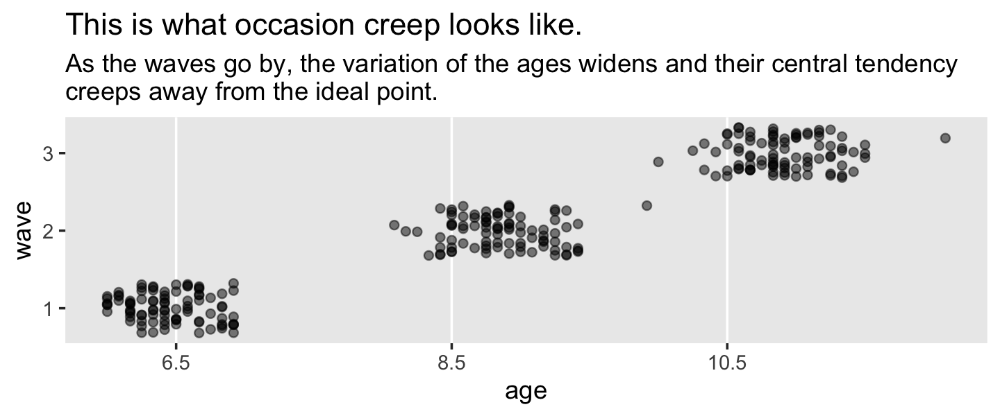
Here’s how we might make our version of Figure 5.1.
set.seed(5)
# wrangle
reading_pp %>%
nest(data = c(wave, agegrp, age, piat)) %>%
sample_n(size = 9) %>%
unnest(data) %>%
# this will help format and order the facets
mutate(id = ifelse(id < 10, str_c("0", id), id) %>% str_c("id = ", .)) %>%
pivot_longer(contains("age")) %>%
# plot
ggplot(aes(x = value, y = piat, color = name)) +
geom_point(alpha = 2/3) +
stat_smooth(method = "lm", se = F, linewidth = 1/2) +
scale_color_viridis_d(NULL, option = "B", end = .5, direction = -1) +
xlab("measure of age") +
coord_cartesian(xlim = c(5, 12),
ylim = c(0, 80)) +
theme(panel.grid = element_blank()) +
facet_wrap(~ id)Since it wasn’t clear which id values the authors used in the text, we just randomized. Change the seed to view different samples.
5.1.2 Postulating and fitting multilevel models with variably spaced waves of data.
The composite formula for our first model is
$$ \[\begin{align*} \text{piat}_{ij} & = \gamma_{00} + \gamma_{10} (\text{agegrp}_{ij} - 6.5) + \zeta_{0i} + \zeta_{1i} (\text{agegrp}_{ij} - 6.5) + \epsilon_{ij} \\ \epsilon_{ij} & \sim \operatorname{Normal} (0, \sigma_\epsilon) \\ \begin{bmatrix} \zeta_{0i} \\ \zeta_{1i} \end{bmatrix} & \sim \operatorname{Normal} \begin{pmatrix} \begin{bmatrix} 0 \\ 0 \end{bmatrix}, \mathbf \Sigma \end{pmatrix}, \text{where} \\ \mathbf \Sigma & = \mathbf D \mathbf\Omega \mathbf D', \text{where} \\ \mathbf D & = \begin{bmatrix} \sigma_0 & 0 \\ 0 & \sigma_1 \end{bmatrix} \text{and} \\ \mathbf \Omega & = \begin{bmatrix} 1 & \rho_{01} \\ \rho_{01} & 1 \end{bmatrix} \end{align*}\] $$
It’s the same for the twin model using age rather than agegrp. Notice how we’ve switched from Singer and Willett’s \(\sigma^2\) parameterization to the \(\sigma\) parameterization typical of brms.
reading_pp <-
reading_pp %>%
mutate(agegrp_c = agegrp - 6.5,
age_c = age - 6.5)
head(reading_pp)## # A tibble: 6 × 7
## id wave agegrp age piat agegrp_c age_c
## <dbl> <dbl> <dbl> <dbl> <dbl> <dbl> <dbl>
## 1 1 1 6.5 6 18 0 -0.5
## 2 1 2 8.5 8.33 35 2 1.83
## 3 1 3 10.5 10.3 59 4 3.83
## 4 2 1 6.5 6 18 0 -0.5
## 5 2 2 8.5 8.5 25 2 2
## 6 2 3 10.5 10.6 28 4 4.08In the last chapter, we began familiarizing ourselves with brms::brm() default priors. It’s time to level up. Another approach is to use domain knowledge to set weakly-informative priors. Let’s start with the PIAT. The Peabody Individual Achievement Test is a standardized individual test of scholastic achievement. It yields several subtest scores. The reading subtest is the one we’re focusing on, here. As is typical for such tests, the PIAT scores are normed to yield a population mean of 100 and a standard deviation of 15.
With that information alone, even a PIAT novice should have an idea about how to specify the priors. Since our sole predictor variables are versions of age centered at 6.5, we know that the model intercept is interpreted as the expected value on the PIAT when the children are 6.5 years old. If you knew nothing else, you’d guess the mean score would be 100 with a standard deviation around 15. One way to use a weakly-informative prior on the intercept would be to multiply that \(SD\) by a number like 2.
Next we need a prior for the time variables, age_c and agegrp_c. A one-unit increase in either of these is the expected increase in the PIAT with one year’s passage of age. Bringing in a little domain knowledge, IQ and achievement tests tend to be rather stable over time. However, we also expect children to get better as they age and we also don’t know exactly how these data have been adjusted for the children’s ages. It’s also important to know that it’s typical within the Bayesian world to place Normal priors on \(\beta\) parameters. So one approach would be to center the Normal prior on 0 and put something like twice the PIAT’s standard deviation on the prior’s \(\sigma\). If we were PIAT researchers, we could do much better. But with minimal knowledge of the test, this approach is certainly beats defaults.
Next we have the variance parameters. Recall that brms::brm() defaults are Student’s \(t\)-distributions with \(\nu = 3\) and \(\mu = 0\). Let’s start there. Now we just need to put values on \(\sigma\). Since the PIAT has a standard deviation of 15 in the population, why not just use 15? If you felt insecure about this, multiply if by a factor of 2 or so. Also recall that when Student’s \(t\)-distributions has a \(\nu = 3\), the tails are quite fat. Within the context of Bayesian priors, those fat tails make it easy for the likelihood to dominate the prior even when it’s a good way into the tail.
Finally, we have the correlation among the group-level variance parameters, \(\sigma_0\) and \(\sigma_1\). Recall that last chapter we learned the brms::brm() default was lkj(1). To get a sense of what the LKJ does, we’ll simulate from it. McElreath’s rethinking package contains a handy rlkjcorr() function, which will allow us to simulate n draws from a K by K correlation matrix for which \(\eta\) is defined by eta. Let’s take n <- 1e6 draws from two LKJ prior distributions, one with \(\eta = 1\) and the other with \(\eta = 4\).
library(rethinking)
n <- 1e6
set.seed(5)
lkj <-
tibble(eta = c(1, 4)) %>%
mutate(draws = purrr::map(eta, ~ rlkjcorr(n, K = 2, eta = .)[, 2, 1])) %>%
unnest(draws)
glimpse(lkj)## Rows: 2,000,000
## Columns: 2
## $ eta <dbl> 1, 1, 1, 1, 1, 1, 1, 1, 1, 1, 1, 1, 1, 1, 1, 1, 1, 1, 1, 1, 1, 1, 1, 1, 1, 1, 1, 1, …
## $ draws <dbl> 0.59957109, -0.83375155, 0.79069974, -0.05591997, -0.91300025, 0.45343010, 0.3631919…Now plot that lkj.
lkj %>%
mutate(eta = factor(eta)) %>%
ggplot(aes(x = draws, fill = eta, color = eta)) +
geom_density(size = 0, alpha = 2/3) +
geom_text(data = tibble(
draws = c(.75, .35),
y = c(.6, 1.05),
label = c("eta = 1", "eta = 4"),
eta = c(1, 4) %>% as.factor()),
aes(y = y, label = label)) +
scale_fill_viridis_d(option = "A", end = .5) +
scale_color_viridis_d(option = "A", end = .5) +
scale_y_continuous(NULL, breaks = NULL) +
xlab(expression(rho)) +
theme(panel.grid = element_blank(),
legend.position = "none")## Warning: Using `size` aesthetic for lines was deprecated in ggplot2 3.4.0.
## ℹ Please use `linewidth` instead.
## This warning is displayed once every 8 hours.
## Call `lifecycle::last_lifecycle_warnings()` to see where this warning was generated.When we use lkj(1), the prior is flat over the parameter space. However, setting lkj(4) is tantamount to a prior with a probability mass concentrated a bit towards zero. It’s a prior that’s skeptical of extremely large or small correlations. Within the context of our multilevel model \(\rho\) parameters, this will be our weakly-regularizing prior.
Let’s prepare to fit our models and load brms.
detach(package:rethinking, unload = T)
library(brms)Fit the models. Following the same form, the differ in that the first uses agegrp_c and the second uses age_c.
fit5.1 <-
brm(data = reading_pp,
family = gaussian,
piat ~ 0 + Intercept + agegrp_c + (1 + agegrp_c | id),
prior = c(prior(normal(100, 30), class = b, coef = Intercept),
prior(normal(0, 30), class = b, coef = agegrp_c),
prior(student_t(3, 0, 15), class = sd),
prior(student_t(3, 0, 15), class = sigma),
prior(lkj(4), class = cor)),
iter = 2000, warmup = 1000, chains = 4, cores = 4,
seed = 5,
file = "fits/fit05.01")
fit5.2 <-
brm(data = reading_pp,
family = gaussian,
piat ~ 0 + Intercept + age_c + (1 + age_c | id),
prior = c(prior(normal(100, 30), class = b, coef = Intercept),
prior(normal(0, 30), class = b, coef = age_c),
prior(student_t(3, 0, 15), class = sd),
prior(student_t(3, 0, 15), class = sigma),
prior(lkj(4), class = cor)),
iter = 2000, warmup = 1000, chains = 4, cores = 4,
seed = 5,
file = "fits/fit05.02")Focusing first on fit5.1, our analogue to the \((AGEGRP – 6.5)\) model displayed in Table 5.2, here is our model summary.
print(fit5.1, digits = 3)## Family: gaussian
## Links: mu = identity; sigma = identity
## Formula: piat ~ 0 + Intercept + agegrp_c + (1 + agegrp_c | id)
## Data: reading_pp (Number of observations: 267)
## Draws: 4 chains, each with iter = 2000; warmup = 1000; thin = 1;
## total post-warmup draws = 4000
##
## Group-Level Effects:
## ~id (Number of levels: 89)
## Estimate Est.Error l-95% CI u-95% CI Rhat Bulk_ESS Tail_ESS
## sd(Intercept) 3.388 0.824 1.724 4.981 1.009 1067 1719
## sd(agegrp_c) 2.197 0.284 1.659 2.787 1.003 1139 2070
## cor(Intercept,agegrp_c) 0.172 0.220 -0.226 0.627 1.007 616 1068
##
## Population-Level Effects:
## Estimate Est.Error l-95% CI u-95% CI Rhat Bulk_ESS Tail_ESS
## Intercept 21.198 0.634 19.941 22.452 1.000 4896 3166
## agegrp_c 5.028 0.309 4.422 5.637 1.000 4121 3240
##
## Family Specific Parameters:
## Estimate Est.Error l-95% CI u-95% CI Rhat Bulk_ESS Tail_ESS
## sigma 5.271 0.360 4.604 6.012 1.010 991 1720
##
## Draws were sampled using sampling(NUTS). For each parameter, Bulk_ESS
## and Tail_ESS are effective sample size measures, and Rhat is the potential
## scale reduction factor on split chains (at convergence, Rhat = 1).Here’s the age_c model.
print(fit5.2, digits = 3)## Family: gaussian
## Links: mu = identity; sigma = identity
## Formula: piat ~ 0 + Intercept + age_c + (1 + age_c | id)
## Data: reading_pp (Number of observations: 267)
## Draws: 4 chains, each with iter = 2000; warmup = 1000; thin = 1;
## total post-warmup draws = 4000
##
## Group-Level Effects:
## ~id (Number of levels: 89)
## Estimate Est.Error l-95% CI u-95% CI Rhat Bulk_ESS Tail_ESS
## sd(Intercept) 2.748 0.848 1.037 4.364 1.001 1081 1128
## sd(age_c) 1.976 0.247 1.520 2.477 1.002 1152 2193
## cor(Intercept,age_c) 0.244 0.229 -0.177 0.695 1.006 479 1107
##
## Population-Level Effects:
## Estimate Est.Error l-95% CI u-95% CI Rhat Bulk_ESS Tail_ESS
## Intercept 21.103 0.605 19.937 22.305 1.001 5162 3451
## age_c 4.537 0.283 3.973 5.078 1.001 2742 2634
##
## Family Specific Parameters:
## Estimate Est.Error l-95% CI u-95% CI Rhat Bulk_ESS Tail_ESS
## sigma 5.187 0.345 4.512 5.870 1.000 1220 1896
##
## Draws were sampled using sampling(NUTS). For each parameter, Bulk_ESS
## and Tail_ESS are effective sample size measures, and Rhat is the potential
## scale reduction factor on split chains (at convergence, Rhat = 1).For a more focused look, we can use fixef() compare our \(\gamma\)’s to each other and those in the text.
fixef(fit5.1) %>% round(digits = 3)## Estimate Est.Error Q2.5 Q97.5
## Intercept 21.198 0.634 19.941 22.452
## agegrp_c 5.028 0.309 4.422 5.637fixef(fit5.2) %>% round(digits = 3)## Estimate Est.Error Q2.5 Q97.5
## Intercept 21.103 0.605 19.937 22.305
## age_c 4.537 0.283 3.973 5.078Here are our \(\sigma_\epsilon\) summaries.
VarCorr(fit5.1)$residual$sd %>% round(digits = 3)## Estimate Est.Error Q2.5 Q97.5
## 5.271 0.36 4.604 6.012VarCorr(fit5.2)$residual$sd %>% round(digits = 3)## Estimate Est.Error Q2.5 Q97.5
## 5.187 0.345 4.512 5.87From a quick glance, you can see they are about the square of the \(\sigma_\epsilon^2\) estimates in the text.
Let’s go ahead and compute the LOO and WAIC.
fit5.1 <- add_criterion(fit5.1, criterion = c("loo", "waic"))
fit5.2 <- add_criterion(fit5.2, criterion = c("loo", "waic"))Compare the models with a WAIC difference.
loo_compare(fit5.1, fit5.2, criterion = "waic") %>%
print(simplify = F)## elpd_diff se_diff elpd_waic se_elpd_waic p_waic se_p_waic waic se_waic
## fit5.2 0.0 0.0 -865.6 15.3 77.4 7.2 1731.1 30.6
## fit5.1 -5.1 3.4 -870.6 13.6 78.5 6.5 1741.3 27.2The WAIC difference between the two isn’t that large relative to its standard error. The LOO tells a similar story.
loo_compare(fit5.1, fit5.2, criterion = "loo") %>%
print(simplify = F)## elpd_diff se_diff elpd_loo se_elpd_loo p_loo se_p_loo looic se_looic
## fit5.2 0.0 0.0 -879.9 16.0 91.7 8.3 1759.8 32.1
## fit5.1 -4.5 3.6 -884.4 14.3 92.3 7.5 1768.9 28.5The uncertainty in our WAIC and LOO estimates and their differences provides information that was not available for the AIC and the BIC comparisons in the text. We can also compare the WAIC and the LOO with model weights. Given the WAIC, from McElreath (2015) we learn
A total weight of 1 is partitioned among the considered models, making it easier to compare their relative predictive accuracy. The weight for a model \(i\) in a set of \(m\) models is given by:
\[w_i = \frac{\exp(-\frac{1}{2} \text{dWAIC}_i)}{\sum_{j = 1}^m \exp(-\frac{1}{2} \text{dWAIC}_i)}\]
where dWAIC is the
dWAICin thecomparetable output. This example uses WAIC but the formula is the same for any other information criterion, since they are all on the deviance scale. (p. 199)
The compare() function McElreath referenced is from his (2020b) rethinking package, which is meant to accompany his texts. We don’t have that function with brms. A rough analogue to the rethinking::compare() function is loo_compare(). We don’t quite have a dWAIC column from loo_compare(). Remember how last chapter we discussed how Aki Vehtari isn’t a fan of converting information criteria to the \(\chi^2\) difference metric with that last \(-2 \times ...\) step? That’s why we have an elpd_diff instead of a dWAIC. But to get the corresponding value, you just multiply those values by -2. And yet if you look closely at the formula for \(w_i\), you’ll see that each time the dWAIC term appears, it’s multiplied by \(-\frac{1}{2}\). So we don’t really need that dWAIC value anyway. As it turns out, we’re good to go with our elpd_diff. Thus the above equation simplifies to
\[ w_i = \frac{\exp(\text{elpd_diff}_i)}{\sum_{j = 1}^m \exp(\text{elpd_diff}_i)} \]
But recall you don’t have to do any of this by hand. We have the brms::model_weights() function, which we can use to compute weights with the WAIC or the LOO.
model_weights(fit5.1, fit5.2, weights = "waic") %>% round(digits = 3)## fit5.1 fit5.2
## 0.006 0.994model_weights(fit5.1, fit5.2, weights = "loo") %>% round(digits = 3)## fit5.1 fit5.2
## 0.011 0.989Both put the lion’s share of the weight on the age_c model. Back to McElreath McElreath (2015):
But what do these weights mean? There actually isn’t a consensus about that. But here’s Akaike’s interpretation, which is common.
A model’s weight is an estimate of the probability that the model will make the best predictions on new data, conditional on the set of models considered.
Here’s the heuristic explanation. First, regard WAIC as the expected deviance of a model on future data. That is to say that WAIC gives us an estimate of \(\text{E} (D_\text{test})\). Akaike weights convert these deviance values, which are log-likelihoods, to plain likelihoods and then standardize them all. This is just like Bayes’ theorem uses a sum in the denominator to standardize the produce of the likelihood and prior. Therefore the Akaike weights are analogous to posterior probabilities of models, conditional on expected future data. (p. 199, emphasis in the original)
5.2 Varying numbers of measurement occasions
As Singer and Willett pointed out,
once you allow the spacing of waves to vary across individuals, it is a small leap to allow their number to vary as well. Statisticians say that such data sets are unbalanced. As you would expect, balance facilitates analysis: models can be parameterized more easily, random effects can be estimated more precisely, and computer algorithms will converge more rapidly.
Yet a major advantage of the multilevel model for change is that it is easily fit to unbalanced data. (p. 146, emphasis in the original)
5.2.1 Analyzing data sets in which the number of waves per person varies.
Here we load the wages_pp.csv data.
wages_pp <- read_csv("data/wages_pp.csv")
glimpse(wages_pp)## Rows: 6,402
## Columns: 15
## $ id <dbl> 31, 31, 31, 31, 31, 31, 31, 31, 36, 36, 36, 36, 36, 36, 36, 36, 36, 36, 53, …
## $ lnw <dbl> 1.491, 1.433, 1.469, 1.749, 1.931, 1.709, 2.086, 2.129, 1.982, 1.798, 2.256,…
## $ exper <dbl> 0.015, 0.715, 1.734, 2.773, 3.927, 4.946, 5.965, 6.984, 0.315, 0.983, 2.040,…
## $ ged <dbl> 1, 1, 1, 1, 1, 1, 1, 1, 1, 1, 1, 1, 1, 1, 1, 1, 1, 1, 0, 0, 1, 1, 1, 1, 1, 1…
## $ postexp <dbl> 0.015, 0.715, 1.734, 2.773, 3.927, 4.946, 5.965, 6.984, 0.315, 0.983, 2.040,…
## $ black <dbl> 0, 0, 0, 0, 0, 0, 0, 0, 0, 0, 0, 0, 0, 0, 0, 0, 0, 0, 0, 0, 0, 0, 0, 0, 0, 0…
## $ hispanic <dbl> 1, 1, 1, 1, 1, 1, 1, 1, 0, 0, 0, 0, 0, 0, 0, 0, 0, 0, 1, 1, 1, 1, 1, 1, 1, 1…
## $ hgc <dbl> 8, 8, 8, 8, 8, 8, 8, 8, 9, 9, 9, 9, 9, 9, 9, 9, 9, 9, 7, 7, 7, 7, 7, 7, 7, 7…
## $ hgc.9 <dbl> -1, -1, -1, -1, -1, -1, -1, -1, 0, 0, 0, 0, 0, 0, 0, 0, 0, 0, -2, -2, -2, -2…
## $ uerate <dbl> 3.215, 3.215, 3.215, 3.295, 2.895, 2.495, 2.595, 4.795, 4.895, 7.400, 7.400,…
## $ ue.7 <dbl> -3.785, -3.785, -3.785, -3.705, -4.105, -4.505, -4.405, -2.205, -2.105, 0.40…
## $ ue.centert1 <dbl> 0.000, 0.000, 0.000, 0.080, -0.320, -0.720, -0.620, 1.580, 0.000, 2.505, 2.5…
## $ ue.mean <dbl> 3.2150, 3.2150, 3.2150, 3.2150, 3.2150, 3.2150, 3.2150, 3.2150, 5.0965, 5.09…
## $ ue.person.cen <dbl> 0.0000, 0.0000, 0.0000, 0.0800, -0.3200, -0.7200, -0.6200, 1.5800, -0.2015, …
## $ ue1 <dbl> 3.215, 3.215, 3.215, 3.215, 3.215, 3.215, 3.215, 3.215, 4.895, 4.895, 4.895,…Here’s a more focused look along the lines of Table 5.3.
wages_pp %>%
select(id, exper, lnw, black, hgc, uerate) %>%
filter(id %in% c(206, 332, 1028))## # A tibble: 20 × 6
## id exper lnw black hgc uerate
## <dbl> <dbl> <dbl> <dbl> <dbl> <dbl>
## 1 206 1.87 2.03 0 10 9.2
## 2 206 2.81 2.30 0 10 11
## 3 206 4.31 2.48 0 10 6.30
## 4 332 0.125 1.63 0 8 7.1
## 5 332 1.62 1.48 0 8 9.6
## 6 332 2.41 1.80 0 8 7.2
## 7 332 3.39 1.44 0 8 6.20
## 8 332 4.47 1.75 0 8 5.60
## 9 332 5.18 1.53 0 8 4.60
## 10 332 6.08 2.04 0 8 4.30
## 11 332 7.04 2.18 0 8 3.40
## 12 332 8.20 2.19 0 8 4.39
## 13 332 9.09 4.04 0 8 6.70
## 14 1028 0.004 0.872 1 8 9.3
## 15 1028 0.035 0.903 1 8 7.4
## 16 1028 0.515 1.39 1 8 7.3
## 17 1028 1.48 2.32 1 8 7.4
## 18 1028 2.14 1.48 1 8 6.30
## 19 1028 3.16 1.70 1 8 5.90
## 20 1028 4.10 2.34 1 8 6.9To get a sense of the diversity in the number of occasions per id, use group_by() and count().
wages_pp %>%
count(id) %>%
ggplot(aes(y = n)) +
geom_bar() +
scale_y_continuous("# measurement occasions", breaks = 1:13) +
xlab("count of cases") +
theme(panel.grid = element_blank())
The spacing of the measurement occasions also differs a lot across cases. Recall that exper “identifies the specific moment–to the nearest day–in each man’s labor force history associated with each observed value of” lnw (p. 147). Here’s a sense of what that looks like.
wages_pp %>%
filter(id %in% c(206, 332, 1028)) %>%
mutate(id = factor(id)) %>%
ggplot(aes(x = exper, y = lnw, color = id)) +
geom_point() +
geom_line() +
scale_color_viridis_d(option = "B", begin = .35, end = .8) +
theme(panel.grid = element_blank())Uneven for dayz.
Here’s the brms version of the composite formula for Model A, the unconditional growth model for lnw.
$$ \[\begin{align*} \text{lnw}_{ij} & = \gamma_{00} + \gamma_{10} \text{exper}_{ij} + \zeta_{0i} + \zeta_{1i} \text{exper}_{ij} + \epsilon_{ij} \\ \epsilon_{ij} & \sim \operatorname{Normal}(0, \sigma_\epsilon) \\ \begin{bmatrix} \zeta_{0i} \\ \zeta_{1i} \end{bmatrix} & \sim \operatorname{Normal} \begin{pmatrix} \begin{bmatrix} 0 \\ 0 \end{bmatrix}, \mathbf\Sigma \end{pmatrix}, \text{where} \\ \mathbf\Sigma & = \mathbf D \mathbf \Omega \mathbf D', \text{where} \\ \mathbf D & = \begin{bmatrix} \sigma_0 & 0 \\ 0 & \sigma_1 \end{bmatrix}, \text{and} \\ \mathbf\Omega & = \begin{bmatrix} 1 & \rho_{01} \\ \rho_{01} & 1 \end{bmatrix} \end{align*}\] $$
To attempt setting priors for this, we need to review what lnw is. From the text: “To adjust for inflation, each hourly wage is expressed in constant 1990 dollars. To address the skewness commonly found in wage data and to linearize the individual wage trajectories, we analyze the natural logarithm of wages, LNW” (p. 147). So it’s the log of participant wages in 1990 dollars. From the official US Social Secutiry website, we learn the average yearly wage in 1990 was $20,172.11. Here’s that natural log for that.
log(20172.11)## [1] 9.912056However, that’s the yearly wage. In the text, this is conceptualized as rate per hour. If we presume a 40 hour week for 52 weeks, this translates to a little less than $10 per hour.
20172.11 / (40 * 52)## [1] 9.69813Here’s what that looks like in a log metric.
log(20172.11 / (40 * 52))## [1] 2.271933But keep in mind that “to track wages on a common temporal scale, Murnane and colleagues decided to clock time from each respondent’s first day of work” (p. 147). So the wages at one’s initial point in the study were often entry-level wages. From the official website for the US Department of Labor, we learn the national US minimum wage in 1990 was $3.80 per hour. Here’s what that looks like on the log scale.
log(3.80)## [1] 1.335001So perhaps this is a better figure to center our prior for the model intercept on. If we stay with a conventional Gaussian prior and put \(\mu = 1.335\), what value should we use for the standard deviation? Well, if that’s the log minimum and 2.27 is the log mean, then there’s less than a log value of 1 between the minimum and the mean. If we’d like to continue our practice of weakly regularizing priors a value of 1 or even 0.5 on the log scale would seem reasonable. For simplicity, we’ll use normal(1.335, 1).
Next we need a prior for the expected increase over a single year’s employment. A conservative default might be to center it on zero—no change from year to year. Since as we’ve established a 1 on the log scale is more than the difference between the minimum and average hourly wages in 1990 dollars, we might just use normal(0, 0.5) as a starting point.
So then what about our variance parameters? Given these are all entry-level workers and given how little we’d expect them to increase from year to year, a student_t(3, 0, 1) on the log scale would seem pretty permissive.
So then here’s how we might formally specify our model priors:
\[ \begin{align*} \gamma_{00} & \sim \operatorname{Normal}(1.335, 1) \\ \gamma_{10} & \sim \operatorname{Normal}(0, 0.5) \\ \sigma_\epsilon & \sim \operatorname{Student-t}(3, 0, 1) \\ \sigma_0 & \sim \operatorname{Student-t}(3, 0, 1) \\ \sigma_1 & \sim \operatorname{Student-t}(3, 0, 1) \\ \rho_{01} & \sim \operatorname{LKJ} (4) \end{align*} \]
For a point of comparison, here are the brms::brm() default priors.
get_prior(data = wages_pp,
family = gaussian,
lnw ~ 0 + Intercept + exper + (1 + exper | id))## prior class coef group resp dpar nlpar lb ub source
## (flat) b default
## (flat) b exper (vectorized)
## (flat) b Intercept (vectorized)
## lkj(1) cor default
## lkj(1) cor id (vectorized)
## student_t(3, 0, 2.5) sd 0 default
## student_t(3, 0, 2.5) sd id 0 (vectorized)
## student_t(3, 0, 2.5) sd exper id 0 (vectorized)
## student_t(3, 0, 2.5) sd Intercept id 0 (vectorized)
## student_t(3, 0, 2.5) sigma 0 defaultEven though our priors are still quite permissive on the scale of the data, they’re much more informative than the defaults. If we had formal backgrounds in the entry-level economy of the US in the early 1900s, we’d be able to specify even better priors. But hopefully this walk-through gives a sense of how to start thinking about model priors.
Let’s fit the model. To keep the size of the fits/fit05.03.rds file below the 100MB GitHub limit, we’ll set chains = 3 and compensate by upping iter a little.
fit5.3 <-
brm(data = wages_pp,
family = gaussian,
lnw ~ 0 + Intercept + exper + (1 + exper | id),
prior = c(prior(normal(1.335, 1), class = b, coef = Intercept),
prior(normal(0, 0.5), class = b, coef = exper),
prior(student_t(3, 0, 1), class = sd),
prior(student_t(3, 0, 1), class = sigma),
prior(lkj(4), class = cor)),
iter = 2500, warmup = 1000, chains = 3, cores = 3,
seed = 5,
file = "fits/fit05.03")Here are the results.
print(fit5.3, digits = 3)## Family: gaussian
## Links: mu = identity; sigma = identity
## Formula: lnw ~ 0 + Intercept + exper + (1 + exper | id)
## Data: wages_pp (Number of observations: 6402)
## Draws: 3 chains, each with iter = 2500; warmup = 1000; thin = 1;
## total post-warmup draws = 4500
##
## Group-Level Effects:
## ~id (Number of levels: 888)
## Estimate Est.Error l-95% CI u-95% CI Rhat Bulk_ESS Tail_ESS
## sd(Intercept) 0.232 0.011 0.212 0.253 1.002 2004 2969
## sd(exper) 0.041 0.003 0.037 0.047 1.001 674 1505
## cor(Intercept,exper) -0.287 0.067 -0.410 -0.147 1.001 727 1645
##
## Population-Level Effects:
## Estimate Est.Error l-95% CI u-95% CI Rhat Bulk_ESS Tail_ESS
## Intercept 1.716 0.011 1.694 1.737 1.000 2959 3329
## exper 0.046 0.002 0.041 0.050 1.001 2821 3499
##
## Family Specific Parameters:
## Estimate Est.Error l-95% CI u-95% CI Rhat Bulk_ESS Tail_ESS
## sigma 0.309 0.003 0.303 0.315 1.000 4212 3206
##
## Draws were sampled using sampling(NUTS). For each parameter, Bulk_ESS
## and Tail_ESS are effective sample size measures, and Rhat is the potential
## scale reduction factor on split chains (at convergence, Rhat = 1).Since the criterion lnw is on the log scale, Singer and Willett pointed out our estimate for \(\gamma_{10}\) indicates a nonlinear growth rate on the natural dollar scale. They further explicated that “if an outcome in a linear relationship, \(Y\), is expressed as a natural logarithm and \(\hat \gamma_{01}\) is the regression coefficient for a predictor \(X\), then \(100(e^{\hat{\gamma}_{01}} - 1)\) is the percentage change in \(Y\) per unit difference in \(X\)” (p. 148, emphasis in the original). Here’s how to do that conversion with our brms output.
draws <-
as_draws_df(fit5.3) %>%
transmute(percent_change = 100 * (exp(b_exper) - 1))
head(draws)## # A tibble: 6 × 1
## percent_change
## <dbl>
## 1 4.88
## 2 4.69
## 3 5.07
## 4 4.51
## 5 4.53
## 6 4.51For our plot, let’s break out Matthew Kay’s handy tidybayes package (Kay, 2023). With the tidybayes::stat_halfeye() function, it’s easy to put horizontal point intervals beneath out parameter densities. Here we’ll use 95% intervals.
library(tidybayes)
draws %>%
ggplot(aes(x = percent_change, y = 0)) +
stat_halfeye(.width = .95) +
scale_y_continuous(NULL, breaks = NULL) +
labs(title = "Percent change",
x = expression(100*(italic(e)^(hat(gamma)[1][0])-1))) +
theme(panel.grid = element_blank())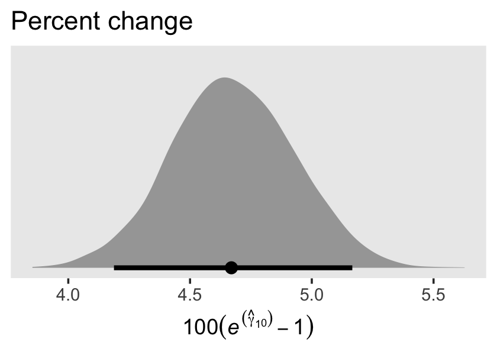
The tidybayes package also has a group of functions that make it easy to summarize posterior parameters with measures of central tendency (i.e., mean, median, mode) and intervals (i.e., percentile based, highest posterior density intervals). Here we’ll use median_qi() to get the posterior median and percentile-based 95% intervals.
draws %>%
median_qi(percent_change)## # A tibble: 1 × 6
## percent_change .lower .upper .width .point .interval
## <dbl> <dbl> <dbl> <dbl> <chr> <chr>
## 1 4.67 4.19 5.17 0.95 median qiFor our next model, Model B in Table 5.4, we add two time-invariant covariates. In the data, these are listed as black and hgc.9. Before we proceed, let’s rename hgc.9 to be more consistent with tidyverse style.
wages_pp <-
wages_pp %>%
rename(hgc_9 = hgc.9)There we go. Let’s take a look at the distributions of our covariates.
wages_pp %>%
pivot_longer(c(black, hgc_9)) %>%
ggplot(aes(x = value)) +
geom_bar() +
theme(panel.grid = element_blank()) +
facet_wrap(~ name, scales = "free")We see black is a dummy variable coded “Black” = 1, “Non-black” = 0. hgc_9 is a somewhat Gaussian ordinal centered around zero. For context, it might also help to check its standard deviation.
sd(wages_pp$hgc_9)## [1] 1.347135With a mean near 0 and an \(SD\) near 1, hgc_9 is almost in a standardized metric. If we wanted to keep with our weakly-regularizing approach, normal(0, 1) or even normal(0, 0.5) would be pretty permissive for both these variables. Recall that we’re predicting wage on the log scale. A \(\gamma\) value of 1 or even 0.5 would be humongous for the social sciences. Since we already have the \(\gamma\) for exper set to normal(0, 0.5), let’s just keep with that. Here’s how we might describe our model in statistical terms:
$$ \[\begin{align*} \text{lnw}_{ij} & = \gamma_{00} + \gamma_{01} (\text{hgc}_{i} - 9) + \gamma_{02} \text{black}_{i} \\ & \;\;\; + \gamma_{10} \text{exper}_{ij} + \gamma_{11} \text{exper}_{ij} \times (\text{hgc}_{i} - 9) + \gamma_{12} \text{exper}_{ij} \times \text{black}_{i} \\ & \;\;\; + \zeta_{0i} + \zeta_{1i} \text{exper}_{ij} + \epsilon_{ij} \\ \epsilon_{ij} & \sim \operatorname{Normal} (0, \sigma_\epsilon) \\ \begin{bmatrix} \zeta_{0i} \\ \zeta_{1i} \end{bmatrix} & \sim \operatorname{Normal} \begin{pmatrix} \begin{bmatrix} 0 \\ 0 \end{bmatrix}, \mathbf D \mathbf\Omega \mathbf D' \end{pmatrix} \\ \mathbf D & = \begin{bmatrix} \sigma_0 & 0 \\ 0 & \sigma_1 \end{bmatrix} \\ \mathbf\Omega & = \begin{bmatrix} 1 & \rho_{01} \\ \rho_{01} & 1 \end{bmatrix} \\ \gamma_{00} & \sim \operatorname{Normal}(1.335, 1) \\ \gamma_{01}, \dots, \gamma_{12} & \sim \operatorname{Normal}(0, 0.5) \\ \sigma_\epsilon, \sigma_0, \text{ and } \sigma_1 & \sim \operatorname{Student-t} (3, 0, 1) \\ \rho_{01} & \sim \operatorname{LKJ} (4). \end{align*}\] $$
The top portion up through the \(\mathbf\Omega\) line is the likelihood. Starting with \(\gamma_{00} \sim \text{Normal}(1.335, 1)\) on down, we’ve listed our priors. Here’s how to fit the model with brms.
fit5.4 <-
brm(data = wages_pp,
family = gaussian,
lnw ~ 0 + Intercept + hgc_9 + black + exper + exper:hgc_9 + exper:black + (1 + exper | id),
prior = c(prior(normal(1.335, 1), class = b, coef = Intercept),
prior(normal(0, 0.5), class = b),
prior(student_t(3, 0, 1), class = sd),
prior(student_t(3, 0, 1), class = sigma),
prior(lkj(4), class = cor)),
iter = 2500, warmup = 1000, chains = 3, cores = 3,
seed = 5,
file = "fits/fit05.04")Let’s take a look at the results.
print(fit5.4, digits = 3)## Family: gaussian
## Links: mu = identity; sigma = identity
## Formula: lnw ~ 0 + Intercept + hgc_9 + black + exper + exper:hgc_9 + exper:black + (1 + exper | id)
## Data: wages_pp (Number of observations: 6402)
## Draws: 3 chains, each with iter = 2500; warmup = 1000; thin = 1;
## total post-warmup draws = 4500
##
## Group-Level Effects:
## ~id (Number of levels: 888)
## Estimate Est.Error l-95% CI u-95% CI Rhat Bulk_ESS Tail_ESS
## sd(Intercept) 0.227 0.011 0.207 0.249 1.002 1467 2232
## sd(exper) 0.040 0.003 0.035 0.046 1.006 501 1219
## cor(Intercept,exper) -0.293 0.071 -0.418 -0.144 1.006 566 1296
##
## Population-Level Effects:
## Estimate Est.Error l-95% CI u-95% CI Rhat Bulk_ESS Tail_ESS
## Intercept 1.717 0.013 1.693 1.742 1.000 2367 3009
## hgc_9 0.035 0.008 0.020 0.050 1.001 2907 3462
## black 0.016 0.024 -0.030 0.062 1.002 2135 2973
## exper 0.049 0.003 0.044 0.054 1.000 2349 3573
## hgc_9:exper 0.001 0.002 -0.002 0.005 1.000 2667 3164
## black:exper -0.018 0.005 -0.029 -0.007 1.000 2152 2714
##
## Family Specific Parameters:
## Estimate Est.Error l-95% CI u-95% CI Rhat Bulk_ESS Tail_ESS
## sigma 0.309 0.003 0.303 0.315 1.001 2849 3100
##
## Draws were sampled using sampling(NUTS). For each parameter, Bulk_ESS
## and Tail_ESS are effective sample size measures, and Rhat is the potential
## scale reduction factor on split chains (at convergence, Rhat = 1).The \(\gamma\)’s are on par with those in the text. When we convert the \(\sigma\) parameters to the \(\sigma^2\) metric, here’s what they look like.
draws <- as_draws_df(fit5.4)
draws %>%
transmute(`sigma[0]^2` = sd_id__Intercept^2,
`sigma[1]^2` = sd_id__exper^2,
`sigma[epsilon]^2` = sigma^2) %>%
pivot_longer(everything()) %>%
ggplot(aes(x = value, y = name)) +
stat_halfeye(.width = .95, normalize = "xy") +
scale_y_discrete(NULL, labels = ggplot2:::parse_safe) +
coord_cartesian(ylim = c(1.4, 3.4)) +
theme(axis.ticks.y = element_blank(),
panel.grid = element_blank())
We might plot our \(\gamma\)’s, too. Here we’ll use tidybayes::stat_pointinterval() to just focus on the points and intervals.
draws %>%
select(b_Intercept:`b_black:exper`) %>%
set_names(str_c("gamma", c("[0][0]", "[0][1]", "[0][2]", "[1][0]", "[1][1]", "[1][2]"))) %>%
pivot_longer(everything()) %>%
ggplot(aes(x = value, y = name)) +
geom_vline(xintercept = 0, color = "white") +
stat_pointinterval(.width = .95, size = 1/2) +
scale_y_discrete(NULL, labels = ggplot2:::parse_safe) +
theme(axis.ticks.y = element_blank(),
panel.grid = element_blank())As in the text, our \(\gamma_{02}\) and \(\gamma_{11}\) parameters hovered around zero. For our next model, Model C in Table 5.4, we’ll drop those parameters.
fit5.5 <-
brm(data = wages_pp,
family = gaussian,
lnw ~ 0 + Intercept + hgc_9 + exper + exper:black + (1 + exper | id),
prior = c(prior(normal(1.335, 1), class = b, coef = Intercept),
prior(normal(0, 0.5), class = b),
prior(student_t(3, 0, 1), class = sd),
prior(student_t(3, 0, 1), class = sigma),
prior(lkj(4), class = cor)),
iter = 2500, warmup = 1000, chains = 3, cores = 3,
seed = 5,
file = "fits/fit05.05")Let’s take a look at the results.
print(fit5.5, digits = 3)## Family: gaussian
## Links: mu = identity; sigma = identity
## Formula: lnw ~ 0 + Intercept + hgc_9 + exper + exper:black + (1 + exper | id)
## Data: wages_pp (Number of observations: 6402)
## Draws: 3 chains, each with iter = 2500; warmup = 1000; thin = 1;
## total post-warmup draws = 4500
##
## Group-Level Effects:
## ~id (Number of levels: 888)
## Estimate Est.Error l-95% CI u-95% CI Rhat Bulk_ESS Tail_ESS
## sd(Intercept) 0.227 0.011 0.206 0.249 1.000 1687 2519
## sd(exper) 0.041 0.003 0.035 0.046 1.002 651 1287
## cor(Intercept,exper) -0.297 0.069 -0.424 -0.156 1.001 699 1767
##
## Population-Level Effects:
## Estimate Est.Error l-95% CI u-95% CI Rhat Bulk_ESS Tail_ESS
## Intercept 1.722 0.011 1.701 1.743 1.001 2946 3624
## hgc_9 0.038 0.006 0.025 0.051 1.000 2909 3307
## exper 0.049 0.003 0.044 0.054 1.001 2656 3501
## exper:black -0.016 0.005 -0.025 -0.007 1.001 2448 3128
##
## Family Specific Parameters:
## Estimate Est.Error l-95% CI u-95% CI Rhat Bulk_ESS Tail_ESS
## sigma 0.309 0.003 0.303 0.315 1.002 3348 3526
##
## Draws were sampled using sampling(NUTS). For each parameter, Bulk_ESS
## and Tail_ESS are effective sample size measures, and Rhat is the potential
## scale reduction factor on split chains (at convergence, Rhat = 1).Perhaps unsurprisingly, the parameter estimates for fit5.5 ended up quite similar to those from fit5.4. Happily, they’re also similar to those in the text. Let’s compute the WAIC estimates.
fit5.3 <- add_criterion(fit5.3, criterion = "waic")
fit5.4 <- add_criterion(fit5.4, criterion = "waic")
fit5.5 <- add_criterion(fit5.5, criterion = "waic")Compare their WAIC estimates using \(\text{elpd}\) difference scores.
loo_compare(fit5.3, fit5.4, fit5.5, criterion = "waic") %>%
print(simplify = F)## elpd_diff se_diff elpd_waic se_elpd_waic p_waic se_p_waic waic se_waic
## fit5.5 0.0 0.0 -2051.2 103.8 866.6 27.0 4102.3 207.5
## fit5.4 -0.2 1.6 -2051.4 103.5 867.8 26.9 4102.8 207.1
## fit5.3 -2.5 4.2 -2053.7 103.5 876.2 27.0 4107.4 207.1The differences are subtle. Here are the WAIC weights.
model_weights(fit5.3, fit5.4, fit5.5, weights = "waic") %>%
round(digits = 3)## fit5.3 fit5.4 fit5.5
## 0.042 0.424 0.534When we use weights, almost all goes to fit5.4 and fit5.5. Focusing on the trimmed model, fit5.5, let’s get ready to make our version of Figure 5.2. We’ll start with fitted() work.
nd <-
crossing(black = 0:1,
hgc_9 = c(0, 3)) %>%
expand_grid(exper = seq(from = 0, to = 11, length.out = 30))
f <-
fitted(fit5.5,
newdata = nd,
re_formula = NA) %>%
data.frame() %>%
bind_cols(nd)
head(f)## Estimate Est.Error Q2.5 Q97.5 black hgc_9 exper
## 1 1.721590 0.010598941 1.701243 1.742709 0 0 0.0000000
## 2 1.740120 0.010144588 1.720661 1.760299 0 0 0.3793103
## 3 1.758651 0.009765267 1.739506 1.778078 0 0 0.7586207
## 4 1.777181 0.009469999 1.758576 1.795902 0 0 1.1379310
## 5 1.795712 0.009266821 1.777720 1.814151 0 0 1.5172414
## 6 1.814242 0.009161863 1.796453 1.832464 0 0 1.8965517Here it is, our two-panel version of Figure 5.2.
f %>%
mutate(black = factor(black,
labels = c("Latinos and Whites", "Blacks")),
hgc_9 = factor(hgc_9,
labels = c("9th grade dropouts", "12th grade dropouts"))) %>%
ggplot(aes(x = exper,
color = black, fill = black)) +
geom_ribbon(aes(ymin = Q2.5, ymax = Q97.5),
size = 0, alpha = 1/4) +
geom_line(aes(y = Estimate)) +
scale_fill_viridis_d(NULL, option = "C", begin = .25, end = .75) +
scale_color_viridis_d(NULL, option = "C", begin = .25, end = .75) +
ylab("lnw") +
coord_cartesian(ylim = c(1.6, 2.4)) +
theme(panel.grid = element_blank()) +
facet_wrap(~ hgc_9)This leads in nicely to a brief discussion of posterior predictive checks (PPC). The basic idea is that good models should be able to retrodict the data used to produce them. Table 5.3 in the text introduced the data set by highlighting three participants and we went ahead and looked at their data in a plot. One way to do a PPC might be to plot their original data atop their model estimates. The fitted() function will help us with the preparatory work.
nd <-
wages_pp %>%
filter(id %in% c(206, 332, 1028))
f <-
fitted(fit5.5,
newdata = nd) %>%
data.frame() %>%
bind_cols(nd)
head(f)## Estimate Est.Error Q2.5 Q97.5 id lnw exper ged postexp black hispanic hgc hgc_9 uerate
## 1 2.057977 0.1382457 1.788240 2.322068 206 2.028 1.874 0 0 0 0 10 1 9.200
## 2 2.118612 0.1377214 1.850584 2.384066 206 2.297 2.814 0 0 0 0 10 1 11.000
## 3 2.215370 0.1559436 1.910120 2.519224 206 2.482 4.314 0 0 0 0 10 1 6.295
## 4 1.461034 0.1366113 1.184824 1.722247 332 1.630 0.125 0 0 0 1 8 -1 7.100
## 5 1.644720 0.1109559 1.420882 1.858243 332 1.476 1.625 0 0 0 1 8 -1 9.600
## 6 1.741217 0.1005240 1.538177 1.934535 332 1.804 2.413 0 0 0 1 8 -1 7.200
## ue.7 ue.centert1 ue.mean ue.person.cen ue1
## 1 2.200 0.000 8.831667 0.3683333 9.2
## 2 4.000 1.800 8.831667 2.1683333 9.2
## 3 -0.705 -2.905 8.831667 -2.5366667 9.2
## 4 0.100 0.000 5.906500 1.1935000 7.1
## 5 2.600 2.500 5.906500 3.6935000 7.1
## 6 0.200 0.100 5.906500 1.2935000 7.1Here’s the plot.
f %>%
mutate(id = str_c("id = ", id)) %>%
ggplot(aes(x = exper)) +
geom_pointrange(aes(y = Estimate, ymin = Q2.5, ymax = Q97.5,
color = id)) +
geom_point(aes(y = lnw)) +
scale_color_viridis_d(option = "B", begin = .35, end = .8) +
labs(subtitle = "The black dots are the original data. The colored points and vertical lines are the participant-specific posterior\nmeans and 95% intervals.") +
theme(legend.position = "none",
panel.grid = element_blank()) +
facet_wrap(~ id)Although each participant got their own intercept and slope, the estimates all fall in straight lines. Since we’re only working with time-invariant covariates, that’s about the best we can do. Though our models can express gross trends over time, they’re unable to speak to variation from occasion to occasion. Just a little later on in this chapter and we’ll learn how to do better.
5.2.2 Practical problems that may arise when analyzing unbalanced data sets.
With HMC, the issues with non-convergence aren’t quite the same as with maximum likelihood estimation. However, the basic issue still remains:
Estimation of variance components requires that enough people have sufficient data to allow quantification of within-person residual variation–variation in the residuals over and above the fixed effects. If too many people have too little data, you will
be unable to quantify[have difficulty quantifying] this residual variability. (p. 152)
The big difference is that as Bayesians, our priors add additional information that will help us define the posterior distributions of our variance components. Thus our challenge will choosing sensible priors for our \(\sigma\)’s.
5.2.2.1 Boundary constraints.
Unlike with the frequentist multilevel software discussed in the text, brms will not yield negative values on the \(\sigma\) parameters. This is because the brms default is to set a lower limit of zero on those parameters. For example, see what happens when we execute fit5.3$model.
fit5.3$model## // generated with brms 2.19.0
## functions {
## /* compute correlated group-level effects
## * Args:
## * z: matrix of unscaled group-level effects
## * SD: vector of standard deviation parameters
## * L: cholesky factor correlation matrix
## * Returns:
## * matrix of scaled group-level effects
## */
## matrix scale_r_cor(matrix z, vector SD, matrix L) {
## // r is stored in another dimension order than z
## return transpose(diag_pre_multiply(SD, L) * z);
## }
## }
## data {
## int<lower=1> N; // total number of observations
## vector[N] Y; // response variable
## int<lower=1> K; // number of population-level effects
## matrix[N, K] X; // population-level design matrix
## // data for group-level effects of ID 1
## int<lower=1> N_1; // number of grouping levels
## int<lower=1> M_1; // number of coefficients per level
## int<lower=1> J_1[N]; // grouping indicator per observation
## // group-level predictor values
## vector[N] Z_1_1;
## vector[N] Z_1_2;
## int<lower=1> NC_1; // number of group-level correlations
## int prior_only; // should the likelihood be ignored?
## }
## transformed data {
## }
## parameters {
## vector[K] b; // population-level effects
## real<lower=0> sigma; // dispersion parameter
## vector<lower=0>[M_1] sd_1; // group-level standard deviations
## matrix[M_1, N_1] z_1; // standardized group-level effects
## cholesky_factor_corr[M_1] L_1; // cholesky factor of correlation matrix
## }
## transformed parameters {
## matrix[N_1, M_1] r_1; // actual group-level effects
## // using vectors speeds up indexing in loops
## vector[N_1] r_1_1;
## vector[N_1] r_1_2;
## real lprior = 0; // prior contributions to the log posterior
## // compute actual group-level effects
## r_1 = scale_r_cor(z_1, sd_1, L_1);
## r_1_1 = r_1[, 1];
## r_1_2 = r_1[, 2];
## lprior += normal_lpdf(b[1] | 1.335, 1);
## lprior += normal_lpdf(b[2] | 0, 0.5);
## lprior += student_t_lpdf(sigma | 3, 0, 1)
## - 1 * student_t_lccdf(0 | 3, 0, 1);
## lprior += student_t_lpdf(sd_1 | 3, 0, 1)
## - 2 * student_t_lccdf(0 | 3, 0, 1);
## lprior += lkj_corr_cholesky_lpdf(L_1 | 4);
## }
## model {
## // likelihood including constants
## if (!prior_only) {
## // initialize linear predictor term
## vector[N] mu = rep_vector(0.0, N);
## for (n in 1:N) {
## // add more terms to the linear predictor
## mu[n] += r_1_1[J_1[n]] * Z_1_1[n] + r_1_2[J_1[n]] * Z_1_2[n];
## }
## target += normal_id_glm_lpdf(Y | X, mu, b, sigma);
## }
## // priors including constants
## target += lprior;
## target += std_normal_lpdf(to_vector(z_1));
## }
## generated quantities {
## // compute group-level correlations
## corr_matrix[M_1] Cor_1 = multiply_lower_tri_self_transpose(L_1);
## vector<lower=-1,upper=1>[NC_1] cor_1;
## // extract upper diagonal of correlation matrix
## for (k in 1:M_1) {
## for (j in 1:(k - 1)) {
## cor_1[choose(k - 1, 2) + j] = Cor_1[j, k];
## }
## }
## }That returned the Stan code corresponding to our brms::brm() code, above. Notice the second and third lines in the parameters block. Both contained <lower=0>, which indicated the lower bounds for those parameters was zero. See? Stan has you covered.
Let’s load the wages_small_pp.csv data.
wages_small_pp <- read_csv("data/wages_small_pp.csv") %>%
rename(hgc_9 = hcg.9)
glimpse(wages_small_pp)## Rows: 257
## Columns: 5
## $ id <dbl> 206, 206, 206, 266, 304, 329, 329, 329, 336, 336, 336, 394, 394, 394, 518, 518, 541,…
## $ lnw <dbl> 2.028, 2.297, 2.482, 1.808, 1.842, 1.422, 1.308, 1.885, 1.892, 1.279, 2.224, 2.383, …
## $ exper <dbl> 1.874, 2.814, 4.314, 0.322, 0.580, 0.016, 0.716, 1.756, 1.910, 2.514, 3.706, 1.890, …
## $ black <dbl> 0, 0, 0, 0, 0, 0, 0, 0, 1, 1, 1, 1, 1, 1, 1, 1, 0, 0, 0, 1, 1, 1, 1, 1, 1, 0, 0, 0, …
## $ hgc_9 <dbl> 1, 1, 1, 0, -1, -1, -1, -1, -1, -1, -1, 1, 1, 1, -1, -1, 1, 1, 1, 1, 1, 1, 2, -1, 0,…Here’s the distribution of the number of measurement occasions for our small data set.
wages_small_pp %>%
count(id) %>%
ggplot(aes(y = n)) +
geom_bar() +
scale_y_continuous("# measurement occasions", breaks = 1:13, limits = c(.5, 13)) +
xlab("count of cases") +
theme(panel.grid = element_blank())Our brm() code is the same as that for fit5.5, above, with just a slightly different data argument. If we wanted to, we could be hasty and just use update(), instead. But since we’re still practicing setting our priors and such, here we’ll be exhaustive.
fit5.6 <-
brm(data = wages_small_pp,
family = gaussian,
lnw ~ 0 + Intercept + hgc_9 + exper + exper:black + (1 + exper | id),
prior = c(prior(normal(1.335, 1), class = b, coef = Intercept),
prior(normal(0, 0.5), class = b),
prior(student_t(3, 0, 1), class = sd),
prior(student_t(3, 0, 1), class = sigma),
prior(lkj(4), class = cor)),
iter = 2000, warmup = 1000, chains = 4, cores = 4,
seed = 5,
file = "fits/fit05.06")print(fit5.6)## Warning: There were 28 divergent transitions after warmup. Increasing adapt_delta above 0.8 may
## help. See http://mc-stan.org/misc/warnings.html#divergent-transitions-after-warmup## Family: gaussian
## Links: mu = identity; sigma = identity
## Formula: lnw ~ 0 + Intercept + hgc_9 + exper + exper:black + (1 + exper | id)
## Data: wages_small_pp (Number of observations: 257)
## Draws: 4 chains, each with iter = 2000; warmup = 1000; thin = 1;
## total post-warmup draws = 4000
##
## Group-Level Effects:
## ~id (Number of levels: 124)
## Estimate Est.Error l-95% CI u-95% CI Rhat Bulk_ESS Tail_ESS
## sd(Intercept) 0.29 0.05 0.19 0.38 1.01 681 628
## sd(exper) 0.04 0.03 0.00 0.11 1.02 338 213
## cor(Intercept,exper) -0.05 0.31 -0.62 0.59 1.00 974 648
##
## Population-Level Effects:
## Estimate Est.Error l-95% CI u-95% CI Rhat Bulk_ESS Tail_ESS
## Intercept 1.74 0.05 1.64 1.83 1.00 2166 2413
## hgc_9 0.05 0.02 -0.00 0.10 1.00 2186 2537
## exper 0.05 0.02 0.00 0.10 1.00 2283 1898
## exper:black -0.05 0.04 -0.13 0.02 1.00 1686 2786
##
## Family Specific Parameters:
## Estimate Est.Error l-95% CI u-95% CI Rhat Bulk_ESS Tail_ESS
## sigma 0.34 0.02 0.30 0.39 1.00 1118 2328
##
## Draws were sampled using sampling(NUTS). For each parameter, Bulk_ESS
## and Tail_ESS are effective sample size measures, and Rhat is the potential
## scale reduction factor on split chains (at convergence, Rhat = 1).Let’s walk through this slow.
You may have noticed that warning message about divergent transitions. We’ll get to that in a bit. First focus on the parameter estimates for sd(exper). Unlike in the text, our posterior mean is not 0.000. But do remember that our posterior is parameterized in the \(\sigma\) metric. Let’s do a little converting and look at it in a plot.
draws <- as_draws_df(fit5.6)
v <-
draws %>%
transmute(sigma_1 = sd_id__exper) %>%
mutate(sigma_2_1 = sigma_1^2) %>%
set_names("sigma[1]", "sigma[1]^2") %>%
pivot_longer(everything())Plot.
v %>%
ggplot(aes(x = value, y = name)) +
stat_halfeye(.width = .95, normalize = "xy") +
scale_y_discrete(NULL, labels = parse(text = c("sigma[1]", "sigma[1]^2"))) +
theme(axis.ticks.y = element_blank(),
panel.grid = element_blank())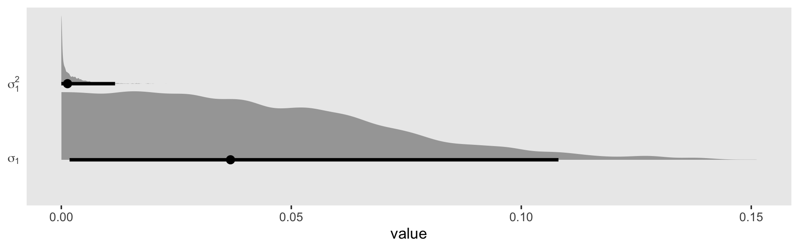
In the \(\sigma\) metric, the posterior is bunched up a little on the boundary, but much of its mass is a gently right-skewed mound concentrated in the 0—0.1 range. When we convert the posterior to the \(\sigma^2\) metric, the parameter appears much more bunched up against the boundary. Because we typically summarize our posteriors with means or medians, the point estimate still moves away from zero.
v %>%
group_by(name) %>%
mean_qi() %>%
mutate_if(is.double, round, digits = 4)## # A tibble: 2 × 7
## name value .lower .upper .width .point .interval
## <chr> <dbl> <dbl> <dbl> <dbl> <chr> <chr>
## 1 sigma[1] 0.0412 0.0018 0.108 0.95 mean qi
## 2 sigma[1]^2 0.0025 0 0.0117 0.95 mean qiv %>%
group_by(name) %>%
median_qi() %>%
mutate_if(is.double, round, digits = 4)## # A tibble: 2 × 7
## name value .lower .upper .width .point .interval
## <chr> <dbl> <dbl> <dbl> <dbl> <chr> <chr>
## 1 sigma[1] 0.0368 0.0018 0.108 0.95 median qi
## 2 sigma[1]^2 0.0014 0 0.0117 0.95 median qiBut it really does start to shoot to zero if we attempt to summarize the central tendency with the mode, as within the maximum likelihood paradigm.
v %>%
group_by(name) %>%
mode_qi() %>%
mutate_if(is.double, round, digits = 4)## # A tibble: 2 × 7
## name value .lower .upper .width .point .interval
## <chr> <dbl> <dbl> <dbl> <dbl> <chr> <chr>
## 1 sigma[1] 0.0159 0.0018 0.108 0.95 mode qi
## 2 sigma[1]^2 0 0 0.0117 0.95 mode qiBacking up to that warning message, we were informed that “Increasing adapt_delta above 0.8 may help.” The adapt_delta parameter ranges from 0 to 1. The brm() default is .8. In my experience, increasing to .9 or .99 is often a good place to start. For this model, .9 wasn’t quite enough, but .99 worked. Here’s how to do it.
fit5.7 <-
brm(data = wages_small_pp,
family = gaussian,
lnw ~ 0 + Intercept + hgc_9 + exper + exper:black + (1 + exper | id),
prior = c(prior(normal(1.335, 1), class = b, coef = Intercept),
prior(normal(0, 0.5), class = b),
prior(student_t(3, 0, 1), class = sd),
prior(student_t(3, 0, 1), class = sigma),
prior(lkj(4), class = cor)),
iter = 2000, warmup = 1000, chains = 4, cores = 4,
seed = 5,
control = list(adapt_delta = .99),
file = "fits/fit05.07")Now look at the summary.
print(fit5.7)## Family: gaussian
## Links: mu = identity; sigma = identity
## Formula: lnw ~ 0 + Intercept + hgc_9 + exper + exper:black + (1 + exper | id)
## Data: wages_small_pp (Number of observations: 257)
## Draws: 4 chains, each with iter = 2000; warmup = 1000; thin = 1;
## total post-warmup draws = 4000
##
## Group-Level Effects:
## ~id (Number of levels: 124)
## Estimate Est.Error l-95% CI u-95% CI Rhat Bulk_ESS Tail_ESS
## sd(Intercept) 0.28 0.05 0.19 0.37 1.00 1076 1236
## sd(exper) 0.04 0.03 0.00 0.10 1.02 321 791
## cor(Intercept,exper) -0.05 0.32 -0.62 0.60 1.00 2443 2768
##
## Population-Level Effects:
## Estimate Est.Error l-95% CI u-95% CI Rhat Bulk_ESS Tail_ESS
## Intercept 1.74 0.05 1.64 1.83 1.00 2364 2688
## hgc_9 0.05 0.02 -0.00 0.10 1.00 1981 2913
## exper 0.05 0.02 0.01 0.09 1.00 2410 2746
## exper:black -0.05 0.04 -0.12 0.02 1.00 2841 3135
##
## Family Specific Parameters:
## Estimate Est.Error l-95% CI u-95% CI Rhat Bulk_ESS Tail_ESS
## sigma 0.34 0.02 0.30 0.39 1.00 1398 2111
##
## Draws were sampled using sampling(NUTS). For each parameter, Bulk_ESS
## and Tail_ESS are effective sample size measures, and Rhat is the potential
## scale reduction factor on split chains (at convergence, Rhat = 1).Our estimates were pretty much the same as before. Happily, this time we got our summary without any warning signs. It won’t always be that way, so make sure to take adapt_delta warnings seriously.
Now do note that for both fit5.6 and fit5.7, our effective sample sizes for \(\sigma_0\) and \(\sigma_1\) aren’t terribly large relative to the total number of post-warmup draws, 4,000. If it was really important that you had high-quality summary statistics for these parameters, you might need to refit the model with something like iter = 20000, warmup = 2000.
In Model B in Table 5.5, Singer and Willett gave the results of a model with the boundary constraints on the \(\sigma^2\) parameters removed. I am not going to attempt something like that with brms. If you’re interested, you’re on your own.
But we will fit a version of their Model C where we’ve removed the \(\sigma_1\) parameter. Notice that this results in our removal of the LKJ prior for \(\rho_{01}\), too. Without a \(\sigma_1\), there’s no other parameter with which our lonely \(\sigma_0\) might covary.
fit5.8 <-
brm(data = wages_small_pp,
family = gaussian,
lnw ~ 0 + Intercept + hgc_9 + exper + exper:black + (1 | id),
prior = c(prior(normal(1.335, 1), class = b, coef = Intercept),
prior(normal(0, 0.5), class = b),
prior(student_t(3, 0, 1), class = sd),
prior(student_t(3, 0, 1), class = sigma)),
iter = 2000, warmup = 1000, chains = 4, cores = 4,
seed = 5,
file = "fits/fit05.08")Here is the basic model summary.
print(fit5.8)## Family: gaussian
## Links: mu = identity; sigma = identity
## Formula: lnw ~ 0 + Intercept + hgc_9 + exper + exper:black + (1 | id)
## Data: wages_small_pp (Number of observations: 257)
## Draws: 4 chains, each with iter = 2000; warmup = 1000; thin = 1;
## total post-warmup draws = 4000
##
## Group-Level Effects:
## ~id (Number of levels: 124)
## Estimate Est.Error l-95% CI u-95% CI Rhat Bulk_ESS Tail_ESS
## sd(Intercept) 0.30 0.04 0.22 0.37 1.00 975 2080
##
## Population-Level Effects:
## Estimate Est.Error l-95% CI u-95% CI Rhat Bulk_ESS Tail_ESS
## Intercept 1.74 0.05 1.64 1.83 1.00 2494 3027
## hgc_9 0.05 0.03 -0.01 0.10 1.00 2323 2477
## exper 0.05 0.02 0.01 0.10 1.00 2504 2850
## exper:black -0.06 0.04 -0.13 0.01 1.00 3029 2647
##
## Family Specific Parameters:
## Estimate Est.Error l-95% CI u-95% CI Rhat Bulk_ESS Tail_ESS
## sigma 0.34 0.02 0.30 0.39 1.00 1616 2259
##
## Draws were sampled using sampling(NUTS). For each parameter, Bulk_ESS
## and Tail_ESS are effective sample size measures, and Rhat is the potential
## scale reduction factor on split chains (at convergence, Rhat = 1).No warning messages and our effective samples for \(\sigma_0\) improved a bit. Compute the WAIC for both models.
fit5.7 <- add_criterion(fit5.7, criterion = "waic")
fit5.8 <- add_criterion(fit5.8, criterion = "waic")Compare.
loo_compare(fit5.7, fit5.8, criterion = "waic") %>%
print(simplify = F, digits = 3)## elpd_diff se_diff elpd_waic se_elpd_waic p_waic se_p_waic waic se_waic
## fit5.8 0.000 0.000 -132.245 20.411 70.235 11.916 264.490 40.821
## fit5.7 -1.822 2.195 -134.067 21.880 71.175 13.388 268.135 43.760Yep. Those WAIC estimates are quite similar and when you compare them with formal \(\text{elpd}\) difference scores, the standard error is about the same size as the difference itself.
Though we’re stepping away from the text a bit, we should explore more alternatives for this boundary issue. The Stan team has put together a Prior Choice Recommendations wiki at https://github.com/stan-dev/stan/wiki/Prior-Choice-Recommendations. In the Boundary-avoiding priors for modal estimation (posterior mode, MAP, marginal posterior mode, marginal maximum likelihood, MML) section, we read:
- These are for parameters such as group-level scale parameters, group-level correlations, group-level covariance matrix
- What all these parameters have in common is that (a) they’re defined on a space with a boundary, and (b) the likelihood, or marginal likelihood, can have a mode on the boundary. Most famous example is the group-level scale parameter tau for the 8-schools hierarchical model.
- With full Bayes the boundary shouldn’t be a problem (as long as you have any proper prior).
- But with modal estimation, the estimate can be on the boundary, which can create problems in posterior predictions. For example, consider a varying-intercept varying-slope multilevel model which has an intercept and slope for each group. Suppose you fit marginal maximum likelihood and get a modal estimate of 1 for the group-level correlation. Then in your predictions the intercept and slope will be perfectly correlated, which in general will be unrealistic.
- For a one-dimensional parameter restricted to be positive (e.g., the scale parameter in a hierarchical model), we recommend Gamma(2,0) prior (that is, p(tau) proportional to tau) which will keep the mode away from 0 but still allows it to be arbitrarily close to the data if that is what the likelihood wants. For details see this paper by Chung et al.: http://www.stat.columbia.edu/~gelman/research/published/chung_etal_Pmetrika2013.pdf
- Gamma(2,0) biases the estimate upward. When number of groups is small, try Gamma(2,1/A), where A is a scale parameter representing how high tau can be.
We should walk those Gamma priors out, a bit. The paper by Chung et al. (2013) is quite helpful. We’ll first let them give us a little more background in the topic:
Zero group-level variance estimates can cause several problems. Zero variance can go against prior knowledge of researchers and results in underestimation of uncertainty in fixed coefficient estimates. Inferences for groups are often of interest to researchers, but when the group-level variance is estimated as zero, the resulting predictions of the group-level errors will all be zero, so one fails to find unexplained differences between groups. In addition, uncertainty in predictions for new and existing groups is also understated. (p. 686)
They expounded further on page 687.
When a variance parameter is estimated as zero, there is typically a large amount of uncertainty about this variance. One possibility is to declare in such situations that not enough information is available to estimate a multilevel model. However, the available alternatives can be unappealing since, as noted in the introduction, discarding a variance component or setting the variance to zero understates the uncertainty. In particular, standard errors for coefficients of covariates that vary between groups will be too low as we will see in Section 2.2. The other extreme is to fit a regression with indicators for groups (a fixed-effects model), but this will overcorrect for group effects (it is mathematically equivalent to a mixed-effects model with variance set to infinity), and also does not allow predictions for new groups.
Degenerate variance estimates lead to complete shrinkage of predictions for new and existing groups and yield estimated prediction standard errors that understate uncertainty. This problem has been pointed out by Li and Lahiri (2010) and Morris and Tang (2011) in small area estimation….
If zero variance is not a null hypothesis of interest, a boundary estimate, and the corresponding zero likelihood ratio test statistic, should not necessarily lead us to accept the null hypothesis and to proceed as if the true variance is zero.
In their paper, they covered both penalized maximum likelihood and full Bayesian estimation. We’re just going to focus on Bayes, but some of the quotes will contain ML talk. Further, we read:
We recommend a class of log-gamma penalties (or gamma priors) that in our default setting (the log-gamma(2, \(\lambda\)) penalty with \(\lambda \rightarrow 0\)) produce maximum penalized likelihood (MPL) estimates (or Bayes modal estimates) approximately one standard error away from zero when the maximum likelihood estimate is at zero. We consider these priors to be weakly informative in the sense that they supply some direction but still allow inference to be driven by the data. The penalty has little influence when the number of groups is large or when the data are informative about the variance, and the asymptotic mean squared error of the proposed estimator is the same as that of the maximum likelihood estimator. (p. 686)
In the upper left panel of Figure 3, Chung and colleagues gave an example of what they mean by \(\lambda \rightarrow 0\): \(\lambda = 0.1\). Here’s an example of what \(\operatorname{Gamma}(2, 0.1)\) looks like across the parameter space of 0 to 100.
library(ggdist)
prior(gamma(2, 0.1)) %>%
parse_dist() %>%
ggplot(aes(xdist = .dist_obj, y = prior)) +
stat_halfeye(.width = .95, p_limits = c(.0001, .9999)) +
scale_y_discrete(NULL, breaks = NULL, expand = expansion(add = 0.1)) +
labs(title = "Gamma(2, 0.1)",
x = "parameter space") +
coord_cartesian(xlim = c(0, 100)) +
theme(panel.grid = element_blank())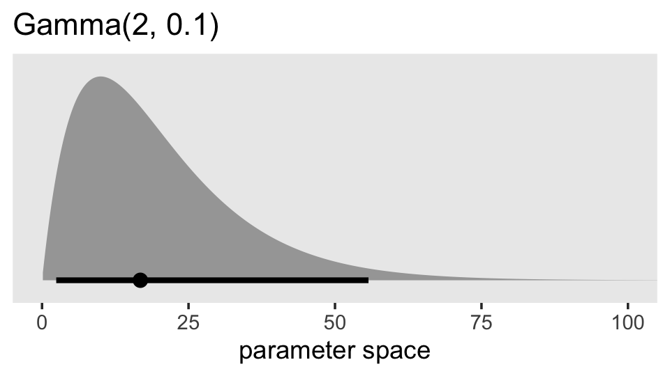
Given we’re working with data on the log scale, that’s a massively permissive prior. Let’s zoom in and see what it means for the parameter space of possible values for our data.
prior(gamma(2, 0.1)) %>%
parse_dist() %>%
ggplot(aes(xdist = .dist_obj, y = prior)) +
stat_halfeye(.width = .95, p_limits = c(.000001, .99)) +
scale_y_discrete(NULL, breaks = NULL, expand = expansion(add = 0.1)) +
labs(title = "Gamma(2, 0.1)",
x = "parameter space (zoomed in)") +
coord_cartesian(xlim = c(0, 2)) +
theme(panel.grid = element_blank())
Now keep that picture in mind as we read further along in the paper:
In addition, with \(\lambda \rightarrow 0\), the gamma density function has a positive constant derivative at zero, which allows the likelihood to dominate if it is strongly curved near zero. The positive constant derivative implies that the prior is linear at zero so that there is no dead zone near zero. The top-left panel of Figure 3 shows that the gamma(2,0.1) density increases linearly from zero with a gentle slope. The shape will be even flatter with a smaller rate parameter. (p. 691)
In case you’re not familiar with the gamma distribution, the rate parameter is what we’ve been calling \(\lambda\). Let’s test this baby out with our model. Here’s how to specify it in brms.
fit5.9 <-
brm(data = wages_small_pp,
family = gaussian,
lnw ~ 0 + Intercept + hgc_9 + exper + exper:black + (1 + exper | id),
prior = c(prior(normal(1.335, 1), class = b, coef = Intercept),
prior(normal(0, 0.5), class = b),
prior(student_t(3, 0, 1), class = sd),
prior(gamma(2, 0.1), class = sd, group = id, coef = exper),
prior(student_t(3, 0, 1), class = sigma),
prior(lkj(4), class = cor)),
iter = 2000, warmup = 1000, chains = 4, cores = 4,
seed = 5,
control = list(adapt_delta = .85),
file = "fits/fit05.09")Notice how we had to increase adapt_delta a bit. Here are the results.
print(fit5.9, digits = 3)## Family: gaussian
## Links: mu = identity; sigma = identity
## Formula: lnw ~ 0 + Intercept + hgc_9 + exper + exper:black + (1 + exper | id)
## Data: wages_small_pp (Number of observations: 257)
## Draws: 4 chains, each with iter = 2000; warmup = 1000; thin = 1;
## total post-warmup draws = 4000
##
## Group-Level Effects:
## ~id (Number of levels: 124)
## Estimate Est.Error l-95% CI u-95% CI Rhat Bulk_ESS Tail_ESS
## sd(Intercept) 0.282 0.053 0.175 0.386 1.004 953 1685
## sd(exper) 0.059 0.028 0.012 0.118 1.005 554 1239
## cor(Intercept,exper) -0.091 0.312 -0.642 0.541 1.001 2070 2666
##
## Population-Level Effects:
## Estimate Est.Error l-95% CI u-95% CI Rhat Bulk_ESS Tail_ESS
## Intercept 1.735 0.050 1.639 1.835 1.001 2811 3069
## hgc_9 0.048 0.025 -0.001 0.097 1.002 2871 2588
## exper 0.050 0.025 0.002 0.097 1.001 3205 3038
## exper:black -0.051 0.038 -0.125 0.022 1.000 2624 2718
##
## Family Specific Parameters:
## Estimate Est.Error l-95% CI u-95% CI Rhat Bulk_ESS Tail_ESS
## sigma 0.344 0.023 0.303 0.393 1.002 1171 2337
##
## Draws were sampled using sampling(NUTS). For each parameter, Bulk_ESS
## and Tail_ESS are effective sample size measures, and Rhat is the potential
## scale reduction factor on split chains (at convergence, Rhat = 1).Our sd(exper) is still quite close to zero. But notice how not the lower level of the 95% interval is higher than zero. Here’s what it looks like in both \(\sigma\) and \(\sigma^2\) metrics.
as_draws_df(fit5.9) %>%
transmute(sigma_1 = sd_id__exper) %>%
mutate(sigma_2_1 = sigma_1^2) %>%
set_names("sigma[1]", "sigma[1]^2") %>%
pivot_longer(everything()) %>%
ggplot(aes(x = value, y = name)) +
stat_halfeye(.width = .95, normalize = "xy") +
scale_y_discrete(NULL, labels = parse(text = c("sigma[1]", "sigma[1]^2"))) +
theme(axis.ticks.y = element_blank(),
panel.grid = element_blank())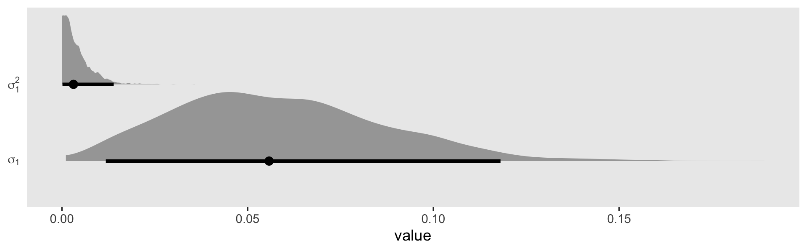
Let’s zoom in on the leftmost part of the plot.
as_draws_df(fit5.9) %>%
transmute(sigma_1 = sd_id__exper) %>%
mutate(sigma_2_1 = sigma_1^2) %>%
set_names("sigma[1]", "sigma[1]^2") %>%
pivot_longer(everything()) %>%
ggplot(aes(x = value, y = name)) +
geom_vline(xintercept = 0, color = "white") +
stat_halfeye(.width = .95, normalize = "xy") +
scale_y_discrete(NULL, labels = parse(text = c("sigma[1]", "sigma[1]^2"))) +
coord_cartesian(xlim = c(0, 0.01)) +
theme(panel.grid = element_blank())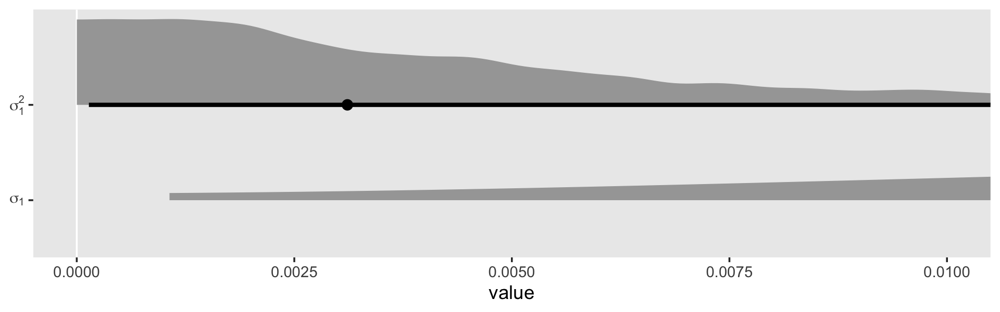
Although we are still brushing up on the boundary with \(\sigma_1^2\), the mode is no longer at zero. In the discussion, Chung and colleagues pointed out “sometimes weak prior information is available about a variance parameter. When \(\alpha = 2\), the gamma density has its mode at \(1 / \lambda\), and so one can use the \(\operatorname{gamma}(\alpha, \lambda)\) prior with \(1 / \lambda\) set to the prior estimate of \(\sigma_\theta\)” (p. 703). Let’s say we only had our wages_small_pp, but the results of something like the wages_pp data were published by some earlier group of researchers. In this case, we do have good prior data; we have the point estimate from the model of the wages_pp data! Here’s what that was in terms of the median.
as_draws_df(fit5.3) %>%
median_qi(sd_id__exper)## # A tibble: 1 × 6
## sd_id__exper .lower .upper .width .point .interval
## <dbl> <dbl> <dbl> <dbl> <chr> <chr>
## 1 0.0413 0.0366 0.0469 0.95 median qiAnd here’s what that value is when set as the divisor of 1.
1 / 0.04154273## [1] 24.0716What does that distribution look like?
prior(gamma(2, 24.0716)) %>%
parse_dist() %>%
ggplot(aes(xdist = .dist_obj, y = prior)) +
stat_halfeye(.width = .95, p_limits = c(.0001, .9999)) +
scale_y_discrete(NULL, breaks = NULL, expand = expansion(add = 0.1)) +
labs(title = "Gamma(2, 24.0716)",
x = "parameter space") +
coord_cartesian(xlim = c(0, 1)) +
theme(panel.grid = element_blank())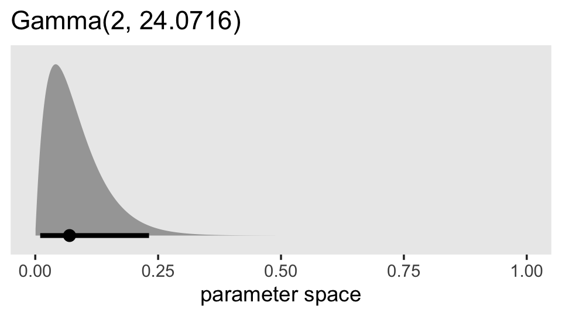
So this is much more informative than our gamma(2, 0.1) prior from before. But given the magnitude of the estimate from fit5.3, it’s still fairly liberal. Let’s practice using it.
fit5.10 <-
brm(data = wages_small_pp,
family = gaussian,
lnw ~ 0 + Intercept + hgc_9 + exper + exper:black + (1 + exper | id),
prior = c(prior(normal(1.335, 1), class = b, coef = Intercept),
prior(normal(0, 0.5), class = b),
prior(student_t(3, 0, 1), class = sd),
prior(gamma(2, 24.0716), class = sd, group = id, coef = exper),
prior(student_t(3, 0, 1), class = sigma),
prior(lkj(4), class = cor)),
iter = 2000, warmup = 1000, chains = 4, cores = 4,
seed = 5,
file = "fits/fit05.10")Check out the results.
print(fit5.10, digits = 3)## Family: gaussian
## Links: mu = identity; sigma = identity
## Formula: lnw ~ 0 + Intercept + hgc_9 + exper + exper:black + (1 + exper | id)
## Data: wages_small_pp (Number of observations: 257)
## Draws: 4 chains, each with iter = 2000; warmup = 1000; thin = 1;
## total post-warmup draws = 4000
##
## Group-Level Effects:
## ~id (Number of levels: 124)
## Estimate Est.Error l-95% CI u-95% CI Rhat Bulk_ESS Tail_ESS
## sd(Intercept) 0.286 0.047 0.191 0.376 1.002 985 1685
## sd(exper) 0.042 0.024 0.007 0.095 1.008 524 825
## cor(Intercept,exper) -0.039 0.309 -0.583 0.595 1.001 1684 2298
##
## Population-Level Effects:
## Estimate Est.Error l-95% CI u-95% CI Rhat Bulk_ESS Tail_ESS
## Intercept 1.735 0.048 1.638 1.825 1.000 1688 2461
## hgc_9 0.046 0.025 -0.004 0.096 1.005 1756 2425
## exper 0.051 0.023 0.005 0.095 1.001 1801 2211
## exper:black -0.054 0.037 -0.127 0.019 1.002 1810 2320
##
## Family Specific Parameters:
## Estimate Est.Error l-95% CI u-95% CI Rhat Bulk_ESS Tail_ESS
## sigma 0.344 0.022 0.303 0.392 1.001 1297 2428
##
## Draws were sampled using sampling(NUTS). For each parameter, Bulk_ESS
## and Tail_ESS are effective sample size measures, and Rhat is the potential
## scale reduction factor on split chains (at convergence, Rhat = 1).Here we compare the three ways to specify the \(\sigma_1\) prior with the posterior from the original model fit with the full data set. For simplicity, we’ll just look at the results in the brms-like \(\sigma\) metric. Hopefully by now you’ll know how to do the conversions to get the values into the \(\sigma^2\) metric.
tibble(`full data, student_t(3, 0, 1) prior` = VarCorr(fit5.3, summary = F)[[1]][[1]][1:4000, 2],
`small data, student_t(3, 0, 1) prior` = VarCorr(fit5.7, summary = F)[[1]][[1]][, 2],
`small data, gamma(2, 0.1) prior` = VarCorr(fit5.9, summary = F)[[1]][[1]][, 2],
`small data, gamma(2, 24.0716) prior` = VarCorr(fit5.10, summary = F)[[1]][[1]][, 2]) %>%
pivot_longer(everything()) %>%
mutate(name = factor(name,
levels = c("full data, student_t(3, 0, 1) prior",
"small data, student_t(3, 0, 1) prior",
"small data, gamma(2, 0.1) prior",
"small data, gamma(2, 24.0716) prior"))) %>%
ggplot(aes(x = value, y = 0, fill = name == "full data, student_t(3, 0, 1) prior")) +
geom_vline(xintercept = 0, color = "white") +
stat_halfeye(.width = .95, normalize = "panels") +
scale_y_continuous(NULL, breaks = NULL) +
scale_fill_manual(values = c("grey75", "darkgoldenrod2")) +
theme(legend.position = "none",
panel.grid = element_blank()) +
facet_wrap(~ name, ncol = 1)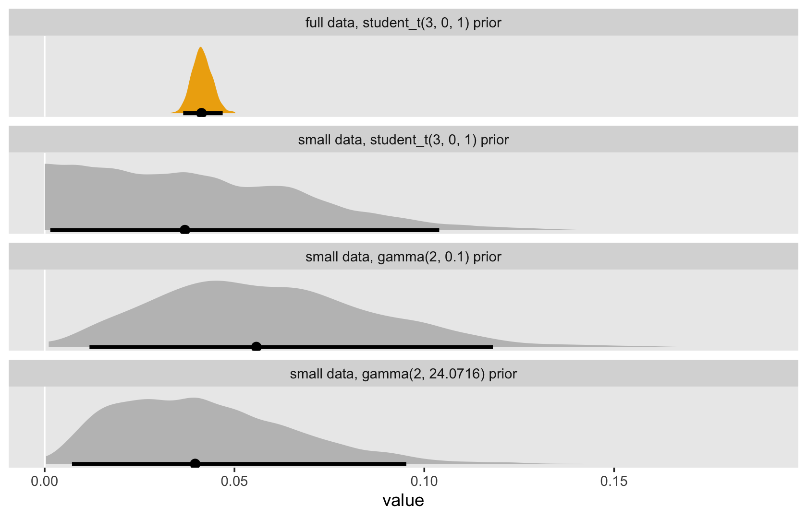
One thing to notice is that when you’re working with full Bayesian estimation with even a rather vague prior with a boundary on zero, the measure of central tendency in the posterior is away from zero. Things get more compact when you’re working in the \(\sigma^2\) metric. But remember that when we’re fitting our models with brms, we’re in the \(\sigma\) metric, anyway. And with either of these three options, you don’t have a compelling reason to set the \(\sigma_\theta\) parameter to zero the way you would with ML. Even a rather vague prior will add enough information to the model that we can feel confident about keeping our theoretically-derived \(\sigma_1\) parameter.
5.2.2.2 Nonconvergence [i.e., it’s time to talk chains and such].
As discussed in Section 4.3, all multilevel modeling programs implement iterative numeric algorithms for model fitting. (p. 155). This is also true for our Stan-propelled brms software. However, what’s going on under the hood, here, is not what’s happening with the frequentist packages discussed by Singer and Willett. We’re using Hamiltonian Monte Carlo (HMC) to draw from the posterior. To my eye, Bürkner gave in a (2020) preprint probably the clearest and most direct introduction to why we need fancy algorithms like HMC to fit Bayesian models. First, Bürkner warmed up by contrasting Bayes with conventional frequentist inference:
In frequentist statistics, parameter estimates are usually obtained by finding those parameter values that maximise the likelihood. In contrast, Bayesian statistics aims to estimate the full (joint) posterior distribution of the parameters. This is not only fully consistent with probability theory, but also much more informative than a single point estimate (and an approximate measure of uncertainty commonly known as ‘standard error’). (p. 9)
Those iterative algorithms Singer and Willett discussed in this section, that’s what they’re doing. They are maximizing the likelihood. But with Bayes, we have the more challenging goal of describing the entire posterior distribution, which is the product of the likelihood and the prior. As such,
Obtaining the posterior distribution analytically is only possible in certain cases of carefully chosen combinations of prior and likelihood, which may considerably limit modeling flexibilty but yield a computational advantage. However, with the increased power of today’s computers, Markov-Chain Monte-Carlo (MCMC) sampling methods constitute a powerful and feasible alternative to obtaining posterior distributions for complex models in which the majority of modeling decisions is made based on theoretical and not computational grounds. Despite all the computing power, these sampling algorithms are computationally very intensive and thus fitting models using full Bayesian inference is usually much slower than in point estimation techniques. However, advantages of Bayesian inference – such as greater modeling flexibility, prior distributions, and more informative results – are often worth the increased computational cost (Gelman, Carlin, Stern, and Rubin 2013). (pp. 9–10)
The gritty details are well beyond the scope of this project. If you’d like a more thorough walk-through on why it’s analytically and computationally challenging to get the posterior, I recommend working through the first several chapters in Kruschke’s (2015) Doing Bayesian data analysis: A tutorial with R, JAGS, and Stan.
But so anyways, our primary algorithm is HMC as implemented by Stan. You can find all kinds of technical details at https://mc-stan.org/users/documentation/. Because it’s rather difficult to describe our Bayesian multilevel models analytically, we use HMC to draw from the posterior instead. We then summarize the marginal and joint distributions of those parameters with things like measures of central tendency (i.e., means, medians, modes) and spread (i.e., standard deviations, percentile-based intervals). We make lots of plots.
And somewhat like with the frequentist iterative algorithms, we need to make sure our sweet Stan-based HMC is working well, too. One way is with trace plots.
5.2.2.2.1 Trace plots.
We can get the trace plots for a model by placing a brm() fit object into the plot() function. Here’s an example with the full model, fit5.4.
plot(fit5.4)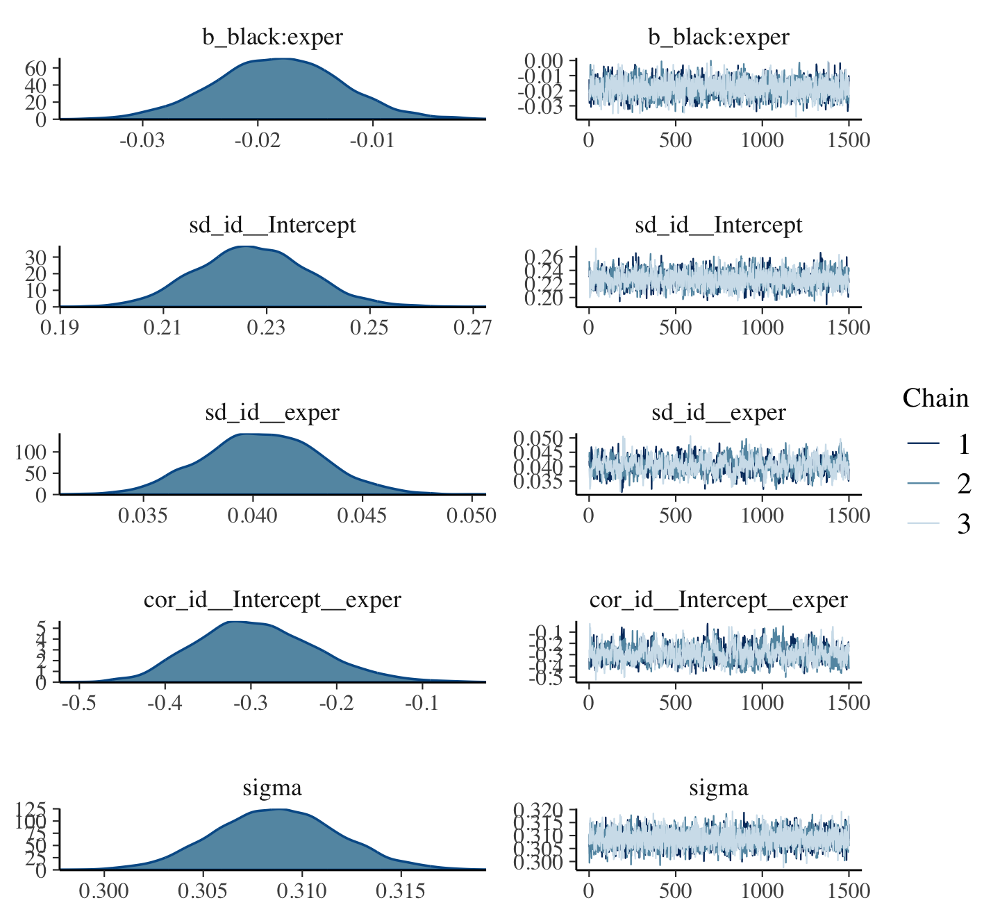
You’ll notice we get two plots for each of the major model parameters, the \(\gamma\)’s, the \(\sigma\)’s and the \(\rho\)’s. The plots on the left are the density plots for each parameter. On the right, we have the actual trace plots. On the \(x\)-axis, we have an ordering of the posterior draws; on the \(y\), we have the parameter space. Since we requested three HMC chains to draw from the posterior (chains = 3), those three chains are depicted by different colored lines. We generally like it when the lines for our chains all overlap with each other in a stable zig-zag sort of way. Trace plots are sometimes called caterpillar plots because, when things are going well, they often resemble nice multicolored fuzzy caterpillars.
If you’d like more control over your trace plot visuals, you might check out the bayesplot package (Gabry et al., 2019; Gabry & Mahr, 2022).
library(bayesplot)Our main function will be mcmc_trace(). Unlike with the brms::plot() method, bayesplog::mcmc_trace() takes the posterior draws themselves as input. So we’ll have to use as_draws_df() first.
draws <- as_draws_df(fit5.4)We can use the pars argument to focus on particular parameters.
mcmc_trace(draws, pars = "sigma")
If we use the pars = vars(...) format, we can use function helpers from dplyr to select subsets of parameters. For example, here’s how we might single out the \(\gamma\)’s.
mcmc_trace(draws,
pars = vars(starts_with("b_")),
facet_args = list(ncol = 2))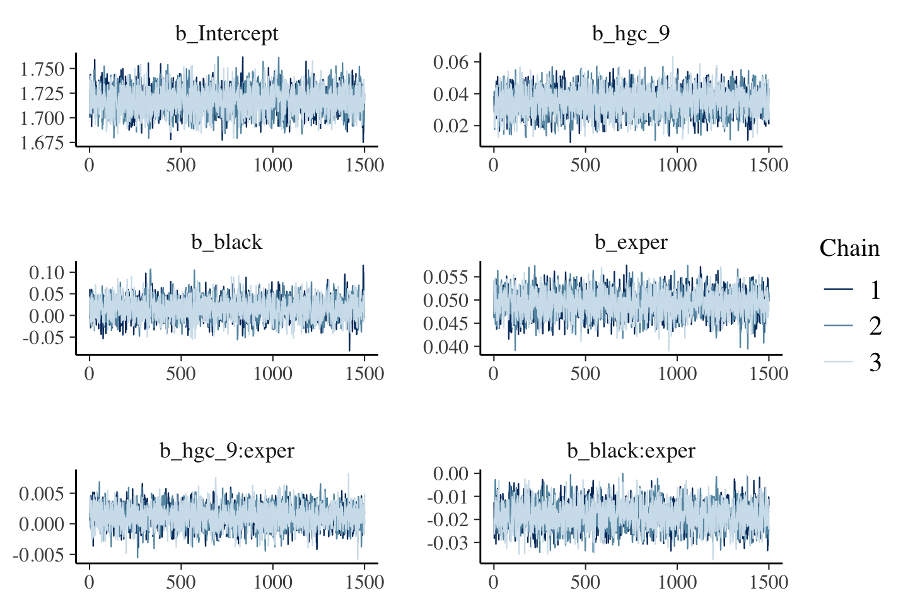
Notice how we used the facet_args argument to adjust the number of columns in the output. We can also use familiar ggplot2 functions to customize the plots further.
draws %>%
mutate(`sigma[0]` = sd_id__Intercept,
`sigma[1]` = sd_id__exper,
`sigma[epsilon]` = sigma) %>%
mcmc_trace(pars = vars(starts_with("sigma[")),
facet_args = list(labeller = label_parsed)) +
scale_color_viridis_d(option = "A") +
scale_x_continuous(NULL, breaks = NULL) +
ggtitle("I can't wait to show these traceplots to my mom.") +
theme_grey() +
theme(legend.position = "bottom",
panel.grid = element_blank(),
panel.grid.major.y = element_line(color = "white", size = 1/4),
strip.text = element_text(size = 12))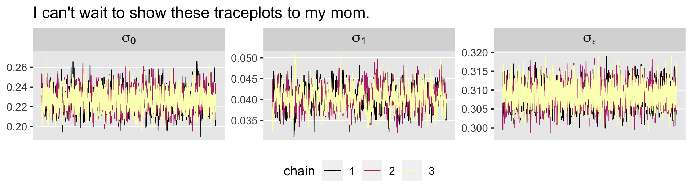
Trace plots are connected to other important concepts, like autocorrelation and effective sample size.
5.2.2.2.2 Autocorrelation.
When using Markov chain Monte Carlo methods, of which HMC is a special case, the notions of autocorrelation and effective sample size are closely connected. Both have to do with the question, How many post-warmup draws from the posterior do I need to take? If you take too few, you won’t have a good sense of the shape of the posterior. If you take more than necessary, you’re just wasting time and computer memory. Here’s how McElreath introduced the topic in his (2015) text:
So how many samples do we need for accurate inference about the posterior distribution? It depends. First, what really matters is the effective number of samples, not the raw number. The effective number of samples is an estimate of the number of independent samples from the posterior distribution. Markov chains are typically autocorrelated, so that sequential samples are not entirely independent. Stan chains tend to be less autocorrelated than those produced by other engines [e.g., the Gibbs sampler], but there is always some autocorrelation. (p. 255, emphasis in the original)
I’m not aware of a way to query the autocorrelations from a brm() fit using brms convenience functions. However, we can get those diagnostics from the bayesplot::mcmc_acf() function.
mcmc_acf(draws, pars = vars(starts_with("b_")), lags = 10) +
theme_grey() +
theme(panel.grid = element_blank())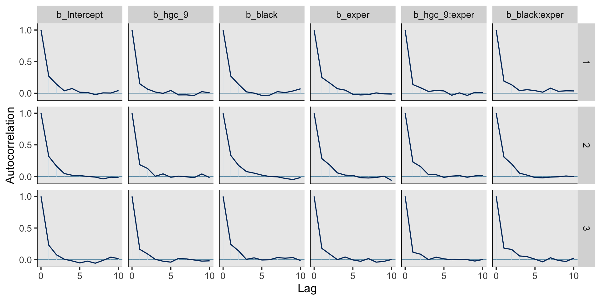
The mcmc_acf() function gives a wealth of granular output. The columns among the plots are the specified parameters. The rows are the chains, one for each. In this particular case, the autocorrelations were quite low for all our \(\gamma\) parameters by the second or third lag. That’s really quite good and not uncommon for HMC. Do note, however, that this won’t always be the case. For example, here are the plots for our variance parameters and \(\rho_{01}\).
mcmc_acf(draws, pars = vars(starts_with("sd_"), "sigma", starts_with("cor")), lags = 10) +
theme_grey() +
theme(panel.grid = element_blank(),
strip.text = element_text(size = 7))On the whole, all of them are pretty okay. But notice how the autocorrelations for \(\sigma_1\) and \(\rho_{01}\) remained relatively high up until the 10th lag.
The plots from mcmc_act() are quite handy for focused diagnostics. But if you want a more global perspective, they’re too tedious. Fortunately for us, we have other diagnostic tools.
5.2.2.2.3 Effective sample size.
Above we quoted McElreath as pointing out “what really matters is the effective number of samples, not the raw number.” With brms, you typically get the effective number of samples in the print() or summary() output. Here it is again for fit4.
summary(fit5.4)## Family: gaussian
## Links: mu = identity; sigma = identity
## Formula: lnw ~ 0 + Intercept + hgc_9 + black + exper + exper:hgc_9 + exper:black + (1 + exper | id)
## Data: wages_pp (Number of observations: 6402)
## Draws: 3 chains, each with iter = 2500; warmup = 1000; thin = 1;
## total post-warmup draws = 4500
##
## Group-Level Effects:
## ~id (Number of levels: 888)
## Estimate Est.Error l-95% CI u-95% CI Rhat Bulk_ESS Tail_ESS
## sd(Intercept) 0.23 0.01 0.21 0.25 1.00 1467 2232
## sd(exper) 0.04 0.00 0.04 0.05 1.01 501 1219
## cor(Intercept,exper) -0.29 0.07 -0.42 -0.14 1.01 566 1296
##
## Population-Level Effects:
## Estimate Est.Error l-95% CI u-95% CI Rhat Bulk_ESS Tail_ESS
## Intercept 1.72 0.01 1.69 1.74 1.00 2367 3009
## hgc_9 0.03 0.01 0.02 0.05 1.00 2907 3462
## black 0.02 0.02 -0.03 0.06 1.00 2135 2973
## exper 0.05 0.00 0.04 0.05 1.00 2349 3573
## hgc_9:exper 0.00 0.00 -0.00 0.00 1.00 2667 3164
## black:exper -0.02 0.01 -0.03 -0.01 1.00 2152 2714
##
## Family Specific Parameters:
## Estimate Est.Error l-95% CI u-95% CI Rhat Bulk_ESS Tail_ESS
## sigma 0.31 0.00 0.30 0.32 1.00 2849 3100
##
## Draws were sampled using sampling(NUTS). For each parameter, Bulk_ESS
## and Tail_ESS are effective sample size measures, and Rhat is the potential
## scale reduction factor on split chains (at convergence, Rhat = 1).See the last two columns on the right: Bulk_ESS and Tail_ESS? Following Vehtari et al. (2019), those describe our effective sample size in two ways. From the paper, we read:
If you plan to report quantile estimates or posterior intervals, we strongly suggest assessing the convergence of the chains for these quantiles. In Section 4.3 we show that convergence of Markov chains is not uniform across the parameter space and propose diagnostics and effective sample sizes specifically for extreme quantiles. This is different from the standard ESS estimate (which we refer to as the “bulk-ESS”), which mainly assesses how well the centre of the distribution is resolved. Instead, these “tail-ESS” measures allow the user to estimate the MCSE for interval estimates. (p. 5, emphasis in the original)
For more technical details, see the paper. In short, Bulk_ESS indexes the number of effective samples in ‘the center of the’ posterior distribution (i.e., the posterior mean or median). But since we also care about uncertainty in our parameters, we care about stability in the 95% intervals and such. The Tail_ESS column allows us to gauge the effective sample size for those intervals. Like with the autocorrelations, each parameter gets its own estimate for both ESS measures. You might compare the numbers to the number of post-warmup iterations, 4,500 in this case.
You may wonder, how many effective samples do I need? Back to McElreath:
If all you want are posterior means, it doesn’t take many samples at all to get very good estimates. Even a couple hundred samples will do. But if you care about the exact shape in the extreme tails of the posterior, the 99th percentile or so, then you’ll need many many more. So there is no universally useful number of samples to aim for. In most typical regression applications, you can get a very good estimate of the posterior mean with as few as 200 effective samples. And if the posterior is approximately Gaussian, then all you need in addition is a good estimate of the variance, which can be had with one order of magnitude more, in most cases. For highly skewed posteriors, you’ll have to think more about which region of the distribution interests you. (p. 255)
At the moment, brms does not offer a convenience function that allows users to collect the Bulk_ESS and Tail_ESS values in a data frame. However you can do so with help from the posterior package (Bürkner et al., 2022). For our purposes, the function of interest is summarise_draws(), which will take the output from as_draws_df() as input. We’ll save the results as draws_sum.
library(posterior)
draws_sum <-
as_draws_df(fit5.4) %>%
summarise_draws()
draws_sum %>%
head(n = 10)## # A tibble: 10 × 10
## variable mean median sd mad q5 q95 rhat ess_bulk ess_tail
## <chr> <num> <num> <num> <num> <num> <num> <num> <num> <num>
## 1 b_Intercept 1.72 1.72 0.0126 0.0126 1.70 1.74 1.00 2367. 3009.
## 2 b_hgc_9 0.0349 0.0349 0.00759 0.00765 0.0225 0.0474 1.00 2907. 3462.
## 3 b_black 0.0159 0.0157 0.0236 0.0237 -0.0220 0.0536 1.00 2135. 2973.
## 4 b_exper 0.0493 0.0493 0.00258 0.00258 0.0450 0.0534 1.00 2349. 3573.
## 5 b_hgc_9:exper 0.00126 0.00128 0.00171 0.00169 -0.00153 0.00405 1.00 2667. 3164.
## 6 b_black:exper -0.0183 -0.0182 0.00544 0.00539 -0.0273 -0.00939 1.00 2152. 2714.
## 7 sd_id__Intercept 0.227 0.227 0.0108 0.0107 0.210 0.245 1.00 1467. 2232.
## 8 sd_id__exper 0.0404 0.0404 0.00268 0.00268 0.0361 0.0449 1.01 501. 1219.
## 9 cor_id__Intercept__e… -0.293 -0.297 0.0706 0.0699 -0.401 -0.170 1.01 566. 1296.
## 10 sigma 0.309 0.309 0.00313 0.00313 0.304 0.314 1.00 2849. 3100.Note how the last two columns are the ess_bulk and the ess_tail. Here we summarize them with histograms.
draws_sum %>%
pivot_longer(starts_with("ess")) %>%
ggplot(aes(x = value)) +
geom_histogram(binwidth = 100) +
xlim(0, NA) +
theme(panel.grid = element_blank()) +
facet_wrap(~ name)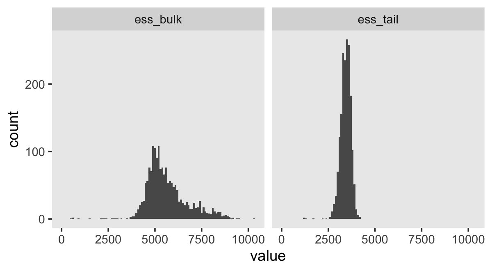
If you wanted a focused plot of the effective sample sizes for our primary summary parameters, you would just wrangle the output a little. Since it’s fun, we’ll switch to a lollipop plot.
draws_sum %>%
slice(1:10) %>%
pivot_longer(contains("ess")) %>%
mutate(ess = str_remove(name, "ess_")) %>%
ggplot(aes(y = reorder(variable, value))) +
geom_linerange(aes(xmin = 0, xmax = value)) +
geom_point(aes(x = value)) +
labs(x = "effective sample size",
y = NULL) +
xlim(0, 4000) +
theme(panel.grid = element_blank(),
axis.text.y = element_text(hjust = 0),
axis.ticks.y = element_blank()) +
facet_wrap(~ ess)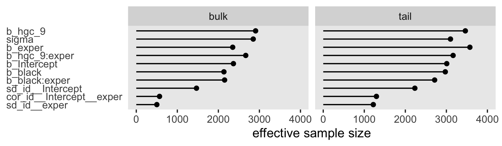
You may have noticed from the ESS histogram that many of the parameters seemed to have bulk ESS values well above the total number of posterior draws (4,500). What’s that about? As is turns out, the sampling in Stan is so good that sometimes the HMC chains for a parameter can be negatively autocorrelated. When this is the case, your effective sample size can be larger than your actual sample size. Madness, I know. This was the case for many of our random effects. Here’s a look at the parameters with ten largest values.
draws_sum %>%
arrange(desc(ess_bulk)) %>%
select(variable, ess_bulk) %>%
slice(1:10)## # A tibble: 10 × 2
## variable ess_bulk
## <chr> <num>
## 1 r_id[1282,Intercept] 10330.
## 2 r_id[9601,Intercept] 9550.
## 3 r_id[7311,Intercept] 9376.
## 4 r_id[9294,exper] 9231.
## 5 r_id[6507,Intercept] 9191.
## 6 r_id[7567,Intercept] 9109.
## 7 r_id[7110,exper] 8996.
## 8 r_id[6792,exper] 8983.
## 9 r_id[7027,exper] 8977.
## 10 r_id[7257,exper] 8944.Let’s take the first 4 and check their autocorrelation plots.
mcmc_acf(draws, pars = vars(`r_id[12335,exper]`, `r_id[5968,Intercept]`, `r_id[10476,Intercept]`, `r_id[7117,Intercept]`), lags = 5) +
theme_grey() +
theme(panel.grid = element_blank(),
strip.text = element_text(size = 10))See those dips below zero for the first lag in each? That’s what a negative autocorrelation looks like. Beautiful. For more on negative autocorrelations within chains and how it influences the number of effective samples, check out this thread on the Stan forums where many members of the Stan team chimed in.
5.2.2.2.4 \(\widehat R\).
Return again to the default print() output for a brms::brm() fit.
print(fit5.4)## Family: gaussian
## Links: mu = identity; sigma = identity
## Formula: lnw ~ 0 + Intercept + hgc_9 + black + exper + exper:hgc_9 + exper:black + (1 + exper | id)
## Data: wages_pp (Number of observations: 6402)
## Draws: 3 chains, each with iter = 2500; warmup = 1000; thin = 1;
## total post-warmup draws = 4500
##
## Group-Level Effects:
## ~id (Number of levels: 888)
## Estimate Est.Error l-95% CI u-95% CI Rhat Bulk_ESS Tail_ESS
## sd(Intercept) 0.23 0.01 0.21 0.25 1.00 1467 2232
## sd(exper) 0.04 0.00 0.04 0.05 1.01 501 1219
## cor(Intercept,exper) -0.29 0.07 -0.42 -0.14 1.01 566 1296
##
## Population-Level Effects:
## Estimate Est.Error l-95% CI u-95% CI Rhat Bulk_ESS Tail_ESS
## Intercept 1.72 0.01 1.69 1.74 1.00 2367 3009
## hgc_9 0.03 0.01 0.02 0.05 1.00 2907 3462
## black 0.02 0.02 -0.03 0.06 1.00 2135 2973
## exper 0.05 0.00 0.04 0.05 1.00 2349 3573
## hgc_9:exper 0.00 0.00 -0.00 0.00 1.00 2667 3164
## black:exper -0.02 0.01 -0.03 -0.01 1.00 2152 2714
##
## Family Specific Parameters:
## Estimate Est.Error l-95% CI u-95% CI Rhat Bulk_ESS Tail_ESS
## sigma 0.31 0.00 0.30 0.32 1.00 2849 3100
##
## Draws were sampled using sampling(NUTS). For each parameter, Bulk_ESS
## and Tail_ESS are effective sample size measures, and Rhat is the potential
## scale reduction factor on split chains (at convergence, Rhat = 1).The third last column for each parameter is Rhat. “Rhat is a complicated estimate of the convergence of the Markov chains to the target distribution. It should approach 1.00 from above, when all is well” (McElreath, 2015, p. 250). We can extract \(\widehat R\) directly with the brms::rhat() function.
brms::rhat(fit5.4) %>%
str()## Named num [1:1788] 1 1 1 1 1 ...
## - attr(*, "names")= chr [1:1788] "b_Intercept" "b_hgc_9" "b_black" "b_exper" ...For our fit5.4, the brms::rhat() function returned a named numeric vector, with one row for each of the 1787 parameters in the model. You can subset the rhat() output to focus on a few parameters.
brms::rhat(fit5.4)[1:10]## b_Intercept b_hgc_9 b_black b_exper
## 1.000080 1.001269 1.001654 1.000477
## b_hgc_9:exper b_black:exper sd_id__Intercept sd_id__exper
## 1.000478 1.000449 1.001643 1.005972
## cor_id__Intercept__exper sigma
## 1.006086 1.000958Note also that our draws_sum object from above has an rhat column, too.
draws_sum %>%
select(variable, rhat) %>%
slice(1:4)## # A tibble: 4 × 2
## variable rhat
## <chr> <num>
## 1 b_Intercept 1.00
## 2 b_hgc_9 1.00
## 3 b_black 1.00
## 4 b_exper 1.00For a more global perspective, just plot.
draws_sum %>%
ggplot(aes(x = rhat)) +
geom_vline(xintercept = 1, color = "white") +
geom_histogram(binwidth = .0001) +
theme(panel.grid = element_blank())
The bayesplot package offers a convenience function for plotting brms::rhat() output. Here we’ll focus on the first 20 parameters.
mcmc_rhat(brms::rhat(fit5.4)[1:20]) +
yaxis_text(hjust = 0)By default, mcmc_rhat() does not return text on the \(y\)-axis. But you can retrieve that text with the yaxis_text() function. For more on the \(\widehat R\), you might check out the Rhat: potential scale reduction statistic subsection of Gabry and Modrák’s (2020) vignette, Visual MCMC diagnostics using the bayesplot package.
We should also point out that the Stan team has found some deficiencies with the \(\widehat R\). They’ve made recommendations that will be implemented in the Stan ecosystem sometime soon. In the meantime, you can read all about it in their preprint (Vehtari et al., 2019) and in Dan Simpson’s blog post, Maybe it’s time to let the old ways die; or We broke R-hat so now we have to fix it.
5.2.3 Distinguishing among different types of missingness.
Missingness, in and of itself, is not necessarily problematic. It all depends upon what statisticians call the type of missingness. In seminal work on this topic, R. J. Little (1995), refining earlier work with Rubin (R. J. A. Little & Rubin, 1987), distinguished among three types of missingness: (1) missing completely at random (MCAR); (2) covariate-dependent dropout (CDD); and (3) missing at random (MAR) (see also Schafer, 1997).
When we say that data are MCAR, we argue that the observed values are a random sample of all the values that could have been observed (according ot plan), had there been no missing data.
…Covariate dependent dropout (CDD) is a less restrictive assumption that permits associations between the probability of missingness and observed predictor values (“covariates”). Data can be CDD even if the probability of missingness is systematically related to either TIME or observed substantive predictors.
…When data are MAR, the probability of missingness can depend upon any observed data, for either the predictors or any outcome values. It cannot, however, depend upon an unobserved value of either any predictor or the outcome. (pp. 157–158, emphasis in the original)
For some more current introductions to missing data methods, I recommend Enders’ (2010) Applied missing data analysis, for which you can find a free sample chapter here, and Little and Rubin’s (2019) Statistical analysis with missing data, 3rd Edition. You might also check out van Burren’s great (2018) online text Flexible imputation of missing data. Second edition. If you’re a fan of the podcast medium, you might listen to episode 16 from the first season of the Quantitude podcast, IF EPISODE=16 THEN EPISODE=-999;, in which Patrick Curran and Greg Hancock do a fine job introducing the basics of missing data. And very happily, brms has several ways to handle missing data, about which you can learn more from Bürkner’s (2021b) vignette, Handle missing values with brms.
5.3 Time-varying predictors
A time-varying predictor is a variable whose values may differ over time. Unlike their time-invariant cousins, which record an individual’s static status, time-varying predictors record an individual’s potentially differing status on each associated measurement occasion. Some time-varying predictors have values that change naturally; others have values that change by design. (pp. 159–160, emphasis in the original)
5.3.1 Including the main effect of a time-varying predictor.
You can find Ginexi and colleagues’ (2000) unemployment study data in the reading_pp.csv file.
unemployment_pp <- read_csv("data/unemployment_pp.csv")
head(unemployment_pp)## # A tibble: 6 × 4
## id months cesd unemp
## <dbl> <dbl> <dbl> <dbl>
## 1 103 1.15 25 1
## 2 103 5.95 16 1
## 3 103 12.9 33 1
## 4 641 0.789 27 1
## 5 641 4.86 7 0
## 6 641 11.8 25 0We have 254 unique participants.
unemployment_pp %>%
distinct(id) %>%
count()## # A tibble: 1 × 1
## n
## <int>
## 1 254Here’s one way to compute the number of participants who were never employed during the study.
unemployment_pp %>%
filter(unemp == 0) %>%
distinct(id) %>%
count() %>%
summarise(never_employed = 254 - n)## # A tibble: 1 × 1
## never_employed
## <dbl>
## 1 132In case it wasn’t clear, participants had up to 3 interviews.
By recruiting 254 participants from local unemployment offices, the researchers were able to interview individuals soon after job loss (within the first 2 months). Follow-up interviews were conducted between 3 and 8 months and 10 and 16 months after job loss. (p. 161)
Those times were encoded in the months variable. Here’s what that looks like.
unemployment_pp %>%
ggplot(aes(x = months)) +
geom_vline(xintercept = c(3, 8), color = "white") +
geom_histogram(binwidth = .5) +
theme(panel.grid = element_blank())To make some of our data questions easier, we can use those 3- and 8-month thresholds to make an interview variable to indicate the periods during which the interviews were conducted.
unemployment_pp <-
unemployment_pp %>%
mutate(interview = ifelse(months < 3, 1,
ifelse(months > 8, 3, 2)))
unemployment_pp %>%
ggplot(aes(x = interview)) +
geom_bar() +
theme(panel.grid = element_blank())
With a little wrangling, we can display all possible employment patterns along with counts on how many followed them.
unemployment_pp %>%
select(-months, -cesd) %>%
mutate(interview = str_c("int_", interview)) %>%
spread(key = interview, value = unemp) %>%
group_by(int_1, int_2, int_3) %>%
count() %>%
arrange(desc(n)) %>%
flextable::flextable()int_1 | int_2 | int_3 | n |
|---|---|---|---|
1 | 1 | 1 | 78 |
1 | 0 | 0 | 55 |
1 | 1 | 0 | 41 |
1 | 27 | ||
1 | 1 | 22 | |
1 | 0 | 1 | 19 |
1 | 0 | 4 | |
1 | 1 | 4 | |
1 | 0 | 2 | |
1 | 0 | 1 | |
1 | 1 | 1 |
It takes a little work to see how Singer and Willett came to the conclusion “62 were always working after the first interview” (p. 161). Based on an analysis of those who had complete data, that corresponds to the pattern in the top row, [1, 0, 0], which we have counted as 55 (i.e., row 2). If you add to that the two rows with missingness on one of the critical values (i.e., [1, 0, NA], [1, NA, 0], and [NA, 1, 1]), that gets you \(55 + 4 + 2 + 1 = 62\).
We can confirm that “41 were still unemployed at the second interview but working by the third” (p. 161). That’s our pattern [1, 1, 0], shown in row 3. We can also confirm “19 were working by the second interview but unemployed at the third” (p. 161). That’s shown in our pattern [1, 0, 1], shown in row 6.
Before we configure our unconditional growth model, we might familiarize ourselves with our criterion variable, cesd. Singer and Willett informed us:
Each time participants completed the Center for Epidemiologic Studies’ Depression (CES-D) scale (Radloff, 1977), which asks them to rate, on a four-point scale, the frequency with which they experience each of the 20 depressive symptoms. The CES-D scores can vary from a low or 0 for someone with no symptoms to a high of 80 for someone in serious distress. (p. 161)
In addition to Radloff’s original article, you can get a copy of the CES-D here.
To help us pick our priors, [Brown and Gary (1985) listed the means and standard deviations of the CES-D scores for unemployed African-American adults. They gave the summary statistics broken down by sex:
- Males: 14.05 (8.86), \(n = 37\)
- Females: 15.35 (9.39), \(n = 72\)
Based the variables in the data set and the descriptions of it in the text, we don’t have a good sense of the demographic backgrounds of the participants. But with the information we have in hand, a reasonable empirically-based but nonetheless noncommittal prior for baseline CES-D might be something like normal(14.5, 20). A weakly-regularizing prior on change over 1 month might be normal(0, 10). It’d be fair if you wanted to argue about these priors. Try your own! But if you are willing to go along with me, we might write the statistical formula for the unconditional growth model as
$$ \[\begin{align*} \text{cesd}_{ij} & = \gamma_{00} + \gamma_{10} \text{months}_{ij} + \zeta_{0i} + \zeta_{1i} \text{months}_{ij} + \epsilon_{ij} \\ \epsilon_{ij} & \sim \operatorname{Normal} (0, \sigma_\epsilon) \\ \begin{bmatrix} \zeta_{0i} \\ \zeta_{1i} \end{bmatrix} & \sim \operatorname{Normal} \begin{pmatrix} \begin{bmatrix} 0 \\ 0 \end{bmatrix}, \mathbf D \mathbf\Omega \mathbf D' \end{pmatrix} \\ \mathbf D & = \begin{bmatrix} \sigma_0 & 0 \\ 0 & \sigma_1 \end{bmatrix} \\ \mathbf \Omega & = \begin{bmatrix} 1 & \rho_{01} \\ \rho_{01} & 1 \end{bmatrix} \\ \gamma_{00} & \sim \operatorname{Normal}(14.5, 20) \\ \gamma_{10} & \sim \operatorname{Normal}(0, 10) \\ \sigma_\epsilon, \sigma_0, \text{ and } \sigma_1 & \sim \operatorname{Student-t}(3, 0, 11.9) \\ \rho_{01} & \sim \operatorname{LKJ} (4). \end{align*}\] $$
Those \(\operatorname{Student-t}(3, 0, 11.9)\) priors for the \(\sigma\)’s are the defaults, which you can confirm with get_prior(). The \(\operatorname{LKJ} (4)\) for \(\rho_{01}\) will weakly regularize the correlation towards zero.
Here’s how we might fit that model.
fit5.11 <-
brm(data = unemployment_pp,
family = gaussian,
cesd ~ 0 + Intercept + months + (1 + months | id),
prior = c(prior(normal(14.5, 20), class = b, coef = Intercept),
prior(normal(0, 10), class = b),
prior(student_t(3, 0, 11.9), class = sd),
prior(student_t(3, 0, 11.9), class = sigma),
prior(lkj(4), class = cor)),
iter = 2000, warmup = 1000, chains = 4, cores = 4,
seed = 5,
control = list(adapt_delta = .99),
file = "fits/fit05.11")Here are the results.
print(fit5.11, digits = 3)## Family: gaussian
## Links: mu = identity; sigma = identity
## Formula: cesd ~ 0 + Intercept + months + (1 + months | id)
## Data: unemployment_pp (Number of observations: 674)
## Draws: 4 chains, each with iter = 2000; warmup = 1000; thin = 1;
## total post-warmup draws = 4000
##
## Group-Level Effects:
## ~id (Number of levels: 254)
## Estimate Est.Error l-95% CI u-95% CI Rhat Bulk_ESS Tail_ESS
## sd(Intercept) 8.679 0.832 7.078 10.306 1.007 410 1824
## sd(months) 0.417 0.198 0.035 0.763 1.013 203 540
## cor(Intercept,months) -0.368 0.238 -0.692 0.284 1.004 1139 927
##
## Population-Level Effects:
## Estimate Est.Error l-95% CI u-95% CI Rhat Bulk_ESS Tail_ESS
## Intercept 17.657 0.763 16.205 19.170 1.002 1967 2849
## months -0.420 0.082 -0.580 -0.262 1.001 4467 3467
##
## Family Specific Parameters:
## Estimate Est.Error l-95% CI u-95% CI Rhat Bulk_ESS Tail_ESS
## sigma 8.577 0.407 7.794 9.354 1.005 361 1346
##
## Draws were sampled using sampling(NUTS). For each parameter, Bulk_ESS
## and Tail_ESS are effective sample size measures, and Rhat is the potential
## scale reduction factor on split chains (at convergence, Rhat = 1).Here are the posteriors for the CES-D at the first day of job loss (i.e., \(\gamma_{00}\)) and the expected rate of change over one month (i.e., \(\gamma_{10}\)).
as_draws_df(fit5.11) %>%
transmute(`first day of job loss` = b_Intercept,
`linear decline by month` = b_months) %>%
pivot_longer(everything()) %>%
ggplot(aes(x = value, y = 0)) +
stat_halfeye(.width = .95, normalize = "panels") +
scale_y_continuous(NULL, breaks = NULL) +
xlab("CES-D composite score") +
theme(panel.grid = element_blank()) +
facet_wrap(~ name, scales = "free")
We might use conditional_effects() to get a quick view on what that might looks like.
plot(conditional_effects(fit5.11),
plot = FALSE)[[1]] +
geom_hline(yintercept = 14.5, color = "grey50", linetype = 2) +
coord_cartesian(ylim = c(0, 20)) +
theme(panel.grid = element_blank())
For reference, the dashed gray line is the value we centered our prior for initial status on.
5.3.1.1 Using a composite specification.
We might specify Model B, our first model with a time-varying covariate, like this:
$$ \[\begin{align*} \text{cesd}_{ij} & = \big [ \gamma_{00} + \gamma_{10} \text{months}_{ij} + \gamma_{20} \text{unemp}_{ij} \big ] + \big [ \zeta_{0i} + \zeta_{1i} \text{months}_{ij} + \epsilon_{ij} \big ]\\ \epsilon_{ij} & \sim \operatorname{Normal}(0, \sigma_\epsilon) \\ \begin{bmatrix} \zeta_{0i} \\ \zeta_{1i} \end{bmatrix} & \sim \operatorname{Normal} \begin{pmatrix} \begin{bmatrix} 0 \\ 0 \end{bmatrix}, \mathbf D \mathbf\Omega \mathbf D' \end{pmatrix} \\ \mathbf D & = \begin{bmatrix} \sigma_0 & 0 \\ 0 & \sigma_1 \end{bmatrix} \\ \mathbf \Omega & = \begin{bmatrix} 1 & \rho_{01} \\ \rho_{01} & 1 \end{bmatrix} \\ \gamma_{00} & \sim \operatorname{Normal}(14.5, 20) \\ \gamma_{10} \text{ and } \gamma_{20} & \sim \operatorname{Normal}(0, 10) \\ \sigma_\epsilon, \sigma_0, \text{ and } \sigma_1 & \sim \operatorname{Student-t}(3, 0, 11.9) \\ \rho_{01} & \sim \operatorname{LKJ}(4). \end{align*}\] $$
Note a few things about the priors. First, we haven’t changed any of the priors from the previous model. All we did was add \(\gamma_{20} \sim \text{Normal}(0, 10)\) for our new parameter. Given how weakly-informative our other priors have been for these data, this isn’t an unreasonable approach. However, the meaning for our intercept, \(\gamma_{01}\), has changed. Now it’s the initial status for someone who is employed at baseline. But remember that for Model A, we set that prior with unemployed people in mind. A careful researcher might want to dive back into the literature to see if some lower value than 14.5 would be more reasonable to set for the mean of that prior. However, since the standard deviations for our intercepts priors and the covariate priors are all rather wide and permissive, this just won’t be much of a problem, for us. Buy anyway, second, note that we’ve centered our prior for \(\gamma_{20}\) on zero. This is a weakly-regularizing prior, slightly favoring smaller effects over larger ones. And like before, one could easily argue for different priors.
Here’s how to fit the model in brms.
fit5.12 <-
brm(data = unemployment_pp,
family = gaussian,
cesd ~ 0 + Intercept + months + unemp + (1 + months | id),
prior = c(prior(normal(14.5, 20), class = b, coef = Intercept),
prior(normal(0, 10), class = b),
prior(student_t(3, 0, 11.9), class = sd),
prior(student_t(3, 0, 11.9), class = sigma),
prior(lkj(4), class = cor)),
iter = 2000, warmup = 1000, chains = 4, cores = 4,
seed = 5,
control = list(adapt_delta = .9),
file = "fits/fit05.12")If you compare our results to those in Table 5.7, you’ll see they’re quite similar.
print(fit5.12)## Family: gaussian
## Links: mu = identity; sigma = identity
## Formula: cesd ~ 0 + Intercept + months + unemp + (1 + months | id)
## Data: unemployment_pp (Number of observations: 674)
## Draws: 4 chains, each with iter = 2000; warmup = 1000; thin = 1;
## total post-warmup draws = 4000
##
## Group-Level Effects:
## ~id (Number of levels: 254)
## Estimate Est.Error l-95% CI u-95% CI Rhat Bulk_ESS Tail_ESS
## sd(Intercept) 9.11 0.84 7.42 10.74 1.01 423 923
## sd(months) 0.55 0.18 0.11 0.85 1.02 216 274
## cor(Intercept,months) -0.47 0.17 -0.70 -0.01 1.00 1053 718
##
## Population-Level Effects:
## Estimate Est.Error l-95% CI u-95% CI Rhat Bulk_ESS Tail_ESS
## Intercept 12.79 1.22 10.49 15.16 1.00 1890 2343
## months -0.21 0.09 -0.38 -0.03 1.00 2787 3331
## unemp 4.98 1.00 2.98 6.87 1.00 2496 3096
##
## Family Specific Parameters:
## Estimate Est.Error l-95% CI u-95% CI Rhat Bulk_ESS Tail_ESS
## sigma 8.15 0.42 7.37 8.98 1.01 355 796
##
## Draws were sampled using sampling(NUTS). For each parameter, Bulk_ESS
## and Tail_ESS are effective sample size measures, and Rhat is the potential
## scale reduction factor on split chains (at convergence, Rhat = 1).Before we make our versions of Figure 5.3, let’s first compare \(\gamma_{01}\) posteriors by model. On page 166 of the text, Singer and Willett reported the monthly rate of decline “had been cut in half (to 0.20 from 0.42 in Model A)”.
fixef(fit5.11)["months", ]## Estimate Est.Error Q2.5 Q97.5
## -0.4200590 0.0822367 -0.5800403 -0.2617752fixef(fit5.12)["months", ]## Estimate Est.Error Q2.5 Q97.5
## -0.20583470 0.08974567 -0.37996955 -0.03253020You might be wondering why the quote from Singer and Willett used positive numbers while our parameter estimates have negative ones. No, there’s no mistake, there. Negative parameter estimates for monthly trajectories are then same thing as expressing a rate of decline with a positive number. But anyways, you see our estimates are on par with theirs. With our Bayesian paradigm, it’s also easy to get a formal difference distribution.
tibble(fit5.11 = as_draws_df(fit5.11) %>% pull("b_months"),
fit5.12 = as_draws_df(fit5.12) %>% pull("b_months"))## # A tibble: 4,000 × 2
## fit5.11 fit5.12
## <dbl> <dbl>
## 1 -0.394 -0.324
## 2 -0.490 -0.179
## 3 -0.368 -0.206
## 4 -0.525 -0.287
## 5 -0.264 -0.273
## 6 -0.603 -0.237
## 7 -0.380 -0.365
## 8 -0.531 -0.180
## 9 -0.460 -0.317
## 10 -0.380 -0.161
## # ℹ 3,990 more rowstibble(fit5.11 = as_draws_df(fit5.11) %>% pull("b_months"),
fit5.12 = as_draws_df(fit5.12) %>% pull("b_months")) %>%
mutate(dif = fit5.12 - fit5.11) %>%
ggplot(aes(x = dif, y = 0)) +
stat_halfeye(.width = .95) +
scale_y_continuous(NULL, breaks = NULL) +
xlab(expression(paste("Difference in ", gamma[1][0]))) +
theme(panel.grid = element_blank())
Here’s our posterior for \(\gamma_{20}\), b_unemp.
as_draws_df(fit5.12) %>%
ggplot(aes(x = b_unemp, y = 0)) +
stat_halfeye(.width = .95) +
scale_y_continuous(NULL, breaks = NULL) +
theme(panel.grid = element_blank())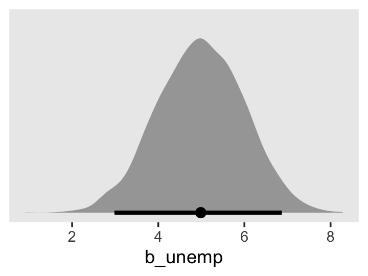
Let’s compute our WAIC estimates for fit5.11 and fit5.12.
fit5.11 <- add_criterion(fit5.11, criterion = "waic")
fit5.12 <- add_criterion(fit5.12, criterion = "waic")Now we’ll compare the models by both their WAIC differences and their WAIC weights.
loo_compare(fit5.11, fit5.12, criterion = "waic") %>%
print(simplify = F)## elpd_diff se_diff elpd_waic se_elpd_waic p_waic se_p_waic waic se_waic
## fit5.12 0.0 0.0 -2491.5 21.4 196.7 10.7 4983.0 42.9
## fit5.11 -22.3 4.7 -2513.8 21.6 179.9 10.1 5027.5 43.2model_weights(fit5.11, fit5.12, weights = "waic") %>%
round(digits = 3)## fit5.11 fit5.12
## 0 1By both metrics, fit5.12 came out as the clear favorite.
It’s finally time to make our version of the upper left panel of Figure 5.3. We’ll do so using fitted().
nd <-
tibble(unemp = 1,
months = seq(from = 0, to = 14, by = .5))
f <-
fitted(fit5.12,
newdata = nd,
re_formula = NA) %>%
data.frame() %>%
bind_cols(nd)
f %>%
ggplot(aes(x = months)) +
geom_ribbon(aes(ymin = Q2.5, ymax = Q97.5),
fill = "grey67", alpha = 1/2) +
geom_line(aes(y = Estimate)) +
scale_x_continuous("Months since job loss", breaks = seq(from = 0, to = 14, by = 2)) +
scale_y_continuous("CES-D", limits = c(5, 20)) +
labs(subtitle = "Remain unemployed") +
theme(panel.grid = element_blank())The upper right panel will take more care. We’ll still use fitted(), but we’ll have to be tricky with how we define the two segments. When we defined the sequence of months values over which we wanted to plot the model trajectory, we just casually set length.out = 30 within the seq() function. But now we need to make sure two of those sequential points are at 5. One way to do so is to use the by = .5 argument within seq(), instead. Since we’ll be defining the end points in our range with integer values, dividing up the sequence by every .5th value will ensure we’ll both be able to stop at 5 and that we’ll have a reasonable amount of values in the sequence to ensure the bowtie-shaped 95% intervals don’t look chunky.
But anyway, that also means we’ll need to do a good job determining how many values we’ll need to repeat our desired unemp values over. So here’s a quick way to do the math. Since we’re using every .5 in the sequence, you just subtract the integer at the beginning of the sequence from the integer at the end of the sequence, multiply that value by 2, and then add 1 to the product. Like this:
2 * (5 - 0) + 1## [1] 112 * (14 - 5) + 1## [1] 19Those are the number of times we need to repeat unemp == 1 and unemp == 0, respectively. You’ll see. Now wrangle and plot.
nd <-
tibble(unemp = rep(1:0, times = c(11, 19)),
months = c(seq(from = 0, to = 5, by = .5),
seq(from = 5, to = 14, by = .5)))
f <-
fitted(fit5.12,
newdata = nd,
re_formula = NA) %>%
data.frame() %>%
bind_cols(nd)
f %>%
ggplot(aes(x = months, group = unemp)) +
geom_ribbon(aes(ymin = Q2.5, ymax = Q97.5),
fill = "grey67", alpha = 1/2) +
geom_line(aes(y = Estimate)) +
geom_segment(x = 5, xend = 5,
y = fixef(fit5.12)[1, 1] + fixef(fit5.12)[2, 1] * 5,
yend = fixef(fit5.12)[1, 1] + fixef(fit5.12)[2, 1] * 5 + fixef(fit5.12)[3, 1],
size = 1/3, linetype = 2) +
annotate(geom = "text",
x = 8, y = 14.5, label = "gamma[2][0]",
parse = T) +
geom_segment(x = 7, xend = 5.5,
y = 14.5, yend = 14.5,
arrow = arrow(length = unit(0.05, "inches"))) +
scale_x_continuous("Months since job loss", breaks = seq(from = 0, to = 14, by = 2)) +
scale_y_continuous("CES-D", limits = c(5, 20)) +
labs(subtitle = "Reemployed at 5 months") +
theme(panel.grid = element_blank())Same deal for the lower left panel of Figure 5.3.
2 * (10 - 0) + 1## [1] 212 * (14 - 10) + 1## [1] 9Now wrangle and plot.
nd <-
tibble(unemp = rep(1:0, times = c(21, 9)),
months = c(seq(from = 0, to = 10, by = .5),
seq(from = 10, to = 14, by = .5)))
f <-
fitted(fit5.12,
newdata = nd,
re_formula = NA) %>%
data.frame() %>%
bind_cols(nd)
f %>%
ggplot(aes(x = months, group = unemp)) +
geom_ribbon(aes(ymin = Q2.5, ymax = Q97.5),
fill = "grey67", alpha = 1/2) +
geom_line(aes(y = Estimate)) +
geom_segment(x = 10, xend = 10,
y = fixef(fit5.12)[1, 1] + fixef(fit5.12)[2, 1] * 10,
yend = fixef(fit5.12)[1, 1] + fixef(fit5.12)[2, 1] * 10 + fixef(fit5.12)[3, 1],
size = 1/3, linetype = 2) +
annotate(geom = "text",
x = 7, y = 13.5, label = "gamma[2][0]",
parse = T) +
geom_segment(x = 8, xend = 9.5,
y = 13.5, yend = 13.5,
arrow = arrow(length = unit(0.05, "inches"))) +
scale_x_continuous("Months since job loss", breaks = seq(from = 0, to = 14, by = 2)) +
scale_y_continuous("CES-D", limits = c(5, 20)) +
labs(subtitle = "Reemployed at 10 months") +
theme(panel.grid = element_blank())It’s just a little bit trickier to get that lower right panel. Now we need to calculate three values.
2 * (5 - 0) + 1## [1] 112 * (10 - 5) + 1## [1] 112 * (14 - 10) + 1## [1] 9Get that plot.
nd <-
tibble(unemp = rep(c(1, 0, 1), times = c(11, 11, 9)),
months = c(seq(from = 0, to = 5, by = .5),
seq(from = 5, to = 10, by = .5),
seq(from = 10, to = 14, by = .5)),
group = rep(letters[1:3], times = c(11, 11, 9)))
f <-
fitted(fit5.12,
newdata = nd,
re_formula = NA) %>%
data.frame() %>%
bind_cols(nd)
lines <-
tibble(group = letters[1:2],
x = c(5, 10)) %>%
mutate(xend = x,
y = fixef(fit5.12)[1, 1] + fixef(fit5.12)[2, 1] * x,
yend = fixef(fit5.12)[1, 1] + fixef(fit5.12)[2, 1] * x + fixef(fit5.12)[3, 1])
arrow <-
tibble(x = c(6.75, 8.25),
y = 14,
xend = c(5.5, 9.5),
yend = c(14.5, 13.5))
f %>%
ggplot(aes(x = months)) +
geom_ribbon(aes(ymin = Q2.5, ymax = Q97.5, group = group),
fill = "grey67", alpha = 1/2) +
geom_line(aes(y = Estimate, group = group)) +
geom_segment(data = lines,
aes(x = x, xend = xend,
y = y, yend = yend,
group = group),
size = 1/3, linetype = 2) +
annotate(geom = "text",
x = 7.5, y = 14, label = "gamma[2][0]",
parse = T) +
geom_segment(data = arrow,
aes(x = x, xend = xend,
y = y, yend = yend),
arrow = arrow(length = unit(0.05, "inches"))) +
scale_x_continuous("Months since job loss", breaks = seq(from = 0, to = 14, by = 2)) +
scale_y_continuous("CES-D", limits = c(5, 20)) +
labs(subtitle = "Reemployed at 5 months\nunemployed again at 10") +
theme(panel.grid = element_blank())Now we’ve been on a plotting roll, let’s knock out the leftmost panel of Figure 5.4. It’s just a small extension of what we’ve been doing.
2 * (14 - 0) + 1## [1] 292 * (3.5 - 0) + 1## [1] 82 * (14 - 3.5) + 1## [1] 22nd <-
tibble(unemp = rep(1:0, times = c(29, 22)),
months = c(seq(from = 0, to = 14, by = .5),
seq(from = 3.5, to = 14, by = .5)))
f <-
fitted(fit5.12,
newdata = nd,
re_formula = NA) %>%
data.frame() %>%
bind_cols(nd) %>%
mutate(label = str_c("unemp = ", unemp))
f %>%
ggplot(aes(x = months, group = unemp)) +
# new trick
geom_abline(intercept = fixef(fit5.12)[1, 1],
slope = fixef(fit5.12)[2, 1],
color = "grey80", linetype = 2) +
geom_ribbon(aes(ymin = Q2.5, ymax = Q97.5),
fill = "grey67", alpha = 1/2) +
geom_line(aes(y = Estimate)) +
# another new trick
geom_text(data = f %>% filter(months == 14),
aes(label = label, y = Estimate), hjust = -.05) +
scale_x_continuous("Months since job loss", breaks = seq(from = 0, to = 14, by = 2)) +
scale_y_continuous("CES-D", limits = c(5, 20)) +
labs(subtitle = "Main effects of unemp and time") +
# don't forget this part
coord_cartesian(clip = "off") +
theme(panel.grid = element_blank(),
plot.margin = margin(6, 55, 6, 6))5.3.1.2 Using a level-1/level-2 specification.
If we wanted to reexpress our composite equation for fit5.12 using the level-1/level-2 form, the level-1 model would be
\[ \text{cesd}_{ij} = \pi_{0i} + \pi_{1i} \text{months}_{ij} + \pi_{2i} \text{unemp}_{ij} + \epsilon_{ij}. \]
Here’s the corresponding level-2 model:
\[ \begin{align*} \pi_{0i} & = \gamma_{00} + \zeta_{0i} \\ \pi_{1i} & = \gamma_{10} + \zeta_{1i} \\ \pi_{2i} & = \gamma_{20}. \end{align*} \]
If we wanted the effects of the time-varying covariate unemp to vary across individuals, then we’d expand the definition of \(\pi_{2i}\) to be
\[ \pi_{2i} = \gamma_{20} + \zeta_{2i}. \]
Although this doesn’t change the way we model \(\epsilon_{ij}\), which remains
\[ \epsilon_{ij} \sim \text{Normal} (0, \sigma_\epsilon), \]
it does change the model for the \(\zeta\)s. Within our Stan/brms paradigm, that would now be
$$ \[\begin{align*} \begin{bmatrix} \zeta_{0i} \\ \zeta_{1i} \\ \zeta_{2i} \end{bmatrix} & \sim \text{Normal} \begin{pmatrix} \begin{bmatrix} 0 \\ 0 \\ 0 \end{bmatrix}, \mathbf D \mathbf\Omega \mathbf D' \end{pmatrix}, \text{where} \\ \mathbf D & = \begin{bmatrix} \sigma_0 & 0 & 0 \\ 0 & \sigma_1 & 0 \\ 0 & 0 & \sigma_2 \end{bmatrix} \text{and} \\ \mathbf \Omega & = \begin{bmatrix} 1 & \rho_{01} & \rho_{02} \\ \rho_{01} & 1 & \rho_{12} \\ \rho_{02} & \rho_{12} & 1 \end{bmatrix}. \end{align*}\] $$
Reworded slightly from the text (p. 169), by adding one residual parameter, \(\zeta_{2i}\), we got an additional corresponding standard deviation parameter, \(\sigma_2\), and two more correlation parameters, \(\rho_{02}\) and \(\rho_{12}\). Staying with our weakly-regularizing prior approach, the priors for the updated model might look like
\[ \begin{align*} \gamma_{00} & \sim \operatorname{Normal}(14.5, 20) \\ \gamma_{10}, \gamma_{20} & \sim \operatorname{Normal}(0, 10) \\ \sigma_\epsilon, \dots, \sigma_2 & \sim \operatorname{Student-t}(3, 0, 11.9) \\ \Omega & \sim \operatorname{LKJ} (4). \end{align*} \]
Singer and Willett then cautioned readers about hastily adding \(\zeta\) parameters to their models, particularly in cases where you’re likely to run into estimation issues, such as boundary constraints. Within our Stan/brms paradigm, we still have to be aware of these difficulties. However, with skillfully-chosen priors, I think you’ll find we can fit more ambitious models than would typically be possible with frequentist estimators. But do beware that as you stretch your data further and further, your choices in likelihoods and priors more heavily influence the results. For more on the topic, check out Michael Frank’s blog post, Mixed effects models: Is it time to go Bayesian by default?, and make sure not to miss the action in the comments section.
5.3.1.3 Time-varying predictors and variance components.
When you add a time-varying predictor, it’s not uncommon to see a reduction in \(\sigma_\epsilon^2\). Here we compare fit5.11 and fit5.12.
v <-
cbind(VarCorr(fit5.11, summary = F)[[2]][[1]],
VarCorr(fit5.12, summary = F)[[2]][[1]]) %>%
data.frame() %>%
set_names(str_c("fit5.", 11:12)) %>%
transmute(fit5.11 = fit5.11^2,
fit5.12 = fit5.12^2) %>%
mutate(`fit5.11 - fit5.12` = fit5.11 - fit5.12)
v %>%
pivot_longer(everything()) %>%
mutate(name = factor(name, levels = c("fit5.11", "fit5.12", "fit5.11 - fit5.12"))) %>%
ggplot(aes(x = value, y = 0)) +
stat_halfeye(.width = .95, normalize = "panels") +
scale_y_continuous(NULL, breaks = NULL) +
xlab(expression(sigma[epsilon]^2)) +
theme(panel.grid = element_blank()) +
facet_wrap(~ name, scales = "free")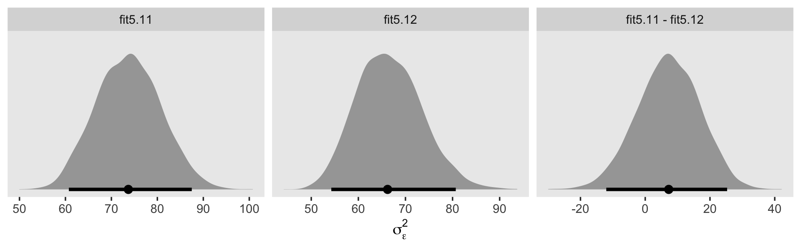
Using the full posterior for both models, here is the percent variance in CES-D explained by unemp.
v %>%
transmute(percent = (fit5.11 - fit5.12) / fit5.11) %>%
median_qi() %>%
mutate_if(is.double, round, digits = 3)## # A tibble: 1 × 6
## percent .lower .upper .width .point .interval
## <dbl> <dbl> <dbl> <dbl> <chr> <chr>
## 1 0.099 -0.182 0.305 0.95 median qiWhen you go beyond point estimates and factor in full posterior uncertainty, it becomes clear how fragile ad hoc statistics like this can be. Interpret them with caution.
5.3.2 Allowing the effect of a time-varying predictor to vary over time.
“Might unemployment status also affect the trajectory’s slope” (p. 171)? Here’s the statistical model:
$$ \[\begin{align*} \text{cesd}_{ij} & = \big [ \gamma_{00} + \gamma_{10} \text{months}_{ij} + \gamma_{20} \text{unemp}_{ij} + \gamma_{30} \text{months}_{ij} \times \text{unemp}_{ij} \big ] \\ & \;\;\; + \big [ \zeta_{0i} + \zeta_{1i} \text{months}_{ij} + \epsilon_{ij} \big ] \\ \epsilon_{ij} & \sim \operatorname{Normal}(0, \sigma_\epsilon) \\ \begin{bmatrix} \zeta_{0i} \\ \zeta_{1i} \end{bmatrix} & \sim \operatorname{Normal} \begin{pmatrix} \begin{bmatrix} 0 \\ 0 \end{bmatrix}, \mathbf D \mathbf \Omega \mathbf D' \end{pmatrix}\\ \mathbf D & = \begin{bmatrix} \sigma_0 & 0 \\ 0 & \sigma_1 \end{bmatrix} \\ \mathbf \Omega & = \begin{bmatrix} 1 & \rho_{01} \\ \rho_{01} & 1 \end{bmatrix} \\ \gamma_{00} & \sim \operatorname{Normal}(14.5, 20) \\ \gamma_{10}, \gamma_{20}, \gamma_{30} & \sim \operatorname{Normal}(0, 10) \\ \sigma_\epsilon, \sigma_0, \sigma_1 & \sim \operatorname{Student-t}(3, 0, 11.9) \\ \rho_{01} & \sim \operatorname{LKJ}(4). \end{align*}\] $$
Since \(\gamma_{30}\) is an interaction term, it might make sense to give it an ever tighter prior, something like \(\text{Normal}(0, 5)\). Here we’ll just stay wide and loose.
fit5.13 <-
brm(data = unemployment_pp,
family = gaussian,
cesd ~ 0 + Intercept + months + unemp + months:unemp + (1 + months | id),
prior = c(prior(normal(14.5, 20), class = b, coef = Intercept),
prior(normal(0, 10), class = b),
prior(student_t(3, 0, 11.9), class = sd),
prior(student_t(3, 0, 11.9), class = sigma),
prior(lkj(4), class = cor)),
iter = 2000, warmup = 1000, chains = 4, cores = 4,
seed = 5,
control = list(adapt_delta = .9),
file = "fits/fit05.13")Here are the results.
print(fit5.13)## Family: gaussian
## Links: mu = identity; sigma = identity
## Formula: cesd ~ 0 + Intercept + months + unemp + months:unemp + (1 + months | id)
## Data: unemployment_pp (Number of observations: 674)
## Draws: 4 chains, each with iter = 2000; warmup = 1000; thin = 1;
## total post-warmup draws = 4000
##
## Group-Level Effects:
## ~id (Number of levels: 254)
## Estimate Est.Error l-95% CI u-95% CI Rhat Bulk_ESS Tail_ESS
## sd(Intercept) 9.19 0.84 7.51 10.84 1.01 360 663
## sd(months) 0.56 0.19 0.08 0.86 1.03 203 338
## cor(Intercept,months) -0.48 0.17 -0.70 -0.04 1.01 1140 640
##
## Population-Level Effects:
## Estimate Est.Error l-95% CI u-95% CI Rhat Bulk_ESS Tail_ESS
## Intercept 9.96 1.90 6.24 13.68 1.00 1983 2570
## months 0.13 0.19 -0.25 0.51 1.00 1936 2523
## unemp 8.15 1.90 4.42 11.87 1.00 2094 2417
## months:unemp -0.43 0.22 -0.86 -0.02 1.00 2141 2534
##
## Family Specific Parameters:
## Estimate Est.Error l-95% CI u-95% CI Rhat Bulk_ESS Tail_ESS
## sigma 8.10 0.43 7.32 8.94 1.02 285 698
##
## Draws were sampled using sampling(NUTS). For each parameter, Bulk_ESS
## and Tail_ESS are effective sample size measures, and Rhat is the potential
## scale reduction factor on split chains (at convergence, Rhat = 1).Here’s how we might make our version of the middle panel of Figure 5.4.
nd <-
tibble(unemp = rep(1:0, times = c(29, 22)),
months = c(seq(from = 0, to = 14, by = .5),
seq(from = 3.5, to = 14, by = .5)))
f <-
fitted(fit5.13,
newdata = nd,
re_formula = NA) %>%
data.frame() %>%
bind_cols(nd) %>%
mutate(label = str_c("unemp = ", unemp))
f %>%
ggplot(aes(x = months, group = unemp)) +
geom_abline(intercept = fixef(fit5.13)[1, 1],
slope = fixef(fit5.13)[2, 1],
color = "grey80", linetype = 2) +
geom_ribbon(aes(ymin = Q2.5, ymax = Q97.5),
fill = "grey67", alpha = 1/2) +
geom_line(aes(y = Estimate)) +
geom_text(data = f %>% filter(months == 14),
aes(label = label, y = Estimate), hjust = -.05) +
scale_x_continuous("Months since job loss", breaks = seq(from = 0, to = 14, by = 2)) +
scale_y_continuous("CES-D", limits = c(5, 20)) +
labs(subtitle = "Main effects of unemp and time") +
coord_cartesian(clip = "off") +
theme(panel.grid = element_blank(),
plot.margin = margin(6, 55, 6, 6))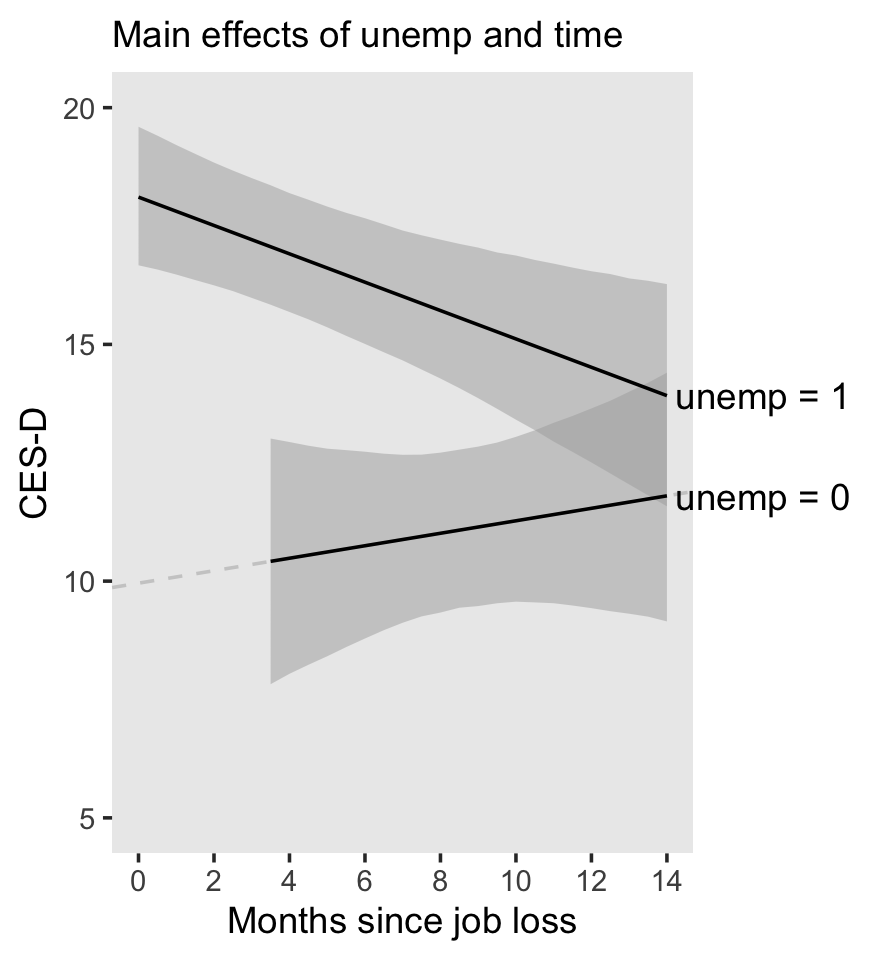
Here’s the posterior for \(\gamma_{10}\).
as_draws_df(fit5.13) %>%
ggplot(aes(x = b_months, y = 0)) +
stat_halfeye(.width = .95) +
scale_y_continuous(NULL, breaks = NULL) +
xlab(expression(paste(gamma[1][0], ", the main effect for time"))) +
theme(panel.grid = element_blank())It’s quite uncertain and almost symmetrically straddles the parameter space between -0.5 and 0.5.
The next model follows the form
$$ \[\begin{align*} \text{cesd}_{ij} & = \big [ \gamma_{00} + \gamma_{20} \text{unemp}_{ij} + \gamma_{30} \text{unemp}_{ij} \times \text{months}_{ij} \big ] \\ & \;\;\; + \big [ \zeta_{0i} + \zeta_{3i} \text{unemp}_{ij} \times \text{months}_{ij} + \epsilon_{ij} \big ] \\ \epsilon_{ij} & \sim \operatorname{Normal}(0, \sigma_\epsilon) \\ \begin{bmatrix} \zeta_{0i} \\ \zeta_{3i} \end{bmatrix} & \sim \operatorname{Normal} \begin{pmatrix} \begin{bmatrix} 0 \\ 0 \end{bmatrix}, \mathbf D \mathbf\Omega \mathbf D' \end{pmatrix} \\ \mathbf D & = \begin{bmatrix} \sigma_0 & 0 \\ 0 & \sigma_3 \end{bmatrix} \\ \mathbf\Omega & = \begin{bmatrix} 1 & \rho_{03} \\ \rho_{03} & 1 \end{bmatrix} \\ \gamma_{00} & \sim \operatorname{Normal}(14.5, 20) \\ \gamma_{20}, \gamma_{30} & \sim \operatorname{Normal}(0, 10) \\ \sigma_\epsilon, \sigma_0, \sigma_3 & \sim \operatorname{Student-t}(3, 0, 11.9) \\ \rho_{03} & \sim \operatorname{LKJ}(4). \end{align*}\] $$
Here’s how to fit it with brms::brm().
fit5.14 <-
brm(data = unemployment_pp,
family = gaussian,
cesd ~ 0 + Intercept + unemp + months:unemp + (1 + months:unemp | id),
prior = c(prior(normal(14.5, 20), class = b, coef = Intercept),
prior(normal(0, 10), class = b),
prior(student_t(3, 0, 11.9), class = sd),
prior(student_t(3, 0, 11.9), class = sigma),
prior(lkj(4), class = cor)),
iter = 2000, warmup = 1000, chains = 4, cores = 4,
seed = 5,
control = list(adapt_delta = .95),
file = "fits/fit05.14")It’s easy to miss this if you’re not following along quite carefully with the text, but this model, which corresponds to Equation 5.9 in the text, is NOT Model D. Rather, it’s an intermediary model between Model C and Model D. All this means we can’t compare our results with those in Table 5.7. But here they are, anyway.
print(fit5.14)## Family: gaussian
## Links: mu = identity; sigma = identity
## Formula: cesd ~ 0 + Intercept + unemp + months:unemp + (1 + months:unemp | id)
## Data: unemployment_pp (Number of observations: 674)
## Draws: 4 chains, each with iter = 2000; warmup = 1000; thin = 1;
## total post-warmup draws = 4000
##
## Group-Level Effects:
## ~id (Number of levels: 254)
## Estimate Est.Error l-95% CI u-95% CI Rhat Bulk_ESS Tail_ESS
## sd(Intercept) 7.99 0.64 6.76 9.32 1.00 1035 1723
## sd(months:unemp) 0.38 0.21 0.02 0.78 1.01 266 436
## cor(Intercept,months:unemp) -0.10 0.26 -0.53 0.50 1.00 1225 1737
##
## Population-Level Effects:
## Estimate Est.Error l-95% CI u-95% CI Rhat Bulk_ESS Tail_ESS
## Intercept 11.17 0.91 9.34 12.86 1.00 2091 2560
## unemp 6.95 0.93 5.16 8.75 1.00 3167 2620
## unemp:months -0.30 0.10 -0.50 -0.10 1.00 3810 2771
##
## Family Specific Parameters:
## Estimate Est.Error l-95% CI u-95% CI Rhat Bulk_ESS Tail_ESS
## sigma 8.55 0.35 7.87 9.23 1.01 854 1483
##
## Draws were sampled using sampling(NUTS). For each parameter, Bulk_ESS
## and Tail_ESS are effective sample size measures, and Rhat is the potential
## scale reduction factor on split chains (at convergence, Rhat = 1).We’ve already computed the WAIC for fit5.11 and fit5.12. Here we do so for fit5.13 and fit5.14.
fit5.13 <- add_criterion(fit5.13, criterion = "waic")
fit5.14 <- add_criterion(fit5.14, criterion = "waic")loo_compare(fit5.11, fit5.12, fit5.13, fit5.14, criterion = "waic") %>%
print(simplify = F)## elpd_diff se_diff elpd_waic se_elpd_waic p_waic se_p_waic waic se_waic
## fit5.13 0.0 0.0 -2488.0 21.4 197.9 10.7 4975.9 42.8
## fit5.12 -3.5 2.0 -2491.5 21.4 196.7 10.7 4983.0 42.9
## fit5.14 -16.8 3.4 -2504.8 21.8 169.5 9.8 5009.6 43.6
## fit5.11 -25.8 5.0 -2513.8 21.6 179.9 10.1 5027.5 43.2model_weights(fit5.11, fit5.12, fit5.13, fit5.14, weights = "waic") %>%
round(digits = 3)## fit5.11 fit5.12 fit5.13 fit5.14
## 0.000 0.028 0.972 0.000Yep, it appears fit5.14 is not an improvement on fit5.13 (i.e., our analogue to Model C in the text). Here’s our version of Model D:
$$ \[\begin{align*} \text{cesd}_{ij} & = \big [ \gamma_{00} + \gamma_{20} \text{unemp}_{ij} + \gamma_{30} \text{unemp}_{ij} \times \text{months}_{ij} \big ] \\ & \;\;\; + \big [ \zeta_{0i} + \zeta_{3i} \text{unemp}_{ij} \times \text{months}_{ij} + \epsilon_{ij} \big ] \\ \epsilon_{ij} & \sim \operatorname{Normal}(0, \sigma_\epsilon) \\ \begin{bmatrix} \zeta_{0i} \\ \zeta_{2i} \\ \zeta_{3i} \end{bmatrix} & \sim \operatorname{Normal} \begin{pmatrix} \begin{bmatrix} 0 \\ 0 \\ 0 \end{bmatrix}, \mathbf D \mathbf\Omega \mathbf D' \end{pmatrix} \\ \mathbf D & = \begin{bmatrix} \sigma_0 & 0 & 0 \\ 0 & \sigma_2 & 0 \\ 0 & 0 & \sigma_3 \end{bmatrix} \\ \mathbf\Omega & = \begin{bmatrix} 1 & \rho_{02} & \rho_{03} \\ \rho_{02} & 1 & \rho_{23} \\ \rho_{03} & \rho_{23} & 1 \end{bmatrix} \\ \gamma_{00} & \sim \operatorname{Normal}(14.5, 20) \\ \gamma_{20}, \gamma_{30} & \sim \operatorname{Normal}(0, 10) \\ \sigma_\epsilon, \dots , \sigma_3 & \sim \operatorname{Student-t}(3, 0, 11.9) \\ \mathbf\Omega & \sim \operatorname{LKJ}(4). \end{align*}\] $$
We’ll call it fit5.15. Here’s the brm() code.
fit5.15 <-
brm(data = unemployment_pp,
family = gaussian,
cesd ~ 0 + Intercept + unemp + months:unemp + (1 + unemp + months:unemp | id),
prior = c(prior(normal(14.5, 20), class = b, coef = Intercept),
prior(normal(0, 10), class = b),
prior(student_t(3, 0, 11.9), class = sd),
prior(student_t(3, 0, 11.9), class = sigma),
prior(lkj(4), class = cor)),
iter = 2000, warmup = 1000, chains = 4, cores = 4,
seed = 5,
file = "fits/fit05.15")print(fit5.15)## Family: gaussian
## Links: mu = identity; sigma = identity
## Formula: cesd ~ 0 + Intercept + unemp + months:unemp + (1 + unemp + months:unemp | id)
## Data: unemployment_pp (Number of observations: 674)
## Draws: 4 chains, each with iter = 2000; warmup = 1000; thin = 1;
## total post-warmup draws = 4000
##
## Group-Level Effects:
## ~id (Number of levels: 254)
## Estimate Est.Error l-95% CI u-95% CI Rhat Bulk_ESS Tail_ESS
## sd(Intercept) 6.85 0.86 5.16 8.61 1.00 1300 1778
## sd(unemp) 5.06 1.65 1.36 8.09 1.02 227 324
## sd(unemp:months) 0.67 0.22 0.14 1.03 1.02 309 253
## cor(Intercept,unemp) 0.22 0.22 -0.20 0.66 1.00 748 1653
## cor(Intercept,unemp:months) -0.17 0.22 -0.55 0.28 1.00 967 1515
## cor(unemp,unemp:months) -0.42 0.26 -0.82 0.20 1.01 451 928
##
## Population-Level Effects:
## Estimate Est.Error l-95% CI u-95% CI Rhat Bulk_ESS Tail_ESS
## Intercept 11.17 0.83 9.49 12.77 1.00 1647 2301
## unemp 6.91 0.95 5.02 8.78 1.00 2679 2684
## unemp:months -0.29 0.11 -0.50 -0.07 1.00 3943 3391
##
## Family Specific Parameters:
## Estimate Est.Error l-95% CI u-95% CI Rhat Bulk_ESS Tail_ESS
## sigma 8.03 0.42 7.24 8.89 1.02 397 1160
##
## Draws were sampled using sampling(NUTS). For each parameter, Bulk_ESS
## and Tail_ESS are effective sample size measures, and Rhat is the potential
## scale reduction factor on split chains (at convergence, Rhat = 1).Now we can finally make our version of the right panel of Figure 5.4.
f <-
fitted(fit5.15,
newdata = nd,
re_formula = NA) %>%
data.frame() %>%
bind_cols(nd) %>%
mutate(label = str_c("unemp = ", unemp))
f %>%
ggplot(aes(x = months, group = unemp)) +
geom_abline(intercept = fixef(fit5.15)[1, 1],
slope = 0,
color = "grey80", linetype = 2) +
geom_ribbon(aes(ymin = Q2.5, ymax = Q97.5),
fill = "grey67", alpha = 1/2) +
geom_line(aes(y = Estimate)) +
geom_text(data = f %>% filter(months == 14),
aes(label = label, y = Estimate), hjust = -.05) +
scale_x_continuous("Months since job loss", breaks = seq(from = 0, to = 14, by = 2)) +
scale_y_continuous("CES-D", limits = c(5, 20)) +
labs(subtitle = "Constraining the effects time\namong the re-employed") +
coord_cartesian(clip = "off") +
theme(panel.grid = element_blank(),
plot.margin = margin(6, 55, 6, 6))
By carefully using filter(), we can extract the posterior for summary the expected CES-D value for “the average unemployed person in the population”, “immediately upon layoff” (p. 173).
f %>%
filter(unemp == 1 & months == 0)## Estimate Est.Error Q2.5 Q97.5 unemp months label
## 1 18.07945 0.7779 16.53265 19.59696 1 0 unemp = 1To get the decline rate per month, just use fixef() and subset.
fixef(fit5.15)["unemp:months", ]## Estimate Est.Error Q2.5 Q97.5
## -0.28751601 0.10972618 -0.50487306 -0.07413347How much lower, on average, are “CES-D scores among those who find a job” right after layoff (p. 173)? Again, just use fixef().
fixef(fit5.15)["unemp", ]## Estimate Est.Error Q2.5 Q97.5
## 6.9109977 0.9536524 5.0201413 8.7795774But if we’d like to get the posterior for the difference at 12 months later, we’ll need to go back to fitted().
nd <-
tibble(unemp = 1:0,
months = 12)
fitted(fit5.15,
newdata = nd,
re_formula = NA,
summary = F) %>%
data.frame() %>%
set_names(str_c(c("un", ""), "employed_cesd_at_12")) %>%
transmute(difference = unemployed_cesd_at_12 - employed_cesd_at_12) %>%
median_qi() %>%
mutate_if(is.double, round, digits = 3)## # A tibble: 1 × 6
## difference .lower .upper .width .point .interval
## <dbl> <dbl> <dbl> <dbl> <chr> <chr>
## 1 3.48 0.9 6.05 0.95 median qiThere’s more posterior uncertainty, there, that you might expect from simply using the point estimates. Always beware the posterior uncertainty. We may as well finish off with a little WAIC.
fit5.15 <- add_criterion(fit5.15, criterion = "waic")
loo_compare(fit5.11, fit5.12, fit5.13, fit5.14, fit5.15, criterion = "waic") %>%
print(simplify = F)## elpd_diff se_diff elpd_waic se_elpd_waic p_waic se_p_waic waic se_waic
## fit5.15 0.0 0.0 -2486.2 21.6 203.1 11.0 4972.5 43.2
## fit5.13 -1.7 3.7 -2488.0 21.4 197.9 10.7 4975.9 42.8
## fit5.12 -5.3 3.6 -2491.5 21.4 196.7 10.7 4983.0 42.9
## fit5.14 -18.5 4.0 -2504.8 21.8 169.5 9.8 5009.6 43.6
## fit5.11 -27.5 6.8 -2513.8 21.6 179.9 10.1 5027.5 43.2model_weights(fit5.11, fit5.12, fit5.13, fit5.14, fit5.15, weights = "waic") %>%
round(digits = 3)## fit5.11 fit5.12 fit5.13 fit5.14 fit5.15
## 0.000 0.004 0.151 0.000 0.845fit5.15, fit5.13, and fit5.12 are all very close, with a modest edge for fit5.15.
5.3.3 Recentering time-varying predictors.
Back to the wages_pp data! Here’s the generic statistical model we’ll be fooling with:
\[ \begin{align*} \text{lnw}_{ij} & = \gamma_{00} + \gamma_{10} \text{exper}_{ij} + \gamma_{01} (\text{hgc}_i - 9) + \gamma_{12} \text{black}_i \times \text{exper}_{ij} \\ & \;\;\; + \zeta_{0i} + \zeta_{1i} \text{exper}_{ij} + \epsilon_{ij}. \end{align*} \]
We will fit the model with three versions of uerate. If you execute head(wages_pp), you’ll discover they’re already in the data. But it might be worth walking out how to compute those variables. First, centering uerate at 7 is easy enough. Just subtract.
wages_pp <-
wages_pp %>%
mutate(uerate_7 = uerate - 7)Continuing on with the same priors from before, here’s how to fit the new model, our version of Model A on page 175.
fit5.16 <-
brm(data = wages_pp,
family = gaussian,
lnw ~ 0 + Intercept + exper + hgc_9 + black:exper + uerate_7 + (1 + exper | id),
prior = c(prior(normal(1.335, 1), class = b, coef = Intercept),
prior(normal(0, 0.5), class = b),
prior(student_t(3, 0, 1), class = sd),
prior(student_t(3, 0, 1), class = sigma),
prior(lkj(4), class = cor)),
iter = 2500, warmup = 1000, chains = 3, cores = 3,
seed = 5,
file = "fits/fit05.16")print(fit5.16, digits = 3)## Family: gaussian
## Links: mu = identity; sigma = identity
## Formula: lnw ~ 0 + Intercept + exper + hgc_9 + black:exper + uerate_7 + (1 + exper | id)
## Data: wages_pp (Number of observations: 6402)
## Draws: 3 chains, each with iter = 2500; warmup = 1000; thin = 1;
## total post-warmup draws = 4500
##
## Group-Level Effects:
## ~id (Number of levels: 888)
## Estimate Est.Error l-95% CI u-95% CI Rhat Bulk_ESS Tail_ESS
## sd(Intercept) 0.224 0.010 0.204 0.245 1.002 1704 2884
## sd(exper) 0.040 0.003 0.035 0.046 1.004 605 917
## cor(Intercept,exper) -0.306 0.068 -0.432 -0.165 1.004 713 1634
##
## Population-Level Effects:
## Estimate Est.Error l-95% CI u-95% CI Rhat Bulk_ESS Tail_ESS
## Intercept 1.749 0.011 1.727 1.772 1.000 2856 3207
## exper 0.044 0.003 0.039 0.049 1.000 2694 3522
## hgc_9 0.040 0.006 0.027 0.052 1.002 2100 3469
## uerate_7 -0.012 0.002 -0.016 -0.008 1.001 5116 4125
## exper:black -0.018 0.005 -0.027 -0.009 1.001 2338 2587
##
## Family Specific Parameters:
## Estimate Est.Error l-95% CI u-95% CI Rhat Bulk_ESS Tail_ESS
## sigma 0.308 0.003 0.302 0.314 1.001 3798 3478
##
## Draws were sampled using sampling(NUTS). For each parameter, Bulk_ESS
## and Tail_ESS are effective sample size measures, and Rhat is the potential
## scale reduction factor on split chains (at convergence, Rhat = 1).For the next model, we add a couple variables to the wages_pp data.
wages_pp <-
wages_pp %>%
group_by(id) %>%
mutate(uerate_id_mu = mean(uerate)) %>%
ungroup() %>%
mutate(uerate_id_dev = uerate - uerate_id_mu)In the original data set, these were the ue.mean and ue.person.cen variables, respectively. Here’s how to fit the model.
fit5.17 <-
brm(data = wages_pp,
family = gaussian,
lnw ~ 0 + Intercept + exper + hgc_9 + black:exper + uerate_id_mu + uerate_id_dev +
(1 + exper | id),
prior = c(prior(normal(1.335, 1), class = b, coef = Intercept),
prior(normal(0, 0.5), class = b),
prior(student_t(3, 0, 1), class = sd),
prior(student_t(3, 0, 1), class = sigma),
prior(lkj(4), class = cor)),
iter = 2500, warmup = 1000, chains = 3, cores = 3,
seed = 5,
file = "fits/fit05.17")print(fit5.17, digits = 3)## Family: gaussian
## Links: mu = identity; sigma = identity
## Formula: lnw ~ 0 + Intercept + exper + hgc_9 + black:exper + uerate_id_mu + uerate_id_dev + (1 + exper | id)
## Data: wages_pp (Number of observations: 6402)
## Draws: 3 chains, each with iter = 2500; warmup = 1000; thin = 1;
## total post-warmup draws = 4500
##
## Group-Level Effects:
## ~id (Number of levels: 888)
## Estimate Est.Error l-95% CI u-95% CI Rhat Bulk_ESS Tail_ESS
## sd(Intercept) 0.225 0.011 0.204 0.247 1.001 1905 3162
## sd(exper) 0.040 0.003 0.035 0.045 1.001 824 1694
## cor(Intercept,exper) -0.313 0.067 -0.438 -0.175 1.001 946 2238
##
## Population-Level Effects:
## Estimate Est.Error l-95% CI u-95% CI Rhat Bulk_ESS Tail_ESS
## Intercept 1.873 0.030 1.816 1.931 1.000 2772 3291
## exper 0.045 0.003 0.040 0.050 1.000 3163 2937
## hgc_9 0.040 0.006 0.028 0.053 1.000 3320 3476
## uerate_id_mu -0.018 0.004 -0.025 -0.011 1.000 2769 3374
## uerate_id_dev -0.010 0.002 -0.014 -0.006 1.000 5223 3588
## exper:black -0.019 0.005 -0.028 -0.010 1.000 3622 3579
##
## Family Specific Parameters:
## Estimate Est.Error l-95% CI u-95% CI Rhat Bulk_ESS Tail_ESS
## sigma 0.308 0.003 0.302 0.314 1.000 3930 3647
##
## Draws were sampled using sampling(NUTS). For each parameter, Bulk_ESS
## and Tail_ESS are effective sample size measures, and Rhat is the potential
## scale reduction factor on split chains (at convergence, Rhat = 1).Within the tidyverse, probably the easiest way to center on the first value for each id is to first group_by(id) and then make use of the dplyr::first() function, which you can learn more about here.
wages_pp <-
wages_pp %>%
group_by(id) %>%
mutate(uerate_id_1 = first(uerate)) %>%
ungroup() %>%
mutate(uerate_id_1_dev = uerate - uerate_id_1)In the original data set, these were the ue1 and ue.centert1 variables, respectively. Here’s how to fit the updated model.
fit5.18 <-
update(fit5.16,
newdata = wages_pp,
lnw ~ 0 + Intercept + exper + hgc_9 + black:exper + uerate_id_1 + uerate_id_1_dev +
(1 + exper | id),
iter = 2500, warmup = 1000, chains = 3, cores = 3,
seed = 5,
file = "fits/fit05.18")print(fit5.18, digits = 3)## Family: gaussian
## Links: mu = identity; sigma = identity
## Formula: lnw ~ Intercept + exper + hgc_9 + uerate_id_1 + uerate_id_1_dev + (1 + exper | id) + exper:black - 1
## Data: wages_pp (Number of observations: 6402)
## Draws: 3 chains, each with iter = 2500; warmup = 1000; thin = 1;
## total post-warmup draws = 4500
##
## Group-Level Effects:
## ~id (Number of levels: 888)
## Estimate Est.Error l-95% CI u-95% CI Rhat Bulk_ESS Tail_ESS
## sd(Intercept) 0.224 0.010 0.203 0.244 1.000 2164 3163
## sd(exper) 0.040 0.003 0.035 0.046 1.005 725 1480
## cor(Intercept,exper) -0.301 0.069 -0.427 -0.157 1.003 852 1844
##
## Population-Level Effects:
## Estimate Est.Error l-95% CI u-95% CI Rhat Bulk_ESS Tail_ESS
## Intercept 1.869 0.026 1.819 1.920 1.000 3281 3378
## exper 0.045 0.003 0.040 0.050 1.000 3305 3497
## hgc_9 0.040 0.006 0.028 0.052 1.000 3620 3471
## uerate_id_1 -0.016 0.003 -0.021 -0.011 1.000 3166 3483
## uerate_id_1_dev -0.010 0.002 -0.014 -0.006 1.000 6928 3958
## exper:black -0.018 0.004 -0.027 -0.010 1.000 3356 3681
##
## Family Specific Parameters:
## Estimate Est.Error l-95% CI u-95% CI Rhat Bulk_ESS Tail_ESS
## sigma 0.308 0.003 0.302 0.314 1.001 4657 3655
##
## Draws were sampled using sampling(NUTS). For each parameter, Bulk_ESS
## and Tail_ESS are effective sample size measures, and Rhat is the potential
## scale reduction factor on split chains (at convergence, Rhat = 1).Here are the WAIC comparisons.
fit5.16 <- add_criterion(fit5.16, criterion = "waic")
fit5.17 <- add_criterion(fit5.17, criterion = "waic")
fit5.18 <- add_criterion(fit5.18, criterion = "waic")
loo_compare(fit5.16, fit5.17, fit5.18, criterion = "waic") %>%
print(simplify = F)## elpd_diff se_diff elpd_waic se_elpd_waic p_waic se_p_waic waic se_waic
## fit5.18 0.0 0.0 -2034.9 104.2 862.7 26.9 4069.8 208.4
## fit5.16 -2.7 1.9 -2037.6 104.2 864.8 27.0 4075.1 208.4
## fit5.17 -3.2 1.6 -2038.1 104.3 865.5 27.2 4076.2 208.5model_weights(fit5.16, fit5.17, fit5.18, weights = "waic") %>%
round(digits = 3)## fit5.16 fit5.17 fit5.18
## 0.063 0.036 0.901Like in the text, these three models are all close with respect to the WAIC. Based on their WAIC weights, fit5.18 (Model C) and fit5.16 (Model A) seen the be the best depictions of the data.
5.3.4 An important caveat: The problem of reciprocal causation.
In this section, Singer and Willett gave a typology for time-varying covariates.
- A variable is defined if, “in advance to data collection, its values are predetermined for everyone under study” (p. 177). Examples are time and the seasons.
- A variable is ancillary if “its values cannot be influenced by study participants because they are determined by a stochastic process totally external to them” (p. 178). Within the context of a study on people within monogamous relationships, the availability of potential mates within the region would be an example.
- A variable is contextual if “it describes an ‘external’ stochastic process, but the connection between units is closer–between husbands and wives, parents and children, teachers and students, employers and employees. Because of this proximity, contextual predictors can be influenced by an individual’s contemporaneous outcome values; if so, they are susceptible to issues of reciprocal causation” (p. 179).
- A variable is internal if it describes an “individual’s potentially changeable status over time” (p. 179). Examples include mood, psychiatric syndromes, and employment status.
5.4 Recentering the effect of TIME
Our version of the data from Tomarken, Shelton, Elkins, and Anderson (1997) is saved as medication_pp.csv.
medication_pp <- read_csv("data/medication_pp.csv")
glimpse(medication_pp)## Rows: 1,242
## Columns: 11
## $ id <dbl> 1, 1, 1, 1, 1, 1, 1, 1, 1, 1, 1, 1, 1, 1, 1, 1, 1, 1, 1, 1, 10, 10, 10, 10, 10…
## $ treat <dbl> 1, 1, 1, 1, 1, 1, 1, 1, 1, 1, 1, 1, 1, 1, 1, 1, 1, 1, 1, 1, 1, 1, 1, 1, 1, 1, …
## $ wave <dbl> 1, 2, 3, 4, 5, 6, 7, 8, 9, 10, 11, 12, 13, 14, 15, 16, 17, 19, 20, 21, 1, 2, 3…
## $ day <dbl> 0, 0, 0, 1, 1, 1, 2, 2, 2, 3, 3, 3, 4, 4, 4, 5, 5, 6, 6, 6, 0, 0, 0, 1, 1, 1, …
## $ time.of.day <dbl> 0.0000000, 0.3333333, 0.6666667, 0.0000000, 0.3333333, 0.6666667, 0.0000000, 0…
## $ time <dbl> 0.0000000, 0.3333333, 0.6666667, 1.0000000, 1.3333333, 1.6666667, 2.0000000, 2…
## $ time333 <dbl> -3.3333333, -3.0000000, -2.6666667, -2.3333333, -2.0000000, -1.6666667, -1.333…
## $ time667 <dbl> -6.6666667, -6.3333333, -6.0000000, -5.6666667, -5.3333333, -5.0000000, -4.666…
## $ initial <dbl> 1.00, 0.95, 0.90, 0.85, 0.80, 0.75, 0.70, 0.65, 0.60, 0.55, 0.50, 0.45, 0.40, …
## $ final <dbl> 0.00, 0.05, 0.10, 0.15, 0.20, 0.25, 0.30, 0.35, 0.40, 0.45, 0.50, 0.55, 0.60, …
## $ pos <dbl> 106.6667, 100.0000, 100.0000, 100.0000, 100.0000, 100.0000, 100.0000, 100.0000…The medication_pp data do not come with a reading variable, as in Table 5.9. Here we’ll make one and display the time variables highlighted in Table 5.9.
medication_pp <-
medication_pp %>%
mutate(reading = ifelse(time.of.day == 0, "8 am",
ifelse(time.of.day < .6, "3 pm", "10 pm")))
medication_pp %>%
select(wave, day, reading, time.of.day:time667) %>%
head(n = 10)## # A tibble: 10 × 7
## wave day reading time.of.day time time333 time667
## <dbl> <dbl> <chr> <dbl> <dbl> <dbl> <dbl>
## 1 1 0 8 am 0 0 -3.33 -6.67
## 2 2 0 3 pm 0.333 0.333 -3 -6.33
## 3 3 0 10 pm 0.667 0.667 -2.67 -6
## 4 4 1 8 am 0 1 -2.33 -5.67
## 5 5 1 3 pm 0.333 1.33 -2 -5.33
## 6 6 1 10 pm 0.667 1.67 -1.67 -5
## 7 7 2 8 am 0 2 -1.33 -4.67
## 8 8 2 3 pm 0.333 2.33 -1 -4.33
## 9 9 2 10 pm 0.667 2.67 -0.667 -4
## 10 10 3 8 am 0 3 -0.333 -3.67To help get a sense of the balance in the data, here is a bar plot of the distribution of the numbers of measurement occasions within participants. It’s color coded by treatment status.
medication_pp %>%
mutate(treat = str_c("treat = ", treat)) %>%
group_by(treat, id) %>%
count() %>%
ggplot(aes(y = n, fill = treat)) +
geom_bar() +
scale_y_continuous(breaks = c(2,12, 15:21)) +
scale_fill_viridis_d(NULL, end = .8) +
labs(x = "count of cases",
y = "# measurement occasions") +
theme(panel.grid = element_blank()) 
For this section, our basic model will be
\[ \begin{align*} \text{pos}_{ij} & = \pi_{0i} + \pi_{1i} (\text{time}_{ij} - c) + \epsilon_{ij} \\ \pi_{0i} & = \gamma_{00} + \gamma_{01} \text{treat}_i + \zeta_{0i} \\ \pi_{1i} & = \gamma_{10} + \gamma_{11} \text{treat}_i + \zeta_{1i}, \end{align*} \]
where \(c\) is a generic constant. For our three variants of \(\text{time}_{ij}\), \(c\) will be
- 0 for
time, - 3.3333333 for
time333, and - 6.666667 for
time667.
Our criterion variable is pos, positive mood rating. The text told us these were from “a package of mood diaries (which use a five-point scale to assess positive and negative moods)” (p. 182). However, we don’t know what numerals were assigned to the points on the scale, we don’t know how many items were used, and we don’t even know whether the items were taken from an existing questionnaire. And unfortunately, the citation Singer and Willett gave for the study is from a conference presentation, making it a pain to track down background information on the internet. In such a situation, it’s difficult to figure out how to set our priors. Though suboptimal, we might first get a sense of the pos data with a histogram.
medication_pp %>%
ggplot(aes(x = pos)) +
geom_histogram(binwidth = 10) +
theme(panel.grid = element_blank())Here’s the range().
range(medication_pp$pos)## [1] 100.0000 466.6667Starting with the prior for our intercept, I think there’s a lot of room for argument, here. To keep with our weakly-regularizing approach to priors, it might make sense to use something like normal(200, 100). But then again, we know something about the study design. At the beginning, participants were in treatment for depression, so we’d expect the starting point to be closer to the lower end of the scale. In that case, we might update our approach to something like normal(150, 50). Feel free to play with alternatives. What I hope this illustrates is that our task would be much easier with more domain knowledge.
Anyway, given the scale of the data, weakly-regularizing priors for the predictor variables might take the form of something like normal(0, 25). We’ll use student_t(0, 50) on the \(\sigma\)s and stay steady with lkj(4) on \(\rho_{01}\).
Here we fit the model with all three versions of time.
fit5.19 <-
brm(data = medication_pp,
family = gaussian,
pos ~ 0 + Intercept + time + treat + time:treat + (1 + time | id),
prior = c(prior(normal(150, 50), class = b, coef = Intercept),
prior(normal(0, 25), class = b),
prior(student_t(3, 0, 50), class = sd),
prior(student_t(3, 0, 50), class = sigma),
prior(lkj(4), class = cor)),
iter = 2000, warmup = 1000, chains = 4, cores = 4,
seed = 5,
file = "fits/fit05.19")
fit5.20 <-
update(fit5.19,
newdata = medication_pp,
pos ~ 0 + Intercept + time333 + treat + time333:treat + (1 + time333 | id),
iter = 2000, warmup = 1000, chains = 4, cores = 4,
seed = 5,
file = "fits/fit05.20")
fit5.21 <-
update(fit5.19,
newdata = medication_pp,
pos ~ 0 + Intercept + time667 + treat + time667:treat + (1 + time667 | id),
iter = 2000, warmup = 1000, chains = 4, cores = 4,
seed = 5,
file = "fits/fit05.21")Given the size of our posterior standard deviations, our \(\gamma\) posteriors are quite comparable to the point estimates (and their standard errors) in the text.
print(fit5.19)## Family: gaussian
## Links: mu = identity; sigma = identity
## Formula: pos ~ 0 + Intercept + time + treat + time:treat + (1 + time | id)
## Data: medication_pp (Number of observations: 1242)
## Draws: 4 chains, each with iter = 2000; warmup = 1000; thin = 1;
## total post-warmup draws = 4000
##
## Group-Level Effects:
## ~id (Number of levels: 64)
## Estimate Est.Error l-95% CI u-95% CI Rhat Bulk_ESS Tail_ESS
## sd(Intercept) 46.69 4.64 38.50 56.88 1.00 1194 2131
## sd(time) 8.25 0.92 6.56 10.24 1.00 1491 2708
## cor(Intercept,time) -0.28 0.13 -0.52 -0.02 1.00 1366 2256
##
## Population-Level Effects:
## Estimate Est.Error l-95% CI u-95% CI Rhat Bulk_ESS Tail_ESS
## Intercept 166.38 8.99 148.76 183.75 1.00 869 1394
## time -2.33 1.78 -5.91 1.06 1.00 1152 2001
## treat -2.11 11.35 -24.39 20.13 1.01 954 1540
## time:treat 5.50 2.35 0.72 10.10 1.00 1098 1762
##
## Family Specific Parameters:
## Estimate Est.Error l-95% CI u-95% CI Rhat Bulk_ESS Tail_ESS
## sigma 35.13 0.75 33.74 36.65 1.00 6220 2927
##
## Draws were sampled using sampling(NUTS). For each parameter, Bulk_ESS
## and Tail_ESS are effective sample size measures, and Rhat is the potential
## scale reduction factor on split chains (at convergence, Rhat = 1).Given the scales we’re working with, it’s difficult to compare our \(\sigma\) summaries with the \(\sigma^2\) summaries in Table 5.10 of the text. Here we convert and re-summarize.
v <-
as_draws_df(fit5.19) %>%
transmute(sigma_2_0 = sd_id__Intercept^2,
sigma_2_1 = sd_id__time^2,
sigma_2_epsilon = sigma^2)
v %>%
pivot_longer(everything()) %>%
group_by(name) %>%
median_qi() %>%
mutate_if(is.double, round, digits = 2)## # A tibble: 3 × 7
## name value .lower .upper .width .point .interval
## <chr> <dbl> <dbl> <dbl> <dbl> <chr> <chr>
## 1 sigma_2_0 2150. 1482. 3236. 0.95 median qi
## 2 sigma_2_1 67.3 43.0 105. 0.95 median qi
## 3 sigma_2_epsilon 1234. 1138. 1343. 0.95 median qiTurns out the posterior medians are quite similar to the ML estimates in the text. Here’s what the entire distributions looks like.
v %>%
set_names("sigma[0]^2", "sigma[1]^2", "sigma[epsilon]^2") %>%
pivot_longer(everything()) %>%
ggplot(aes(x = value, y = 0)) +
stat_halfeye(.width = .95, normalize = "panels") +
scale_y_continuous(NULL, breaks = NULL) +
xlab("posterior") +
theme(panel.grid = element_blank(),
strip.text = element_text(size = 11)) +
facet_wrap(~ name, scales = "free", labeller = label_parsed)
Here’s our version of Figure 5.5.
nd <-
crossing(treat = 0:1,
time = seq(from = 0, to = 7, length.out = 30))
text <-
tibble(treat = 0:1,
time = 4,
y = c(135, 197),
label = c("control", "treatment"),
angle = c(350, 15))
fitted(fit5.19,
newdata = nd,
re_formula = NA) %>%
data.frame() %>%
bind_cols(nd) %>%
ggplot(aes(x = time, fill = treat, color = treat, group = treat)) +
geom_ribbon(aes(ymin = Q2.5, ymax = Q97.5),
alpha = 1/3, size = 0) +
geom_line(aes(y = Estimate)) +
geom_text(data = text,
aes(y = y, label = label, angle = angle)) +
scale_fill_viridis_c(option = "A", begin = .3, end = .6) +
scale_color_viridis_c(option = "A", begin = .3, end = .6) +
labs(x = "days",
y = "pos") +
theme(legend.position = "none",
panel.grid = element_blank())Although we still have clear evidence of an interaction, adding those 95% intervals makes it look less impressive, doesn’t it?
Here are the summaries for the models with the alternative versions of \((\text{time}_{ij} - c)\).
print(fit5.20)## Family: gaussian
## Links: mu = identity; sigma = identity
## Formula: pos ~ Intercept + time333 + treat + (1 + time333 | id) + time333:treat - 1
## Data: medication_pp (Number of observations: 1242)
## Draws: 4 chains, each with iter = 2000; warmup = 1000; thin = 1;
## total post-warmup draws = 4000
##
## Group-Level Effects:
## ~id (Number of levels: 64)
## Estimate Est.Error l-95% CI u-95% CI Rhat Bulk_ESS Tail_ESS
## sd(Intercept) 46.05 4.09 38.82 55.01 1.00 463 995
## sd(time333) 8.34 0.96 6.66 10.47 1.00 881 1295
## cor(Intercept,time333) 0.21 0.13 -0.05 0.45 1.00 960 1723
##
## Population-Level Effects:
## Estimate Est.Error l-95% CI u-95% CI Rhat Bulk_ESS Tail_ESS
## Intercept 160.93 8.17 144.87 176.89 1.02 167 453
## time333 -2.34 1.80 -5.87 1.22 1.01 662 998
## treat 12.39 10.52 -9.31 32.20 1.01 287 513
## time333:treat 5.43 2.34 0.82 9.95 1.00 677 1351
##
## Family Specific Parameters:
## Estimate Est.Error l-95% CI u-95% CI Rhat Bulk_ESS Tail_ESS
## sigma 35.10 0.74 33.67 36.59 1.00 3052 2702
##
## Draws were sampled using sampling(NUTS). For each parameter, Bulk_ESS
## and Tail_ESS are effective sample size measures, and Rhat is the potential
## scale reduction factor on split chains (at convergence, Rhat = 1).print(fit5.21)## Family: gaussian
## Links: mu = identity; sigma = identity
## Formula: pos ~ Intercept + time667 + treat + (1 + time667 | id) + time667:treat - 1
## Data: medication_pp (Number of observations: 1242)
## Draws: 4 chains, each with iter = 2000; warmup = 1000; thin = 1;
## total post-warmup draws = 4000
##
## Group-Level Effects:
## ~id (Number of levels: 64)
## Estimate Est.Error l-95% CI u-95% CI Rhat Bulk_ESS Tail_ESS
## sd(Intercept) 57.79 5.52 48.11 69.72 1.00 1148 1877
## sd(time667) 8.07 0.93 6.46 10.07 1.00 1381 2117
## cor(Intercept,time667) 0.59 0.09 0.38 0.75 1.00 1826 2395
##
## Population-Level Effects:
## Estimate Est.Error l-95% CI u-95% CI Rhat Bulk_ESS Tail_ESS
## Intercept 156.86 10.65 136.54 178.07 1.00 798 1505
## time667 -1.94 1.71 -5.18 1.48 1.00 1261 2008
## treat 24.16 13.37 -1.95 50.42 1.00 904 1478
## time667:treat 4.67 2.23 0.29 9.03 1.00 1123 2168
##
## Family Specific Parameters:
## Estimate Est.Error l-95% CI u-95% CI Rhat Bulk_ESS Tail_ESS
## sigma 35.12 0.72 33.70 36.56 1.00 6251 3114
##
## Draws were sampled using sampling(NUTS). For each parameter, Bulk_ESS
## and Tail_ESS are effective sample size measures, and Rhat is the potential
## scale reduction factor on split chains (at convergence, Rhat = 1).It might be easier to compare the \(\gamma\) summaries across models with a well-designed coefficient plot. Here’s an attempt.
tibble(name = str_c("fit5.", 19:21)) %>%
mutate(fixef = map(name, ~ get(.) %>%
fixef() %>%
data.frame() %>%
rownames_to_column("parameter"))) %>%
unnest(fixef) %>%
mutate(gamma = rep(c("gamma[0][0]", "gamma[1][0]", "gamma[0][1]", "gamma[1][1]"), times = 3)) %>%
ggplot(aes(x = name, y = Estimate, ymin = Q2.5, ymax = Q97.5)) +
geom_pointrange() +
xlab(NULL) +
coord_flip() +
theme(axis.ticks.y = element_blank(),
panel.grid = element_blank(),
strip.text = element_text(size = 11)) +
facet_wrap(~ gamma, scales = "free_x", labeller = label_parsed, ncol = 4)
Since we’re juggling less information, we might compare the posteriors for \(\sigma_1^2\) across the three models with good old tidybayes::geom_halfeyeh().
tibble(name = str_c("fit5.", 19:21)) %>%
mutate(fit = map(name, get)) %>%
mutate(sigma_2_1 = map(fit, ~ VarCorr(., summary = F)[[1]][[1]][, 1]^2 %>%
data.frame() %>%
set_names("sigma_2_1"))) %>%
unnest(sigma_2_1) %>%
ggplot(aes(x = sigma_2_1, y = name)) +
stat_halfeye(.width = c(.5, .95)) +
scale_x_continuous(expression(sigma[1]^2), limits = c(0, NA)) +
ylab(NULL) +
theme(axis.ticks.y = element_blank(),
panel.grid = element_blank())
For kicks and giggles, we marked off both 50% and 95% intervals for each. Here’s the same for \(\rho_{01}\).
tibble(name = str_c("fit5.", 19:21)) %>%
mutate(fit = map(name, get)) %>%
mutate(rho = map(fit, ~ VarCorr(., summary = F)[[1]][[2]][, 2, "Intercept"] %>%
data.frame() %>%
set_names("rho"))) %>%
unnest(rho) %>%
ggplot(aes(x = rho, y = name)) +
stat_halfeye(.width = c(.5, .95)) +
labs(x = expression(rho[0][1]),
y = NULL) +
coord_cartesian(xlim = c(-1, 1)) +
theme(axis.ticks.y = element_blank(),
panel.grid = element_blank())
“As Rogosa and Willett (1985) demonstrate, you can always alter the correlation between the level-1 growth parameters simply by changing the centering constant” (p. 186).
Here are the WAIC comparisons.
fit5.19 <- add_criterion(fit5.19, criterion = "waic")
fit5.20 <- add_criterion(fit5.20, criterion = "waic")
fit5.21 <- add_criterion(fit5.21, criterion = "waic")
loo_compare(fit5.19, fit5.20, fit5.21, criterion = "waic") %>%
print(simplify = F)## elpd_diff se_diff elpd_waic se_elpd_waic p_waic se_p_waic waic se_waic
## fit5.21 0.0 0.0 -6242.1 41.4 110.2 7.5 12484.2 82.8
## fit5.19 -0.4 0.7 -6242.5 41.5 110.2 7.6 12484.9 83.0
## fit5.20 -0.5 0.5 -6242.6 41.5 111.4 7.7 12485.2 83.0model_weights(fit5.19, fit5.20, fit5.21, weights = "waic") %>%
round(digits = 3)## fit5.19 fit5.20 fit5.21
## 0.297 0.265 0.437As one might hope, not much going on.
As Singer and Willett alluded to in the text (p. 187), the final model in this chapter is an odd one. Do note the initial and final columns in the data.
glimpse(medication_pp)## Rows: 1,242
## Columns: 12
## $ id <dbl> 1, 1, 1, 1, 1, 1, 1, 1, 1, 1, 1, 1, 1, 1, 1, 1, 1, 1, 1, 1, 10, 10, 10, 10, 10…
## $ treat <dbl> 1, 1, 1, 1, 1, 1, 1, 1, 1, 1, 1, 1, 1, 1, 1, 1, 1, 1, 1, 1, 1, 1, 1, 1, 1, 1, …
## $ wave <dbl> 1, 2, 3, 4, 5, 6, 7, 8, 9, 10, 11, 12, 13, 14, 15, 16, 17, 19, 20, 21, 1, 2, 3…
## $ day <dbl> 0, 0, 0, 1, 1, 1, 2, 2, 2, 3, 3, 3, 4, 4, 4, 5, 5, 6, 6, 6, 0, 0, 0, 1, 1, 1, …
## $ time.of.day <dbl> 0.0000000, 0.3333333, 0.6666667, 0.0000000, 0.3333333, 0.6666667, 0.0000000, 0…
## $ time <dbl> 0.0000000, 0.3333333, 0.6666667, 1.0000000, 1.3333333, 1.6666667, 2.0000000, 2…
## $ time333 <dbl> -3.3333333, -3.0000000, -2.6666667, -2.3333333, -2.0000000, -1.6666667, -1.333…
## $ time667 <dbl> -6.6666667, -6.3333333, -6.0000000, -5.6666667, -5.3333333, -5.0000000, -4.666…
## $ initial <dbl> 1.00, 0.95, 0.90, 0.85, 0.80, 0.75, 0.70, 0.65, 0.60, 0.55, 0.50, 0.45, 0.40, …
## $ final <dbl> 0.00, 0.05, 0.10, 0.15, 0.20, 0.25, 0.30, 0.35, 0.40, 0.45, 0.50, 0.55, 0.60, …
## $ pos <dbl> 106.6667, 100.0000, 100.0000, 100.0000, 100.0000, 100.0000, 100.0000, 100.0000…
## $ reading <chr> "8 am", "3 pm", "10 pm", "8 am", "3 pm", "10 pm", "8 am", "3 pm", "10 pm", "8 …With this model
\[ \begin{align*} \text{pos}_{ij} & = \pi_{0i} \bigg (\frac{6.67 - \text{time}_{ij}}{6.67} \bigg ) + \pi_{1i} \bigg (\frac {\text{time}_{ij}}{6.67} \bigg ) + \epsilon_{ij} \\ \pi_{0i} & = \gamma_{00} + \gamma_{01} \text{treat}_i + \zeta_{0i} \\ \pi_{1i} & = \gamma_{10} + \gamma_{11} \text{treat}_i + \zeta_{1i}. \end{align*} \]
Because of the parameterization, we’ll use both variables simultaneously to indicate time. In the code, below, you’ll notice we no longer have an intercept parameter. Rather, we just have initial and final. As such, both of those parameters get the same prior we’ve been using for the intercept in the previous models.
fit5.22 <-
brm(data = medication_pp,
family = gaussian,
pos ~ 0 + initial + final + initial:treat + final:treat + (0 + initial + final | id),
prior = c(prior(normal(150, 50), class = b, coef = initial),
prior(normal(150, 50), class = b, coef = final),
prior(normal(0, 25), class = b),
prior(student_t(3, 0, 50), class = sd),
prior(student_t(3, 0, 50), class = sigma),
prior(lkj(4), class = cor)),
iter = 2000, warmup = 1000, chains = 4, cores = 4,
seed = 5,
file = "fits/fit05.22")Our results are quite similar to those in the text.
print(fit5.22)## Family: gaussian
## Links: mu = identity; sigma = identity
## Formula: pos ~ 0 + initial + final + initial:treat + final:treat + (0 + initial + final | id)
## Data: medication_pp (Number of observations: 1242)
## Draws: 4 chains, each with iter = 2000; warmup = 1000; thin = 1;
## total post-warmup draws = 4000
##
## Group-Level Effects:
## ~id (Number of levels: 64)
## Estimate Est.Error l-95% CI u-95% CI Rhat Bulk_ESS Tail_ESS
## sd(initial) 47.20 4.73 38.80 57.12 1.00 1774 2418
## sd(final) 58.82 5.57 48.81 70.63 1.00 1853 2775
## cor(initial,final) 0.42 0.11 0.19 0.62 1.00 2054 2506
##
## Population-Level Effects:
## Estimate Est.Error l-95% CI u-95% CI Rhat Bulk_ESS Tail_ESS
## initial 167.72 8.87 149.84 185.14 1.00 1456 2191
## final 156.04 10.59 135.71 177.00 1.00 2510 2772
## initial:treat -3.84 11.04 -25.04 17.96 1.00 1937 2171
## final:treat 25.33 12.90 -0.15 50.89 1.00 2915 2966
##
## Family Specific Parameters:
## Estimate Est.Error l-95% CI u-95% CI Rhat Bulk_ESS Tail_ESS
## sigma 35.11 0.76 33.62 36.60 1.00 4710 2619
##
## Draws were sampled using sampling(NUTS). For each parameter, Bulk_ESS
## and Tail_ESS are effective sample size measures, and Rhat is the potential
## scale reduction factor on split chains (at convergence, Rhat = 1).Let’s finish up with the WAIC.
fit5.22 <- add_criterion(fit5.22, criterion = "waic")
loo_compare(fit5.19, fit5.20, fit5.21, fit5.22, criterion = "waic") %>%
print(simplify = F)## elpd_diff se_diff elpd_waic se_elpd_waic p_waic se_p_waic waic se_waic
## fit5.22 0.0 0.0 -6242.1 41.5 110.8 7.6 12484.1 83.0
## fit5.21 0.0 0.7 -6242.1 41.4 110.2 7.5 12484.2 82.8
## fit5.19 -0.4 0.6 -6242.5 41.5 110.2 7.6 12484.9 83.0
## fit5.20 -0.5 0.4 -6242.6 41.5 111.4 7.7 12485.2 83.0model_weights(fit5.19, fit5.20, fit5.21, fit5.22, weights = "waic") %>%
round(digits = 3)## fit5.19 fit5.20 fit5.21 fit5.22
## 0.206 0.183 0.302 0.309All about the same.
Session info
sessionInfo()## R version 4.3.0 (2023-04-21)
## Platform: x86_64-apple-darwin20 (64-bit)
## Running under: macOS Monterey 12.4
##
## Matrix products: default
## BLAS: /Library/Frameworks/R.framework/Versions/4.3-x86_64/Resources/lib/libRblas.0.dylib
## LAPACK: /Library/Frameworks/R.framework/Versions/4.3-x86_64/Resources/lib/libRlapack.dylib; LAPACK version 3.11.0
##
## locale:
## [1] en_US.UTF-8/en_US.UTF-8/en_US.UTF-8/C/en_US.UTF-8/en_US.UTF-8
##
## time zone: America/Chicago
## tzcode source: internal
##
## attached base packages:
## [1] parallel stats graphics grDevices utils datasets methods base
##
## other attached packages:
## [1] posterior_1.4.1 bayesplot_1.10.0 ggdist_3.3.0 tidybayes_3.0.4
## [5] brms_2.19.0 Rcpp_1.0.10 cmdstanr_0.5.3 rstan_2.21.8
## [9] StanHeaders_2.26.25 lubridate_1.9.2 forcats_1.0.0 stringr_1.5.0
## [13] dplyr_1.1.2 purrr_1.0.1 readr_2.1.4 tidyr_1.3.0
## [17] tibble_3.2.1 ggplot2_3.4.2 tidyverse_2.0.0
##
## loaded via a namespace (and not attached):
## [1] svUnit_1.0.6 shinythemes_1.2.0 splines_4.3.0
## [4] later_1.3.1 gamm4_0.2-6 xts_0.13.1
## [7] lifecycle_1.0.3 processx_3.8.1 lattice_0.21-8
## [10] vroom_1.6.3 MASS_7.3-58.4 crosstalk_1.2.0
## [13] backports_1.4.1 magrittr_2.0.3 sass_0.4.6
## [16] rmarkdown_2.21 jquerylib_0.1.4 httpuv_1.6.11
## [19] zip_2.3.0 askpass_1.1 pkgbuild_1.4.0
## [22] minqa_1.2.5 multcomp_1.4-23 abind_1.4-5
## [25] TH.data_1.1-2 tensorA_0.36.2 sandwich_3.0-2
## [28] gdtools_0.3.3 inline_0.3.19 crul_1.4.0
## [31] xslt_1.4.4 bridgesampling_1.1-2 codetools_0.2-19
## [34] DT_0.27 xml2_1.3.4 tidyselect_1.2.0
## [37] shape_1.4.6 httpcode_0.3.0 farver_2.1.1
## [40] lme4_1.1-33 matrixStats_0.63.0 stats4_4.3.0
## [43] base64enc_0.1-3 jsonlite_1.8.4 ellipsis_0.3.2
## [46] survival_3.5-5 emmeans_1.8.6 systemfonts_1.0.4
## [49] projpred_2.5.0 tools_4.3.0 ragg_1.2.5
## [52] glue_1.6.2 gridExtra_2.3 xfun_0.39
## [55] mgcv_1.8-42 distributional_0.3.2 loo_2.6.0
## [58] withr_2.5.0 fastmap_1.1.1 boot_1.3-28.1
## [61] fansi_1.0.4 shinyjs_2.1.0 openssl_2.0.6
## [64] callr_3.7.3 digest_0.6.31 timechange_0.2.0
## [67] R6_2.5.1 mime_0.12 estimability_1.4.1
## [70] textshaping_0.3.6 colorspace_2.1-0 gtools_3.9.4
## [73] markdown_1.7 threejs_0.3.3 utf8_1.2.3
## [76] generics_0.1.3 fontLiberation_0.1.0 data.table_1.14.8
## [79] prettyunits_1.1.1 htmlwidgets_1.6.2 pkgconfig_2.0.3
## [82] dygraphs_1.1.1.6 gtable_0.3.3 htmltools_0.5.5
## [85] fontBitstreamVera_0.1.1 bookdown_0.34 scales_1.2.1
## [88] knitr_1.42 rstudioapi_0.14 tzdb_0.4.0
## [91] reshape2_1.4.4 uuid_1.1-0 coda_0.19-4
## [94] checkmate_2.2.0 nlme_3.1-162 curl_5.0.0
## [97] nloptr_2.0.3 cachem_1.0.8 zoo_1.8-12
## [100] flextable_0.9.1 miniUI_0.1.1.1 pillar_1.9.0
## [103] grid_4.3.0 vctrs_0.6.2 shinystan_2.6.0
## [106] promises_1.2.0.1 arrayhelpers_1.1-0 xtable_1.8-4
## [109] evaluate_0.21 mvtnorm_1.1-3 cli_3.6.1
## [112] compiler_4.3.0 rlang_1.1.1 crayon_1.5.2
## [115] rstantools_2.3.1 labeling_0.4.2 ps_1.7.5
## [118] plyr_1.8.8 stringi_1.7.12 viridisLite_0.4.2
## [121] munsell_0.5.0 colourpicker_1.2.0 V8_4.3.0
## [124] Brobdingnag_1.2-9 fontquiver_0.2.1 Matrix_1.5-4
## [127] hms_1.1.3 bit64_4.0.5 gfonts_0.2.0
## [130] shiny_1.7.4 highr_0.10 igraph_1.4.2
## [133] RcppParallel_5.1.7 bslib_0.4.2 bit_4.0.5
## [136] katex_1.4.1 officer_0.6.2 equatags_0.2.0